Modelling Criminological Data LAWS20452
Juanjo Medina and Reka Solymosi
2019-01-28
Preface
This is the main text you will be using during the labs for the module Modelling Criminological Data. Every week you will have to use these materials during the lab sessions. The idea is that you read this book and try to run the code we provide in your own machine. Along the way you will see you have to complete a series of exercises to check that you are correctly understanding the materials that we introduce. We hope you find these materials useful. They are a work in process, so please if you have any suggestions please don’t hesitate to get in touch via juanjo.medina@manchester.ac.uk.
#A first lesson about R (Week 1)
##Install R & RStudio
We recommend that you use your own laptops for this course. This way you get used to working in an environment which you will continue to use after this semester. However, our lab sessions will be held in computer clusters in case you do not have access to a laptop (or something goes wrong…).
You don’t need to install the software in the computers available in the clusters, because it is already there. Beware though, the installation may vary a bit across different computer clusters in the University. This, on itself, is another good reason to use your own laptops -for it will provide you with a more stable environment. If you have not already, then please download and install R and R Studio onto your laptops. Otherwise use the cluster machines.
##Open up and explore RStudio
In this session we will focus in developing basic familiarity with R Studio. You can use R without using R Studio, but R Studio is an app that makes it easier to work with R.
R Studio is what we call an IDE, an integrated development environment. It is a fancy way of saying that it is a cool interface designed to write programming code. Every time you open up R Studio you are in fact starting a R session. R Studio automatically runs R in the background. We will be interacting with R in this course unit via R Studio.

When you first open R Studio, you will see (as in the image above) that there are 3 main windows. The bigger one to your left is the console. If you read the text in the console you will see that R Studio is indeed opening R and you can see what version of R you are running. Depending on whether you are using the cluster machines or your own installation this may vary, but don’t worry too much about it. R is constantly being updated.

The view in R Studio is structured so that you have 4 open windows in a regular session. Click in the File drop down Menu, select New File, then R Script. You will now see the 4 window areas in display. On each of these areas you can shift between different views and panels. You can also use your mouse to re-size the different windows if that is convenient.

Look for example at the bottom right area. Within this area you can see that there are different tabs, which are associated with different views. You can see in the tabs in this section that there are different views available: Files, Plots, Packages, Help, and Viewer. The Files allow you to see the files in the physical directory that is currently set up as your working environment. You can think of it like a window in Windows Explorer that lets you see the content of a folder.
In the plots panel you will see any data visualisations or graphical displays of data that you produce. We haven’t yet produced any, so it is empty at the moment. If you click in packages you will see the packages that are currently available in your installation. What is a “package” in this context?
You can think of R as a Lego monster. You can make the monster scarier and more powerful by adding new bits to it. Packages are those bits. They are modules that expand what R can do. There are thousands of them. Which is pretty cool!!! R can do many more things than Excel. That is down to the fact that researchers all over the world write packages that continuously expand the functionality of R. You can think of a package as another drop down menu that gets added to you menu tab with loads of new options for doing fancy stuff, only they are not really drop down menus. You need to access their added functionality via programming code. So yeah, R is like Excel or SPSS only with over 10,000 “drop down menus.” And all for free.
The other really useful panel in this part of the screen is the Help viewer. Here you can access the documentation for the various packages that make up R. Learning how to use this documentation will be essential if you want to be able to get the most from R.
In the diagonally opposite corner, the top left, you should now have an open script window. The script is where you write your programming code. A script is nothing but a text file with some code on it. Unlike other programs for data analysis you may have used in the past (Excel, SPSS), you need to interact with R by means of writing down instructions and asking R to evaluate those instructions. R is an interpreted programming language: you write instructions (code) that the R engine has to interpret in order to do something. And all the instructions we write can and should be saved in a script, so that you can return later to what you did.
One of the key advantages of doing data analysis this way - with code versus with a point and click interface like Excel or SPSS is that you are producing a written record of every step you take in the analysis. First time around it will take you time to write these instructions, it may be slower than pointing and clicking. And unlike with pointing and clicking you need to know the “words” and “grammar” of this language.
Luckily you don’t need to memorise or know all these words. As with any language the more you practice it, the easier it will become. More often than not you will be doing a lot of cutting and pasting from chunks of code we will give you. But we will also expect you to develop a basic understanding of what these bits of code do. It is a bit like cooking. At first you will just follow recipes as they are given to you, but as you become more comfortable in your “kitchen” you will feel more comfortable experimenting.
The advantage of doing analysis this way is that once you have written your instructions and saved them in a file, you will be able to share it with others and run it every time you want in a matter of seconds. This creates a reproducible record of your analysis: something that your collaborators or someone else anywhere (including your future self, the one that will have forgotten how to do the stuff) could run and get the same results than you did at some point earlier. This makes science more transparent and transparency brings with it many advantages. For example, it makes your research more trustworthy. Don’t underestimate how critical this is. Reproducibility is becoming a key criteria to assess good quality research. And tools like R allow us to enhance it. You may want to read more about reproducible research here.
##Customising the RStudio look
R Studio allows you to customise the way it looks. Working with white backgrounds is not generally a good idea if you care about your eyesight. If you don’t want to end up with dry eyes not only it is good you follow the 20-20-20 rule (every 20 minutes look for 20 seconds to an object located 20 feet away from you), but it may also be a good idea to use more eye friendly screen displays.
Click in the Tools menu and select Global options. This will open up a pop up window with various options. Select Appearance. In this section you can change the font type and size, but also the kind of theme background that R will use in the various windows. I suffer from poor sight, so I often increase the font type. I also use the Tomorrow Night Bright theme to prevent my eyes to go too dry from the effort of reading a lightened screen, but you may prefer a different one. You can preview them and then click apply to select the one you like. This will not change your results or analysis. This is just something you may want to do in order to make things look better and healthier for your.
##Getting organised: R Projects
We finished the previous section talking about sharing your analytic code. Let’s face it. You would not bring a new partner or somebody that you want to impress to your place before tidying a little bit first, wouldn’t you? In the same way, if you know you may have to share your code, if you know you may have guests, you may want to keep your analysis, data, and results tidy. R Studio helps a little bit with that. R Studio helps with this by virtue of something called R Projects.
Technically, a R Studio project is just a directory with the name of the project, and a few files and folders created by R Studio for internal purposes. This is where you should hold your scripts, your data, and reports. You can manage this folder with your own operating system manager (eg., Windows Explorer) or through the R Studio file manager (that you access in the bottom right corner set of windows in R Studio).
When a project is reopened, R Studio opens every file and data view that was open when the project was closed last time around. Let’s learn how to create a project. Go to the File drown menu and select New Project.

That will open a dialog box where you ask to specify what kind of directory you want to create. Select new working directory in this dialog box.

Now you get another dialog box (at least you have an older version of R Studio) where you have to specify what kind of project you want to create. Select the first option New Project.

Finally, you get to select a name for your project (in the image below I use the code for this course unit, but you can use any sensible name you prefer) and you will need to specify the folder in which to place this directory. If you are using a cluster machine use the P: drive, otherwise select what you prefer in your laptop (preferably not your desktop in Windows machines).

With simple projects a single script file and a data file is all you may have. But with more complex projects, things can rapidly become messy. So you may want to create subdirectories within this project folder. I typically use the following structure in my own work to put all files of a certain type in the same subdirectory:
Scripts and code: Here I put all the text files with my analytic code, including rmarkdown files which is something we will introduce much later in the semester.
Source data: Here I put the original data. I tend not to touch this once I have obtained the original data.
Documentation: This is the subdirectory where I place all the data documentation (e.g., codebooks, questionnaires, etc.)
Modified data: All analysis involve doing transformations and changing things in the original data files. You don’t want to mess up the original data files, so what you should do is create new data files as soon as you start changing your source data. I go so far as to place them in a different subdirectory.
Literature: Analysis is all about answering research questions. There is always a literature about these questions. I place the relevant literature for the analytic project I am conducting in this subdirectory.
Reports and write up: Here is where I file all the reports and data visualisations that are associated with my analysis.
If you come to my office, you will see it is a very messy place. But my computer is, in contrast, a very tidy environment. You should aim for your computer workspace to be very organised as well. You can create these subdirectories using Windows Explorer or the Files window in R Studio. Why don’t you have a go?
##Talk to your computer
Enough background, let’s write some very simple code to talk to your computer. First open a new script within the project you just created. Type the following instructions in the script window. After you are done click in the top right corner where it says Run (if you prefer quick shortcuts, you can select the text and then press Ctrl + Enter):
## [1] "I hate computers"Congratulations!!! You just run your first line of R code! Though that was a really mean thing to say to your machine!
In these handouts (written in html format) you will see grayed boxes with bit of code on it. You can cut and paste this code into your script window and run the code from it to reproduce our results. As we go along we will be covering new bits of code. You should start thinking about creating a file with some of the most useful bits of code we cover so that when you do your work you can just cut and paste from this file rather than having to come back to these handouts.
Sometimes in these documents you will see on them the results of running the code, what you see printed in your console or in your plot viewer. The results will appear enclosed in a box as above.
The R languages uses functions to tell the computer what to do. In the R language functions are the verbs. You can think of functions as predefined commands that somebody has already programmed into R and tell R what to do. Here you learnt your first R function: print. All this function does is to ask R to print whatever it is you want in the main console (see the window in the bottom left corner).
In R, you can pass a number of arguments to any function. These arguments control what the function will do in each case. The arguments appear between brackets. Here we passed the text “I hate computers” as an argument. Once you execute the program, by clicking on Run, the R engine sends this to the CPU of your machine in the form of binary code and this produces a result. In this case we see that result printed in the main console.
Every R function admits different kind of arguments. Learning R involves not only learning different functions but also learning what are the valid arguments you can pass to each function.
 As indicated above, the window in the bottom left corner is the main console.You will see that the words “I hate computers” appear printed there. If rather than using R Studio you were working directly from R, that’s all you would get: the main console where you can write code interactively (rather than all the different windows you see in R Studio). You can write your code directly in the main console and execute it line by line in an interactive fashion. However, we will be running code from scripts, so that you get used to the idea of properly documenting all the steps you take,
As indicated above, the window in the bottom left corner is the main console.You will see that the words “I hate computers” appear printed there. If rather than using R Studio you were working directly from R, that’s all you would get: the main console where you can write code interactively (rather than all the different windows you see in R Studio). You can write your code directly in the main console and execute it line by line in an interactive fashion. However, we will be running code from scripts, so that you get used to the idea of properly documenting all the steps you take,
##More on packages
Before we described packages as elements that add the functionality of R. What most packages do is they introduce new functions that allow you to ask R to do new different things.
Anybody can write a package, so consequently R packages vary on quality and complexity. You can find packages in different places, as well, from official repositories (which means they have passed a minimum of quality control), something called Git Hub (a webpage where software developers post work in progress), to personal webpages (danger danger!). In early 2017 we passed the 10,000 mark just in the main official repository, so the number of things that can be done with R grows exponentially every day as people keep adding new packages.
When you install R you only install a set of basic packages, not the full 10,000 plus. So if you want to use any of these added packages that are not part of the basic installation you need to first install them. You can see what packages are availabe in your local install by looking at the packages tab in the bottom right corner panel. Click there and check. We are going to install a package that is not there so that you see how the installation is done.

If you just installed R in your laptop you will see a shortish list of packages that constitute the basic installation of R. If you are using one of the machines in the computer cluster this list is a bit longer, because we asked IT to install some of the most commonly used packages. But knowing how to install packages is pretty essential, since you will want to do it very often.
We are going to install a package called “cowsay” to demonstrate the process. In the Packages panel there is an Install menu that would open a dialog box and allows you to install packages. Instead we are going to use code to do this. Just cut and paste the code below into your script and then run it:
Here we are introducing a new function “install.packages” and what we have passed as an argument is the name of the package that we want to install. This is how we install a package that is available in the official CRAN repository. If we wanted to install a package from somewhere else we would have to adapt the code. Later this semester you will see how we install packages from Git Hub.
This line of code (as it is currently written) will install this package in a personal library that will be located in your P: drive if you are using a cluster machine. If you are using a Windows machine this will place this package within a personal library in your Documents folder. Once you install a package is in the machine/location where you install it until you physically delete it. The code we have used by default connects to a cloud repository called CRAN that has a collection of R packages that meet a minimum set of quality criteria. CRAN is the official repository of all things R. It’s a fairly safe place to get packages from. But beware, judging whether a package is good or not requires your input. We will come back to this several times during the semester to help you make wise choices regarding packages. Given that you are connecting to an online repository you will need an internet connection every time you want to install a package.
How do you find out what a package does? You look at the relevant documentation. In the Packages window scroll down until you find the new package we installed listed. Here you will see the name of the package (cowsay), a brief description of what the program is about, and the version you have installed (an indication that a package is a good package is that it has gone through several versions, that means that someone is making sure the package gets regular updates and improvements). The version I have for cowsay is 0.7.0. Yours may be older or newer. It doesn’t matter much at this point.
Click in the name cowsay. You will see that R Studio has now brought you to the Help tab. Here is where you find the help files for this package, including all the available documentation.
Every beginner in R will find these help files a bit confusing. But after a while, their format and structure will begin to make sense to you. Click where it says User guides, package vignettes, and other documentation. Documentation in R has become much better since people started to write vignettes for their packages. They are little tutorials that explain with examples what each package does. Click in the cowsay::cowsay_tutorial that you see listed here (the html link). What you will find there is an html file that gives you a detailed tutorial on this package. You don’t need to read it now, but remember that this is one way to find help when using R. You will learn to love vignettes.
Let’s try to use some of the functions of this package. We will use the “say” function:
You will get an error message telling you that this function could not be found. What happened? Installing a package is only the first step. The next step, when you want to use it in a given session, is to load it.
Think of it as a pair of shoes. You buy it once, but you have to take them from your closet and put them on when you want to use them. Same with packages, you only install once, but need to load it from your library every time you want to use it -within a given session (once loaded it will remain loaded until you finish your session).
To see what packages you currently have loaded in your session, you use the search() function (you do not need to pass it any arguments in this case).
## [1] ".GlobalEnv" "package:stats" "package:graphics"
## [4] "package:grDevices" "package:utils" "package:datasets"
## [7] "package:methods" "Autoloads" "package:base"If you run this code, you will see that cowsay is not in the list of loaded packages. To load a package we use the library function. So if we want to load the new package we installed in our machine we would need to use the following code:
Run the search function again. You will see now this package is listed. So now we can try using the function “say” again.
## Colors cannot be applied in this environment :( Try using a terminal or RStudio.##
## --------------
## I hate computers
## --------------
## \
## \
## \
## |\___/|
## ==) ^Y^ (==
## \ ^ /
## )=*=(
## / \
## | |
## /| | | |\
## \| | |_|/\
## jgs //_// ___/
## \_)
## You get a random animal in the console repeating the text we passed as an argument. If we like a different animal we could pass an argument to select it. So, say, we want to have cow rather than a random animal, then we would pass the following arguments to our function.
## Colors cannot be applied in this environment :( Try using a terminal or RStudio.##
## -----
## I hate computers
## ------
## \ ^__^
## \ (oo)\ ________
## (__)\ )\ /\
## ||------w|
## || ||Remember, you only have to install a package that is not already installed once. But if you want to use it in a given session you will have to load it within that session using the library function. Once you load it within a session the package will remain loaded until you terminate your session (for example, by closing R Studio).
##Using objects
We have seen how the first argument that the “say” function takes is the text that we want to convert into speech for our given animal. We could write the text directly into the function, but now we are going to do something different. We are going to create an object to store the text.
An object? What do I mean? In the same way that everything you do in R you do with functions (your verbs), everything that exist in R is an object. You can think of objects as boxes where you put stuff. In this case we are going to create an object called my_text and inside this object we are going to store the text “I hate computers”. How do you do this? We will use the code below:
This bit of code is simply telling R we are creating a new object with the assigned name (“my_text”). We are creating a box with such name and inside this box we are placing a bit of text (“I hate computers”). The arrow you see is the assignment operator. This is an important part of the R language that tells R what we are including inside the object in question.
Run the code. Look now at the Environment window in the right top corner. We see that this object is now listed there. You can think of the Environment as a warehouse where you put stuff in, your different objects. Is there a limit to this environment? Yes, your RAM. R works on your RAM, so you need to be aware that if you use very large objects you will need loads of RAM. But that won’t be a problem you will encounter in this course unit.
Once we put things into these boxes or objects we can use them as arguments in our functions. See the example below:
## Colors cannot be applied in this environment :( Try using a terminal or RStudio.##
## -----
## I hate computers.
## ------
## \ ^__^
## \ (oo)\ ________
## (__)\ )\ /\
## ||------w|
## || ||##More on objects
Isn’t this a course on data analysis? Yes, of course, but before we get there, you need to get used to the basics of R and R Studio, which is what we will be doing in these early sessions. Let’s go through some of these basics a bit more slowly to ensure you get them and then we will bring some data you can look at.
In Excel you are used to see your data in a spreadsheet format. If you did the prep for this session, you should have reviewed some of the materials we covered in Making Sense of Criminological Data last semester. You should be familiar with the notion of a data set, levels of measurement, and tidy data. If you have not. This is your chance to do it in this link.
R is considerably more flexible than Excel. Most of the work we do here will use data sets or dataframes as they are called in R. But as you have seen earlier you can have objects other than data frames in R. These objects can relate to external files or simple textual information (“I hate computers”). This flexibility is a big asset because among other things it allow us to break down data frames or the results from doing analysis on them to its constitutive parts (this will become clearer as we go along).
Technically R is an Object Oriented language. Object-oriented programming (OOP) is a programming language model organized around objects rather than “actions” and data rather than logic.
As we have seen earlier, to create an object you have to give it a name, and then use the assignment operator (the <- symbol) to assign it some value.
For example, if we want to create an object that we name “x”, and we want it to represent the value of 5, we write:
We are simply telling R to create a numeric object, called x, with one element (5) or of length 1. It is numeric because we are putting a number inside this object. The length is 1 because it only has one element on it, the number 5.
You can see the content of the object x in the main console either by using the print function we used earlier or by auto-printing, that is, just typing the name of the object and running that as code:
## [1] 5When writing expressions in R is very important you understand that R is case sensitive. This could drive you nuts if you are not careful. More often than not if you write an expression asking R to do something and R returns an error message, chances are that you have used lower case when upper case was needed (or vice-versa). So always check for the right spelling. For example, see what happens if I use a capital ‘X’:
## Error in eval(expr, envir, enclos): object 'X' not foundYou will get the following message: "Error in eval(expr, envir, enclos): object 'X' not found". R is telling us that X does not exist. There isn’t an object X (upper case), but there is an object x (lower case). Error messages in R are pretty good at telling you exactly what went wrong.
Remember computers are very literal. They are like dogs. You can tell a dog “sit” and if it has been trained it will sit. But if you tell a dog “would you be so kind as to relax a bit and lay down in the sofa?”, it won’t have a clue what you are saying and will stare at you like you have gone mad. Error messages are computers ways of telling us “I really want to help you but I don’t really understand what you mean” (never take them personal, computers don’t hate you).
When you get an error message or implausible results, you want to look back at your code to figure out what is the problem. This process is called debugging. There are some proper systematic ways to write code that facilitate debugging, but we won’t get into that here. R is very good with automatic error handling at the levels we’ll be using it at. Very often the solution will simply involve correcting the spelling.
A handy tip is to cut and paste the error message into Google and find a solution. If anybody had given me a penny for every time I had to do that myself, I would be Bill Gates by now. People make mistakes all the time. It’s how we learn. Don’t get frustrated, don’t get stuck. Instead look for a solution. These days we have Google. We didn’t back in the day. Now you have the answer to your frustration within quick reach. Use it to your advantage.
##Vectors
Now that you are a bit more familiar with the idea of an object, we can start talking about a particular type of objects, specifically we are going to discuss vectors.
What is a vector? A vector is simply a set of elements of the same class (typically these classes are: character, numeric, integer, or logical -as in True/False). Vectors are the basic data structure in R.
Typically you will use the c() function (c stands for concatenate) to create vectors. The code below exemplifies how to create vectors of different classes (numeric, logical, etc.). Notice how the listed elements (to simplify there are two elements in each vector below) are separated by commas:
my_1st_vector <- c(0.5, 0.6) #creates a numeric vector with two elements
my_2nd_vector <- c(1L, 2L) #creates an integer vector
my_3rd_vector <- c(TRUE, FALSE) #creates a logical vector
my_4th_vector <- c(T, F) #creates a logical vector using abbreviations of True and False, but you should avoid this formulation an instead use the full word.
my_5th_vector <- c("a", "b", "c") #creates a character vector
my_6th_vector <- c(1+0i, 2+4i) #creates a complex vector (we won't really use this class)Cut and paste this code into your script and run it. You will see how all these vectors are added to your global environment and stored there.
The beauty of an object oriented statistical language like R is that one you have these objects you can use them as inputs in functions, use them in operations, or to create other objects. This makes R very flexible. See some examples below:
## [1] "numeric"## [1] 2## [1] 2.5 2.6my_7th_vector <- my_1st_vector + 1 #Create a new vector that contains the elements of my1stvector plus a constant of 1
my_1st_vector + my_7th_vector #Adds the two vectors and auto-print the results (note how the sum was done)## [1] 2.0 2.2As indicated earlier, when you create objects you will place them in your working memory or workspace. Each R session will be associated to a workspace (called “global environment” in R Studio). In R Studio you can visualise the objects you have created during a session in the Global Environment screen. But if you want to produce a list of what’s there you can use the ls() function (the results you get my differ from the ones below depending on what you actually have in your global environment).
## [1] "my_1st_vector" "my_2nd_vector" "my_3rd_vector" "my_4th_vector"
## [5] "my_5th_vector" "my_6th_vector" "my_7th_vector" "my_text"
## [9] "x"If you want to delete a particular object you can do so using the rm() function.
It is also possibly to remove all objects at once:
If you mix in a vector elements that are of a different class (for example numerical and logical), R will coerce to the minimum common denominator, so that every element in the vector is of the same class. So, for example, if you input a number and a character, it will coerce the vector to be a character vector -see the example below and notice the use of the class() function to identify the class of an object.
my_8th_vector <- c(0.5, "a")
class(my_8th_vector) #The class() function will tell us the class of the vector## [1] "character"##On comments
In the bits of code above you will have noticed parts that were grayed out. See for example in the last example provided. You can see that after the hash-tag all the text is being grayed out. What is this? What’s going on?
These are comments. Comments are simply annotations that R will know is not code (and therefore doesn’t attempt to understand and execute). We use the hash-tag symbol to specify to R that what comes after is not programming code, but simply bits of notes that we write to remind ourselves what the code is actually doing. Including these comments will help you to understand your code when you come back to it.
To create a comment you use the hash-tag/ number sign # followed by some text. Whenever the R engine sees the number sign it knows that what follows is not code to be executed. You can use this sign to include annotations when you are coding. These annotations are a helpful reminder to yourself (and others reading your code) of what the code is doing and (even more important) why you are doing it.
It is good practice to often use annotations. You can use these annotations in your code to explain your reasoning and to create “scannable” headings in your code. That way after you save your script you will be able to share it with others or return to it at a later point and understand what you were doing when you first created it -see here for further details on annotations and in how to save a script when working with the basic R interface.
Just keep in mind:
+ You need one # per line, and anything after that is a comment that is not executed by R.
- You can use spaces after (its not like a hash-tag on twitter).
##Factors
An important thing to understand in R is that categorical (ordered, also called ordinal, or unordered, also called nominal) data are typically encoded as factors, which are just a special type of vector. A factor is simply an integer vector that can contain only predefined values (this bit is very important), and is used to store categorical data. Factors are treated specially by many data analytic and visualisation functions. This makes sense because they are essentially different from quantitative variables.
Although you can use numbers to represent categories, using factors with labels is better than using integers to represent categories because factors are self-describing (having a variable that has values “Male” and “Female” is better than a variable that has values “1” and “2” to represent male and female). When R reads data in other formats (e.g., comma separated), by default it will automatically convert all character variables into factors. If you rather keep these variables as simple character vectors you need to explicitly ask R to do so. We will come back to this next week with some examples.
Factors can also be created with the factor() function concatenating a series of character elements. You will notice that is printed differently from a simply character vector and that it tells us the levels of the factor (look at the second printed line).
the_smiths <- factor(c("Morrisey", "Marr", "Rourke", "Joyce")) #create a new factor
the_smiths #auto-print the factor## [1] Morrisey Marr Rourke Joyce
## Levels: Joyce Marr Morrisey Rourke#Alternatively for similar result using the as.factor() function
the_smiths_bis <- c("Morrisey", "Marr", "Rourke", "Joyce") #create a character vector
the_smiths_f <- as.factor(the_smiths_bis) #create a factor using a character vector
the_smiths_f #auto-print factor## [1] Morrisey Marr Rourke Joyce
## Levels: Joyce Marr Morrisey RourkeFactors in R can be seen as vectors with a bit more information added. This extra information consists of a record of the distinct values in that vector, called levels. If you want to know the levels in a given factor you can use the levels() function:
## [1] "Joyce" "Marr" "Morrisey" "Rourke"Notice that the levels appear printed by alphabetical order. There will be situations when this is not the most convenient order. Later on we will discuss in these tutorials how to reorder your factor levels when you need to.
##Naming conventions for objects in R
You may have noticed the various names I have used to designate objects (my_1st_vector, the_smiths, etc.). You can use almost any names you want for your objects. Objects in R can have names of any length consisting of letters, numbers, underscores ("_“) or the period (”.") and should begin with a letter. In addition, when naming objects you need to remember:
Some names are forbidden. These include words such as FALSE and TRUE, logical operators, and programming words like Inf, for, else, break, function, and words for special entities like NA and NaN.
You want to use names that do not correspond to a specific function. We have seen, for example, that there is a function called
print(), you don’t want to call an object “print” to avoid conflicts. To avoid this use nouns instead of verbs for naming your variables and data.You don’t want them to be too long (or you will regret it every time you need to use that object in your analysis: your fingers will bleed from typing).
You want to make them as intuitive to interpret as possible.
You want to follow consistent naming conventions. R users are terrible about this. But we could make it better if we all aim to follow similar conventions. In these handouts you will see I follow the
underscore_separatedconvention -see here for details.
It is also important to remember that R will always treat numbers as numbers. This sounds straightforward, but actually it is important to note. We can name our variables almost anything. EXCEPT they cannot be numbers. Numbers are protected by R. 1 will always mean 1.
If you want, give it a try. Try to create a variable called 12 and assign it the value “twelve”. As we did last week, we can assign something a meaning by using the “<-” characters.
## Error in 12 <- "twelve": invalid (do_set) left-hand side to assignmentYou get an error!
##Dataframes
Ok, so now that you understand some of the basic types of objects you can use in R, let’s start taking about data frames. One of the most common objects you will work with in this course are data frames. Data frames can be created with the data.frame() function.
Data frames are multiple vectors of possibly different classes (e.g., numeric, factors), but of the same length (e.g., all vectors, or variables, have the same number of rows). This may sound a bit too technical but it is simply a way of saying that a data frame is what in other programmes for data analysis gets represented as data sets, the tabular spreadsheets you have seen when using Excel.
Let’s create a data frame with two variables:
#We create a dataframe called mydata.1 with two variables, an integer vector called foo and a logical vector called bar
mydata_1 <- data.frame(foo = 1:4, bar = c(T,T,F,F))
mydata_1## foo bar
## 1 1 TRUE
## 2 2 TRUE
## 3 3 FALSE
## 4 4 FALSEOr alternatively for the same result:
## foo bar
## 1 1 TRUE
## 2 2 TRUE
## 3 3 FALSE
## 4 4 FALSEAs you can see in R, as in any other language, there are multiple ways of saying the same thing. Programmers aim to produce code that has been optimised: it is short and quick. It is likely that as you develop your R skills you find increasingly more efficient ways of asking R how to do things. What this means too is that when you go for help, from your peers or us, we may teach you slightly different ways of getting the right result. As long as you get the right result that’s what at this point really matters.
These are silly toy examples of data frames. In this course, we will use real data. Next week we will learn in greater detail how to read data into R. But you should also know that R comes with pre-installed data sets. Some packages in fact are nothing but collections of data frames.
Let’s have a look at some of them. We are going to look at some data that are part of the fivethirtyeight package. This package contains data sets and code behind the stories in this particular online newspaper. This package is not part of the base installation of R, so you will need to install it first. I won’t give you the code for it. See if you can figure it out by looking at previous examples.
Done? Ok, now we are going to look at the data sets that are included in this package. Remember first we have to load the package if we want to use it:
library("fivethirtyeight")
data(package="fivethirtyeight") #This function will return all the data frames that are available in the named package.Notice that this package has some data sets that relate to stories covered in this journal that had a criminological angle. Let’s look for example at the hate_crimes data set. How do you that? First we have to load the data frame into our global environment. To do so use the following code:
This function will search among all the loaded packages and locate the hate_crimes data set. Notice that it now appears in the global environment, although it also says “promise” next to it. To see the data in full you need to do something to it first. So let’s do that.
Every object in R can have attributes. These are: names; dimensions (for matrices and arrays: number of rows and columns) and dimensions names; class of object (numeric, character, etc.); length (for a vector this will be the number of elements in the vector); and other user-defined. You can access the attributes of an object using the attributes() function. Let’s query R for the attributes of this data frame.
## $class
## [1] "tbl_df" "tbl" "data.frame"
##
## $row.names
## [1] 1 2 3 4 5 6 7 8 9 10 11 12 13 14 15 16 17 18 19 20 21 22 23
## [24] 24 25 26 27 28 29 30 31 32 33 34 35 36 37 38 39 40 41 42 43 44 45 46
## [47] 47 48 49 50 51
##
## $spec
## $cols
## $cols$state
## list()
## attr(,"class")
## [1] "collector_character" "collector"
##
## $cols$median_household_income
## list()
## attr(,"class")
## [1] "collector_integer" "collector"
##
## $cols$share_unemployed_seasonal
## list()
## attr(,"class")
## [1] "collector_double" "collector"
##
## $cols$share_population_in_metro_areas
## list()
## attr(,"class")
## [1] "collector_double" "collector"
##
## $cols$share_population_with_high_school_degree
## list()
## attr(,"class")
## [1] "collector_double" "collector"
##
## $cols$share_non_citizen
## list()
## attr(,"class")
## [1] "collector_double" "collector"
##
## $cols$share_white_poverty
## list()
## attr(,"class")
## [1] "collector_double" "collector"
##
## $cols$gini_index
## list()
## attr(,"class")
## [1] "collector_double" "collector"
##
## $cols$share_non_white
## list()
## attr(,"class")
## [1] "collector_double" "collector"
##
## $cols$share_voters_voted_trump
## list()
## attr(,"class")
## [1] "collector_double" "collector"
##
## $cols$hate_crimes_per_100k_splc
## list()
## attr(,"class")
## [1] "collector_double" "collector"
##
## $cols$avg_hatecrimes_per_100k_fbi
## list()
## attr(,"class")
## [1] "collector_double" "collector"
##
##
## $default
## list()
## attr(,"class")
## [1] "collector_guess" "collector"
##
## attr(,"class")
## [1] "col_spec"
##
## $names
## [1] "state" "median_house_inc"
## [3] "share_unemp_seas" "share_pop_metro"
## [5] "share_pop_hs" "share_non_citizen"
## [7] "share_white_poverty" "gini_index"
## [9] "share_non_white" "share_vote_trump"
## [11] "hate_crimes_per_100k_splc" "avg_hatecrimes_per_100k_fbi"These results printed in the may console may not make too much sense to you at this point. We will return to this next week, so do not worry.
Go now to the global environment panel and left click on the data frame hate_crimes. This will open the data viewer in the top left section of R Studio. What you get there is a spreadsheet with 12 variables and 51 observations. Each variable in this case is providing you with information (demographics, voting patterns, and hate crime) about each of the US states.

##Exploring data
Ok, let’s now have a quick look at the data. There are so many different ways of producing summary stats for data stored in R that is impossible to cover them all! We will just introduce a few functions that you may find useful for summarising data. Before we do any of that it is important you get a sense for what is available in this data set. Go to the help tab and in the search box input the name of the data frame, this will take you to the documentation for this data frame. Here you can see a list of the available variables.

Let’s start with the mean. This function takes as an argument the numeric variable for which you want to obtain the mean. Because of the way that R works you cannot simply put the name of the variable you have to tell R as well in which data frame is that variable located. To do that you write the name of the data frame, the dollar sign, and then the name of the variable you want to summarise. If you want to obtain the mean of the variable that gives us the proportion of people that voted for Donald Trump you can use the following expression:
## [1] 0.49Another function you may want to use with numeric variables is summary():
## Min. 1st Qu. Median Mean 3rd Qu. Max.
## 0.040 0.415 0.490 0.490 0.575 0.700This gives you the five number summary (minimum, first quartile, median, third quartile, and maximum, plus the mean and the count of missing values if there are any).
You don’t have to specify a variable you can ask for these summaries from the whole data frame:
## state median_house_inc share_unemp_seas share_pop_metro
## Length:51 Min. :35521 Min. :0.02800 Min. :0.3100
## Class :character 1st Qu.:48657 1st Qu.:0.04200 1st Qu.:0.6300
## Mode :character Median :54916 Median :0.05100 Median :0.7900
## Mean :55224 Mean :0.04957 Mean :0.7502
## 3rd Qu.:60719 3rd Qu.:0.05750 3rd Qu.:0.8950
## Max. :76165 Max. :0.07300 Max. :1.0000
##
## share_pop_hs share_non_citizen share_white_poverty gini_index
## Min. :0.7990 Min. :0.01000 Min. :0.04000 Min. :0.4190
## 1st Qu.:0.8405 1st Qu.:0.03000 1st Qu.:0.07500 1st Qu.:0.4400
## Median :0.8740 Median :0.04500 Median :0.09000 Median :0.4540
## Mean :0.8691 Mean :0.05458 Mean :0.09176 Mean :0.4538
## 3rd Qu.:0.8980 3rd Qu.:0.08000 3rd Qu.:0.10000 3rd Qu.:0.4665
## Max. :0.9180 Max. :0.13000 Max. :0.17000 Max. :0.5320
## NA's :3
## share_non_white share_vote_trump hate_crimes_per_100k_splc
## Min. :0.0600 Min. :0.040 Min. :0.06745
## 1st Qu.:0.1950 1st Qu.:0.415 1st Qu.:0.14271
## Median :0.2800 Median :0.490 Median :0.22620
## Mean :0.3157 Mean :0.490 Mean :0.30409
## 3rd Qu.:0.4200 3rd Qu.:0.575 3rd Qu.:0.35694
## Max. :0.8100 Max. :0.700 Max. :1.52230
## NA's :4
## avg_hatecrimes_per_100k_fbi
## Min. : 0.2669
## 1st Qu.: 1.2931
## Median : 1.9871
## Mean : 2.3676
## 3rd Qu.: 3.1843
## Max. :10.9535
## NA's :1There are multiple ways of getting results in R. Particularly for basic and intermediate-level statistical analysis many core functions and packages can give you the answer that you are looking for. For example, there are a variety of packages that allow you to look at summary statistics using functions defined within those packages. You will need to install these packages before you can use them.
I am only going to introduce one of them here skimr. It is neat and is maintained by one of my former stats teachers, the criminologist Elin Waring. You will need to install it before anything else. Use the code you have learnt to do so and then load it. I won’t be providing you the code for it, by now you should now how to do this.
Once you have loaded the skimr package you can use it. Its main function is skim. Like summary for data frames, skim presents results for all the columns and the statistics will depend on the class of the variable. However, the results are displayed and stored in a nicer way -though we won’t get into the details of this right now.
Skim summary statistics
n obs: 51
n variables: 12
Variable type: character
| variable | missing | complete | n | min | max | empty | n_unique |
|---|---|---|---|---|---|---|---|
| state | 0 | 51 | 51 | 4 | 20 | 0 | 51 |
Variable type: integer
| variable | missing | complete | n | mean | sd | p0 | p25 | p50 | p75 | p100 |
|---|---|---|---|---|---|---|---|---|---|---|
| median_house_inc | 0 | 51 | 51 | 55223.61 | 9208.48 | 35521 | 48657 | 54916 | 60719 | 76165 |
Variable type: numeric
| variable | missing | complete | n | mean | sd | p0 | p25 | p50 | p75 | p100 |
|---|---|---|---|---|---|---|---|---|---|---|
| avg_hatecrimes_per_100k_fbi | 1 | 50 | 51 | 2.37 | 1.71 | 0.27 | 1.29 | 1.99 | 3.18 | 10.95 |
| gini_index | 0 | 51 | 51 | 0.45 | 0.021 | 0.42 | 0.44 | 0.45 | 0.47 | 0.53 |
| hate_crimes_per_100k_splc | 4 | 47 | 51 | 0.3 | 0.25 | 0.067 | 0.14 | 0.23 | 0.36 | 1.52 |
| share_non_citizen | 3 | 48 | 51 | 0.055 | 0.031 | 0.01 | 0.03 | 0.045 | 0.08 | 0.13 |
| share_non_white | 0 | 51 | 51 | 0.32 | 0.16 | 0.06 | 0.2 | 0.28 | 0.42 | 0.81 |
| share_pop_hs | 0 | 51 | 51 | 0.87 | 0.034 | 0.8 | 0.84 | 0.87 | 0.9 | 0.92 |
| share_pop_metro | 0 | 51 | 51 | 0.75 | 0.18 | 0.31 | 0.63 | 0.79 | 0.9 | 1 |
| share_unemp_seas | 0 | 51 | 51 | 0.05 | 0.011 | 0.028 | 0.042 | 0.051 | 0.058 | 0.073 |
| share_vote_trump | 0 | 51 | 51 | 0.49 | 0.12 | 0.04 | 0.41 | 0.49 | 0.57 | 0.7 |
| share_white_poverty | 0 | 51 | 51 | 0.092 | 0.025 | 0.04 | 0.075 | 0.09 | 0.1 | 0.17 |
Apart from summary statistics, last semester we discussed a variety of ways to graphically display variables. In week 3 we covered scatterplots, a graphical device to show the relationship between two quantitative variables. I don’t know if you remember the amount of point and click you had to do in Excel for getting this done. If not you can review the notes here.
There’s also many different ways of producing graphics in R. In this course we rely on a package called ggplot2. It is already in the clusters, but if you are using your own laptop will need to install it first and then load it.
Then we will use one of its functions to create a scatterplot. Don’t worry about understanding this code below, we will have a whole session on the ggplot function:
ggplot(hate_crimes, aes(x=share_vote_trump, y=avg_hatecrimes_per_100k_fbi)) +
geom_point(shape=1) +
geom_smooth(method=lm)## Warning: Removed 1 rows containing non-finite values (stat_smooth).## Warning: Removed 1 rows containing missing values (geom_point).
What do you think this graphic is telling you?
##Quitting RStudio
At some point, you will quit your R/R Studio session. I know, hard to visualise, right? Why would you want to do that? Anyhow, when that happens R Studio will ask you a hard question: “Save work space image to bla bla bla/.RData?” What to do? What does that even mean?
If you say “yes” what will happen is that all the objects you have in your environment will be preserved, alongside the History (which you can access in the top right set of windows) listing all the functions you have run within your session. So, next time you open this project all will be there. If you think that what is real is those objects and that history, well then you may think that’s what you want to do.
Truth is what is real is your scripts and the data that your scripts use as inputs. You don’t need anything that is in your environment, because you can recreate those things by re-running your scripts. I like keeping things tidy, so when I am asked whether I want to save the image, my answer is always no. Most long time users of R never save the workspace, nor care about saving the history either. Remember what is real is your scripts and the data.
Keep in mind though that you should not then panic if you open your next R Studio session and you don’t see any objects in your environment. The good news is you can generate them quickly enough (if you really need them) by re-running your scripts. I would suggest that at this point it may be helpful for you to get into this habit as well. I suspect otherwise you will be in week 9 of the semester and have an environment full of garbage you don’t really need.
What is more. I would suggest you go to the Tools drop down menu, select Global Options, and make sure you select “Never” where it says “Save workspace”. Then click “Apply”. This way you will never be asked to save what is in your global environment when you terminate a session.

#Causality in randomised experiments (Week 2)
0.2 Getting data thanks to reproducibility
Last week we introduced the notion of reproducible research and said that using and publishing code (particularly if using open source tools like R) is the way that many researchers around the world think that science ought to be done. This way of operating makes research more open, more credible, and more legitimate. It also means that we can more easily access the data used in published research. For this session we are going to use the data from this and this paper. In this research project, the authors tried to answer the question of whether criminal antecendents and other personal characteristics have an impact on access to employment.
Amanda Agan and Sonja Starr developed a randomised experiment in which they created 15,220 fake resumes randomly generating these critical characteristics (such as having a criminal record) and used these resumes to send online job applications to low-skill, entry level job openings in New Jersey and New York City. All the fictious applicants were male and about 21 to 22 years old. These kind of experiments are very common among researchers that want to explore through these “audits” whether some personal characteristics are discriminated against in the labor market.
Because Amanda Agan and Sonja Starr conformed to reproducibly standards when doing their research we can access this data from the Harvard Dataverse (a repositoty for open research data). Click here to locate the data.

In this page you can see a download section and some files that can be accessed. One of them contains analytical code pertaning to the study and the other contains the data. You also see a link called metadata. Metadata is data about data, it simply provides you with some information about the data. If you clink in metadata you will see at the bottom a reference to the software the authors used (STATA). So we know these files are in STATA proprietary format. Let’s download the data file and then read the data into R.
You could just click download and then place the file in your project directory. Alternatively, and preferably, you may want to use code to make your whole work more reproducible. Think of it this way, every time you click or use drop down menus you are doing things that others cannot reproduce because there won’t be a written record of your steps. You will need though to do some clicking for finding out the required url you will use for writing your code. The file we want is the AganStarrQJEData.dta. Click in the name of this file. You will be taken to another webpage. On it you will see the download url. Copy and paste this url in your code below.
#First, let's create an object with the link, paste the copied address here:
data_url <- "https://dataverse.harvard.edu/api/access/datafile/3036350"This data file is a STATA .dta file in our working directory. To read STATA files we will need the haven package. If you don’t have it you will need to install it. And then load it.
library(haven)
#Now we can use the read_dta function, within this function we will
#pass an argument, url, specifying to the read_dta function the need to
#make a url connection. The url function takes as an argument the url
#we are using and that we encoded in the data_url object in our case.
banbox <- read_dta(url(data_url))You should now have a new object in your global environment. Check the dimensions of the file.
0.3 Getting a sense for your data

What is the first thing you need to ask yourself when you look at a dataset? Data are often too big to look at the whole thing. It is almost always impossible to eyeball the entire dataset and see what you have in terms of interesting patterns or potential problems. It is often a case of information overload and we want to be able to extract what is relevant and important about it. But where do you start? Here you can find a brief but very useful overview put together by Steph de Silva. Read it before we carry on.
As Mara Averick (somebody you want to follow in twitter at (???) if you want to be in top of R related resources) suggests this also makes for good relationship advice!

Here we are going to introduce a few functions that will help you to start making sense for what you have just downloaded. Summarising the data is the first step in any analysis and it is also used for finding out potential problems with the data. Regarding the latter you want to look out for: missing values; values outside the expected range (e.g., someone aged 200 years); values that seem to be in the wrong units; mislabelled variables; or variables that seem to be the wrong class (e.g., a quantitative variable encoded as a factor). Lets start by the basic things you always look first in a datasets.
You can see in the Environment window that banbox has 14813 observations (rows) of 62 variables (columns). You can also obtain this information using code. Here you want the DIMensions of the dataframe (the number of rows and columns) so you use the dim() function:
## [1] 14813 62Looking at this information will help you to diagnose whether there was any trouble getting your data into R (e.g., imagine you know there should be more cases or more variables). You may also want to have a look at the names of the columns using the names() function. We will see the names of the variables.
## [1] "nj" "nyc" "app_date_d"
## [4] "pre" "post" "storeid"
## [7] "chain_id" "center" "crimbox"
## [10] "crime" "drugcrime" "propertycrime"
## [13] "ged" "empgap" "white"
## [16] "black" "remover" "noncomplier_store"
## [19] "balanced" "response" "response_date_d"
## [22] "daystoresponse" "interview" "cogroup_comb"
## [25] "cogroup_njnyc" "post_cogroup_njnyc" "white_cogroup_njnyc"
## [28] "ged_cogroup_njnyc" "empgap_cogroup_njnyc" "box_white"
## [31] "pre_white" "post_white" "white_nj"
## [34] "post_remover_ged" "post_ged" "remover_ged"
## [37] "post_remover_empgap" "post_empgap" "remover_empgap"
## [40] "post_remover_white" "post_remover" "remover_white"
## [43] "raerror" "retail" "num_stores"
## [46] "avg_salesvolume" "avg_num_employees" "retail_white"
## [49] "retail_post" "retail_post_white" "percblack"
## [52] "percwhite" "tot_crime_rate" "nocrimbox"
## [55] "nocrime_box" "nocrime_pre" "response_white"
## [58] "response_black" "response_ged" "response_hsd"
## [61] "response_empgap" "response_noempgap"As you may notice, these names may be hard to interpret. If you open the dataset in the data viewer of RStudio you will see that each column has a variable name and underneath a longer and more meaninful variable label that tells you what each variable means.
You also want to understand what the banbox object actually is. You can do that using the class() function:
## [1] "tbl_df" "tbl" "data.frame"What does tbl stands for? It refers to tibbles. This is essentially a new type of data structure introduced into R. Tibbles are data frames. That’s what the class() function also says, but they introduce some tweaks to make life easier.
The R language has been around for a while and sometimes things that made sense a couple of decades ago, make less sense now. A number of programmers are trying to create code that is more modern and more useful today. They are doing this by introducing a set of packages that speak to each other in order to modernise R without breaking existing code. You can think of it as a modern dialect of R. This set of packages is called the tidyverse. Tibbles are dataframes that have been optimised within this new set of packages. You can read a bit more about tibbles here.
You can also look at the class of each individual column. As discussed, class of the variable lets us know if its an integer (number) or factor.
To get the class of one variable, you pass it to the class() function. For example:
## [1] "haven_labelled"## [1] "numeric"We talked about numeric vectors in week one. It is simply a collection of numbers. But what is a labelled vector? This is a new type of vector introduced by the haven package. Labelled vectors are categorical variables that have labels. Go to the Environment panel and left click in the banbox object. This should open the data browser in the top left quadrant of RStudio.

If you look carefully you will see that the various columns that include categorical variables only contain numbers. In many statistical environments, such as STATA or SPSS, this is a common standard. The variables have a numeric value for each observation and then each of these numeric values is associated with a label. This kind of made sense when computer memory was an issue - for this was an efficient way of saving resources. These days it makes perhaps less sense. But labelled vectors give you a chance to reproduce data from other statistical environments without losing any fidelity in the import process. See what happens if we try to summarise this labelled vector. We will use the table() to provide a count of observations on the various valid values of the crime variable. It is a function to obtain your frequency distribution.
##
## 0 1
## 7323 7490So, we see that we have 7490 observations classed as 1 and 7323 classed as 2. If only we knew what those numbers represent! Well, we actually do. We will use the attributes() function to see the different “compartments”" within your “box”, your object.
## $label
## [1] "Applicant has Criminal Record"
##
## $format.stata
## [1] "%9.0g"
##
## $class
## [1] "haven_labelled"
##
## $labels
## No Crime Crime
## 0 1So this object has different compartments. The first one is called label and it provides a description of what the variable measures. This is what you saw in the RStudio data viewer earlier. The second compartment explains the original format in which it was. The third one identifies the class of the vector. Whereas the final one labels provides the labels that allows us to identify what the meaning of 0 and 1 mean in this context.
Last week we said that many R functions expect factors when you have categorical data, so typically after you import data into R you may want to coerce your labelled vectors into factors. To do that you need to use the as_factor() function of the haven package. Let’s see how we do that.
#This code asks R to create a new column in your banbox tibble
#that is going to be called crime_f. Typically, when you alter
#variables you can to create a new one so that the original gets
#preserved in case you do something wrong. Then we use the
#as_factor() function to explain to R that what we want to do
#is to get the original crime variable and mutate it into
#a factor, this resulting factor is what will be stored in
#the new column.
banbox$crime_f <- as_factor(banbox$crime)You will see now that you have 63 variables in your dataset, look at the environment to check. Let’s explore the new variable we have created (you can also look for the new variable in the data browser and see how it looks different to the original crime variable):
## [1] "factor"##
## No Crime Crime
## 7323 7490## $levels
## [1] "No Crime" "Crime"
##
## $class
## [1] "factor"
##
## $label
## [1] "Applicant has Criminal Record"So far we have a looked at single columns in your dataframe one at the time. But there is a way that you can apply a function to all elements of a vector (list or dataframe). You can use the functions sapply(), lapply(), and mapply() . To find out more about when to use each one see here.
For example, we can use the lapply() function to look at each column and get its class. To do so, we have to pass two arguments to the lapply() function, the first is the name of the dataframe, to tell it what to look through, and the second is the function we want it to apply to every column of that function.
So we want to type “lapply(” + “name of dataframe” + “,” + “name of function” + “)”
Which is:
As you can see many variables are classed as labelled. This is common with survey data. Many of the questions in social surveys measure the answers as categorical variables (e.g., these are nominal or ordinal level measures). In fact, with this dataset there are many variables that are encoded as numeric that really aren’t. Welcome to real world data, where things can be a bit messy and need tidying!
See for example the variable black:
## [1] "numeric"##
## 0 1
## 7406 7407We know that this variable measures whether someone is black or not. When people use 0 and 1 to code binary responses, typically they use a 1 to denote a positive response, a yes. So, I think it is fair to assume that a 1 here means the respondent is black. Because this variable is of class numeric we cannot simply use as_factor to assign the pre-existing labels and create a new factor. In this case we don’t have preexisting labels, since this is not a labelled vector. So what can we do to tidy this variable? We’ll we need to do some further work.
#We will use a slightly different function as.factor()
banbox$black_f <- as.factor(banbox$black)
#You can check that the resulting column is a factor
class(banbox$black_f)## [1] "factor"#But if you print the frequency distribution you will see the
#data are still presented in relation to 0 and 1
table(banbox$black_f)##
## 0 1
## 7406 7407#You can use the levels function to see the levels, the
#categories, in your factor
levels(banbox$black_f)## [1] "0" "1"So, all we have done is create a new column that is a factor but still refers to 0 and 1. If we assume (rightly) that 1 mean black we have 7407 black applicants. Of course, it makes sense we only get 0 and 1 here. What else could R do? This is not a labelled vector, so there is no way for R to know that 0 and 1 mean anything other than 0 and 1, which is why those are the levels is using. But now that we have the factor we can rename those levels. We can use the following code to do just that:
#We are using the levels function to access them and change
#them to the levels we specify with the c() function. Be
#careful here, because the order we specify here will map
#out to the order of the existing levels. So given that 1 is
#black and black is the second level (as shown when printing
#the results above) you want to make sure that in the c()
#you write black as the second level.
levels(banbox$black_f) <- c("White", "Black")
table(banbox$black_f)##
## White Black
## 7406 7407This gives you an idea of the kind of transformations you often want to perform to make your data more useful for your purposes. But let’s keep looking at functions you can use to explore your dataset.
You can, for example, use the head() function if you just want to visualise the values for the first few cases in your dataset. The next code for example ask for the values for the first two cases. If you want a different number to be shown you just need to change the number you are passing as an argument.
In the same way you could look at the last two cases in your dataset using tail():
It is good practice to do this to ensure R has read the data correctly and there’s nothing terribly wrong with your dataset. If you have access to STATA you can open the original file in STATA and check if there are any discrepancies, for example. Glimpsing your data in this way can also give you a first impression for what the data looks like.
One thing you may also want to do is to see if there are any missing values. For that we can use the is.na() function. Missing values in R are coded as NA. The code below, for example, asks for NA values for the variable response_black in the banbox object for observations 1 to 10:
## [1] FALSE TRUE TRUE FALSE FALSE TRUE TRUE TRUE FALSE TRUEThe result is a logical vector that tells us if it is true that there is missing (NA) data for each of those first ten observations. You can see that there are 6 observations out of those 10 that have missing values for this variable.
## [1] 7406This is asking R to sum how many cases are TRUE NA in this variable. When reading a logical vector as the one we are creating, R will treat the FALSE elements as 0s and the TRUE elements as 1s. So basically the sum() function will count the number of TRUE cases returned by the is.na() function.
You can use a bit of a hack to get the proportion of missing cases instead of the count:
## [1] 0.4999662This code is exploiting the mathematical fact that the mean of binary outcomes (0 or 1) gives you the proportion of 1s in your data. If you see more than 5% of the cases declared as NA, you need to start thinking about the implications of this. Beware of formulaic application of rules of thumb such as this though! In this case, we know that 49%% of the observations have missing values in this variable. When you see things like this the first thing to do is to look at the codebook or documenation to try to get some clues as to why there are so many missing cases. With survey data you often have questions that are simply not asked to everybody, so it’s not necessarily that something went very wrong with the data collection, but simply that the variable in question was only used with a subset of the sample.
There is a whole field of statistics devoted to doing analysis when missing data is a problem. R has extensive capabilities for dealing with missing data -see for example here. For the purpose of this introductory course, we only explain how to do analysis that ignore missing data. This is often referred to a full/complete case analysis, because you only use observations for which you have full information in all the variables you employ. You would cover techniques for dealing with this sort of issues in more advanced courses.
0.4 Data wrangling with dplyr
The data analysis workflow has a number of stages. The diagram below (produced by Hadley Wickham) is a nice illustration of this process:

We have started to see different ways of bringing data into R. And we have also started to see how we can explore our data. It is now time we start discussing one of the following stages, transform. A good deal of time and effort in data analysis is devoted to this. You get your data and then you have to do some transformations to it so that you can answer the questions you want to address in your research.
R offers a great deal of flexibility in how to do this kind of thing, Here we are going to illustrate some of the functionality of the dplyr package for data carpentry. This package is part of the tydiverse and it aims to provide a friendly and modern take on how to work with dataframes (or tibbles) in R. It offers, as the authors of the package put it, “a flexible grammar of data manipulation”.
Dplyr aims to provide a function for each basic verbs of data manipulation:
- filter() to select cases based on their values.
- arrange() to reorder the cases.
- select() and rename() to select variables based on their names.
- mutate() and transmute() to add new variables that are functions of existing variables.
- summarise() to condense multiple values to a single value.
- sample_n() and sample_frac() to take random samples.
In this session we will introduce and practice some of these. But we won’t have time to cover everything. There is, however, a very nice set of vignettes for this package in the help files, so you can try to go through those if you want a greater degree of detail or more practice.
Now let’s load the package:
##
## Attaching package: 'dplyr'## The following objects are masked from 'package:stats':
##
## filter, lag## The following objects are masked from 'package:base':
##
## intersect, setdiff, setequal, unionNotice that when you run this package you get a series of warnings. It is telling us that some functions from certain packages are being “masked”. One the things with a language like R is that sometimes packages introduce functions that have the same name than others that are already loaded into your session. When that happens the newly loaded ones will over-ride the previous ones. You can still use them but you will have to refer to them explicitly. Otherwise R will assume you are using the function most recently loaded:
#Example:
#If you use load dplyr and then invoke the *filter()* function
#R will assume you are using the filter function from dplyr
#rather than the *filter()* function that exist in the *stats*
#package, which is part of the basic installation of R. If
#after loading dplyr you want to use the filter function from
#the stats package you will have to invoke it like this:
stats::filter()
#Notice the grammar, first you write the name of the package,
#then colon twice, and then the name of the function. Don't
#run this code. You would need to pass some valid arguments
#for this to produce meaningful results.0.5 Using dplyr single verbs
One of the first operations you may want to carry out when working with dataframes is to subset them based on values of particular variables. Say we want to replicate the results reported by Agan and Starr in 2017. In this earlier paper, these researchers only used data from the period prior to the introduction of Ban the Box legislation and only used data from businesses that asked about criminal records in their online applications. How can we recreate this dataset?
For this kind of operations we use the filter() function. Like all single verbs in dplyr, the first argument is the tibble (or data frame). The second and subsequent arguments refer to variables within that data frame, selecting rows where the expression is TRUE.
Ok, so if we look at the dataset we can see that there is a variable called crimbox that identifies applications that require information about criminal antecedents and there is a variable called pre that identifies whether the application was sent before the legislation was introduced. In this dataset the value 1 is being used to denote positive responses. So, if we want to create the 2017 dataset we would start by selecting only data where the value in these two variables equals 1.
#We will store the results of filtering the data in a new
#object that I am calling aer (short for the name of the
#journal in which the paper was published)
aer2017<- filter(banbox, crimbox == 1, pre == 1)Notice that the number of cases equals the number of cases reported by the authors in their 2017 paper. That’s cool! So far we are replicating with same results.
You may have noticed in the code above that I wrote “==”" instead of “=”. Logical operators in R are not written exactly the same way than in normal practice. Keep this in mind when you get error messages from running your code. Often the source of your error may be that you are writing the logical operators the wrong way (as far as R is concerned). Look here for valid logic operators in R.
Sometimes you may want to select only a few variables. Earlier we said than real life data may have hundreds of variables and only a few of those may be relevant for your analysis. Say you only want “crime”, “ged” (a ged is a high school equivalence diploma rather than a proper high school diploma and is sometimes seen as inferior), “empgap” (a gap year on employment), “black_f”, “response”, and “daystoresponse” from this dataset. For this kind of operations you use the select() function.
The syntax of this funciton is easy. First we name the dataframe object (aer2017) and then we list the variables. The order in which we list the variables within the select function will determine the order in which those columns appear in the new dataframe we are creating. So this is a handy function to use if you want to change the order of your columns for some reason. Since I am pretty confident I am not making a mistake I will transform the original “aer2017” tibble rather than creating an entirely new object.
If you now look at the global environment you will see that the “aer2017” tibble has reduced in size and now only has 6 columns. If you view the data you will see these are the 6 variables we selected.
0.6 Using dplyr for grouped operations
So far we have used dplyr sinle verbs for ungrouped operations. But we can also use some of the functionality of dplyr for obtaining answers to questions that relate to groups of cases within our dataframe. Imagine that you want to know if applicants with a criminal record are less likely to receive a positive response from employers. How could you figure that one out? For answering this kind of questions we can use the group_by() function in conjunction with other dplyr functions. In particular we are going to look at the summarise function.
#First we group the observations by criminal record in a new
#object, by using as_factor in the call to the crime variable
#the results will be labelled later on (even though we are
#not changing the crime variable in the aer2017 dataframe. Keep
#in mind we are using as_factor because the column crime is
#a labelled vector rather than a factor or a character vector,
#and we do this to aid interpretation (it is easier to
#interpret labels than 0 and 1).
by_antecedents <- group_by(aer2017, as_factor(crime))
#Then we run the summarise function to provide some useful
#summaries of the groups we are using: the number of cases
#and the mean of the response variable
results <- summarise(by_antecedents,
count = n(),
outcome = mean(response, na.rm = TRUE))
#autoprint the results stored in the newly created object
results## # A tibble: 2 x 3
## `as_factor(crime)` count outcome
## <fct> <int> <dbl>
## 1 No Crime 1319 0.136
## 2 Crime 1336 0.0846Let’s look at the code in the summarise function above. First we are asking R to place the results in an object we are calling results. Then we are specifying that we want to group the data in the way we specified in our group_by() function before, that is by criminal record. Then we pass two arguments. Each of these arguments is creating a new variable in the resulting object called “results”. The first variable we are creating is called count by saying this equals n() we are specifying to R that this new variable simply counts the number of cases in each of the grouping categories. The second variable we are creating is called outcome and to compute this variable we are asking R to compute the mean of the variable response for each of the two groups of applicants (those with records, those without). Remember that the variable response in the “aer2017” dataframe was coded as numeric variable, even though in truth is categorical in nature (there was a response, or not, from the employers). It doesn’t really matter. Taking the mean of a binary variable in this case is mathematically equivalent to computing a proportion as we discussed earlier.
So, what we see here is that about 13.6% of applicants with no criminal record received a positive response from the employers, whereas only 8% of those with criminal records did receive such a response. Given that the asignation of a criminal record was randomised to the applicants, there’s a pretty good chance that no other confounders are influencing this outcome. And that is the beauty of randomised experiments. You may be in a position to make stronger claims about your results.
HOMEWORK 1: Use what we have learned so far to see if there is an interaction effect between race and criminal records. That is, what would happen if we compare 4 groups whites with no records, whites with records, blacks with no records, and blacks with records. What do you think? Is there an interaction effect? In other words, is the impact of having a criminal record more accentuated for either of the two racial groups? Be ready to answer these questions before you attempt the Blackboard test
0.7 Making comparisons with numerical outcomes
We have been looking at relationships so far between categorical variables, specifically between having a criminal record (yes or no), race (black or white), and receiving a positive response from employers (yes or no). Often we may be interested in looking at the impact of a factor on a numerical outcome. In the banbox object we have such an outcome measured by the researchers. The variable daystoresponse tells us how long it took the employers to provide a positive response. Let’s look at this variable:
## Min. 1st Qu. Median Mean 3rd Qu. Max. NA's
## 0.00 3.00 10.00 19.48 28.00 153.00 14361The summary() function provides some useful stats for numerical variables. We obtain the minimum and maximum value, the 25th percentile, the median, the mean, the 75th percentile, and the number of missing data (NA). You can see the number of missing data here is massive. Most cases have missing data on this variable. Clearly this is a function of, first and foremost, the fact that the number of days to receive a positive response will only be collected in cases where there was a positive response. But even accounting for that, it is clear that this information is also missing in many cases that received a positive response. So given all of this, we need to be very careful when interpreting this variable. Yet, because it is the only numeric variable here we will use it to illustrate some handy functions.
We could do as before and get results by groups. Let’s look at the impact of race on days to response:
by_race <- group_by(banbox, black_f)
results_3 <- summarise(by_race,
avg_delay = mean(daystoresponse, na.rm = TRUE))
results_3## # A tibble: 2 x 2
## black_f avg_delay
## <fct> <dbl>
## 1 White 18.7
## 2 Black 20.4But we could also try to represent these differences graphically. The problem with comparing groups on quantitative variables using numerical summaries such as the mean, is that these comparisons hide more than they show. We want to see the full distribution, not just the mean. For this we are going to use ggplot2 the main graphical package we will use this semester. We won’t get into the details of this package or what the code below means, but just try to run it. We will cover graphics in R in the next section. This is just a taster for it.

Watch this video and see if you can interpret the results portrayed here. What do you think?
Homework 2: For this course unit you need to write a coursework assignment in which you will use data from a social survey to explore relationships between various variables.
Specifically, you will be allowed to use. So you will need to pick one of them and then select a topic (of those listed below) to explore with each of these surveys: - The 2014 wave of the European Social Survey, which you can access here and explore here. From this dataset you will be able to explore the following topic: “Perception of an association between crime and immigration - The 2013-2014 Crime Survey for England and Wales (the Teaching Dataset version) which you can access here or explore here. From this dataset you will need to focus on one of two topics”violent victimisation“,”perceptions of antisocial behaviour“, or”confidende in the police".
As part of this week homework you need to let us know which survey and which topic you want to focus on for your coursework assignment. Think about which of these topics appeals the most to you when making your decision. Be ready to answer questions about this when starting the Blackboard test.
You can explore the datasets and what other variables are available. For your coursework you will need to identify other variables in these surveys that you think may be associated or helpful to understand why people vary in worry of crime, attitudes toward punishment, etc. At this point you don’t need to identify those other variables, but you may find it useful to explore what’s available in those datasets using NESSTAR (a guide for how to use NESSTAR is available here)and the existing documentation for those studies
#Data visualisation with R (Week 3)
##Introduction
A picture is worth a thousand words; when presenting and interpreting data this basic idea also applies. There has been, indeed, a growing shift in data analysis toward more visual approaches to both interpretation and dissemination of numerical analysis. Part of the new data revolution consists in the mixing of ideas from visualisation of statistical analysis and visual design. Indeed data visualisation is one of the most interesting areas of development in the field.
Good graphics not only help researchers to make their data easier to understand by the general public. They are also a useful way for understanding the data ourselves. In many ways it is very often a more intuitive way to understand patterns in our data than trying to look at numerical results presented in a tabular form.
Recent research has revealed that papers which have good graphics are perceived as overall more clear and more interesting, and their authors perceived as smarter (see this presentation)
The preparation for this session includes many great resources on visualising quantitative information, and if you have not had time to go thorugh them, I recommend that you take some time to do so.
As with other aspects of R, there are a number of core functions that can be used to produced graphics. However these offer limited possibilities for building graphs.
The package we will be using throughout this tutorial is ggplot2. The aim of ggplot is to implement the grammar of graphics. The ggplot2 package has excellent online documentation.
If you don’t already have the package installed, you will need to do so using the install.packages() function.
You will then need to load up the package
The grammar of graphics defines various components of the graphic. Some of the most important are:
-The data: For using ggplot2 the data has to be stored as a data frame
-The geoms: They describe the objects that represent the data (e.g., points, lines, polygons, etc.).
-The aesthetics: They describe the visual characteristics that represent data (e.g., position, size, colour, shape, transparency).
-Facets: They describe how data is split into subsets and displayed as multiple small graphs.
-Stats: They describe statistical transformations that typically summarise data.
##Anatomy of a plot
Essentially the philosophy behind this as that all graphics are made up of layers. The package ggplot2 is based on the grammar of graphics, the idea that you can build every graph from the same few components: a data set, a set of geoms—visual marks that represent data points, and a coordinate system.
Take this example (all taken from Wickham, H. (2010). A layered grammar of graphics. Journal of Computational and Graphical Statistics, 19(1), 3-28.)
You have a table such as:

You then want to plot this. To do so, you want to create a plot that combines the following layers:

This will result in a final plot:

Let’s have a look at what this looks like for a graph.
Let’s have a look at some data about banning orders for different football clubs.
First you need to read the data. We keep this data in a website and you can download it with the following code:
fbo_url <- "https://raw.githubusercontent.com/maczokni/R-for-Criminologists/master/fbo-by-club-supported-cleaned.csv"
fbo <- read.csv(url(fbo_url))Now let’s explore the question of number of banning orders for clubs in different leagues. But as a first step, let’s just plot the number of banning orders for each club. Let’s build this plot:
ggplot(data = fbo, aes(x = Club.Supported, y=Banning.Orders)) + #data
geom_point() + #geometry
theme_bw() #backgroud coordinate system
The first line above begins a plot by calling the ggplot() function, and putting the data into it. You have to name your dataframe, and then, within the aes() command you pass the specific variables which you want to plot. In this case, we only want to see the distribution of one variable, banning orders, in the y axis and we will plot the club supported in the x axis.
The second line is where we add the geometry. This is where we tell R what we want the graph to be. Here we say we want it to be points by using geom_points. You can see a list of all possible geoms here.
The third line is where we can tweak the display of the graph. Here I used theme_bw() which is a nice clean theme. You can try with other themes. To get a list of themes you can also see the resource here.
ggplot(data = fbo, aes(x = Club.Supported, y=Banning.Orders)) + #data
geom_point() + #geometry
theme_dark() #backgroud coordinate system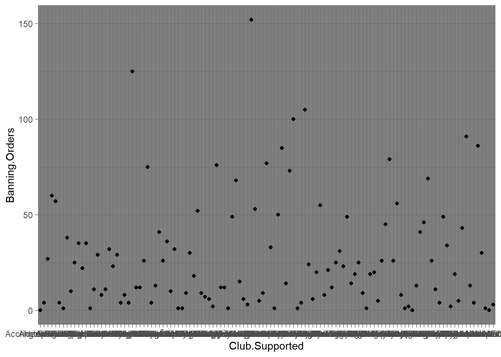
Changing the theme is not all you can do with the third element. For example here you can’t really read the axis labels, because they’re all overlapping. One solution would be to rotate your axis labels 90 degrees, with the following code: axis.text.x = element_text(angle = 90, hjust = 1). You pass this code to the theme argument.
ggplot(data = fbo, aes(x = Club.Supported, y=Banning.Orders)) +
geom_point() +
theme(axis.text.x = element_text(angle = 90, hjust = 1)) 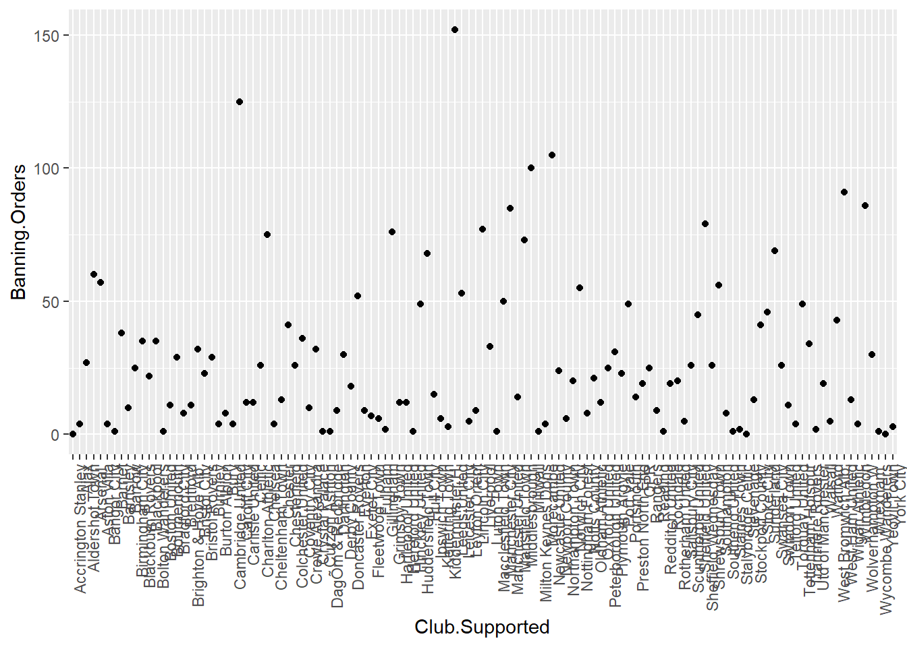
OK what if we don’t want it to be points, but instead we wanted it to be a bar graph?
ggplot(data = fbo, aes(x = Club.Supported, y=Banning.Orders)) + #data
geom_bar(stat = "identity") + #geometry
theme(axis.text.x = element_text(angle = 90, hjust = 1)) #backgroud coordinate system
You might notice here we pass an argument stat = "identity" to geo_bar() function. This is because you can have a bar graph where the height of the bar shows frequency (stat = “count”), or where the height is taken from a variable in your dataframe (stat = “identity”). Here we specified a y-value (height) as the Banning.Orders variable.
So this is cool! But what if I like both?
Well this is the beauty of the layering approach of ggplot2. You can layer on as many geoms as your little heart desires! XD
ggplot(data = fbo, aes(x = Club.Supported, y=Banning.Orders)) + #data
geom_bar(stat = "identity") + #geometry 1
geom_point()+ #geometry 2
theme(axis.text.x = element_text(angle = 90, hjust = 1)) #backgroud coordinate system
You can add other things too. For example you can add the mean number of Banning.Orders:
ggplot(data = fbo, aes(x = Club.Supported, y=Banning.Orders)) + #data
geom_bar(stat = "identity") + #geometry 1
geom_point() + #geometry 2
geom_hline(yintercept = mean(fbo$Banning.Orders)) + #mean line
theme(axis.text.x = element_text(angle = 90, hjust = 1)) #backgroud coordinate system
This is basically all you need to know to build a graph! So far we have introduced a lot of code some of which you may not fully understand. Don’t worry too much, we just wanted to give you a quick introduction to some of the possibilities. Later in the session we will go back to some of these functions in a slower way.
##What graph should I use?
There are a lot of points to consider when you are choosing what graph to use to visually represent your data. There are some best practice guidelines, but at the end of the day, you need to consider what is best for your data. What do you want to show? What graph will best communicate your message? Is it a comparison between groups? Is it the frequency distribution of 1 variable?
As some guidance, you can use the below cheatsheet, taken from Nathan Yau’s blog Flowingdata:

However, keep in mind that this is more of a guideline, aimed to nudge you in the right direction. There are many ways to visualise the same data, and sometimes you might want to experiment with some of these, see what the differences are.
There is also a vast amount of research into what works in displaying quantitative information. The classic book is by Edward Tufte,1 but since him there are many other researchers as well who focus on approaches to displaying data. Two useful books you may want to consider are Few (2012)2 and Cairo (2016).3 Claus Wilke is also producing a textbook that is work in progress but freely available in the internet. These authors tend to produce recommendations on what to use (and not use) in certain contexts.
For example, most data visualisation experts agree that you should not use 3D graphics unless there is a meaning to the third dimension. So using 3D graphics just for decoration, as in this case is normally frowned upon. However there are cases when including a third dimension is vital to communicating your findings. See this example.
{kind=link}
Also often certain chart types are villanified. For example, the pie chart is one such example. A lot of people really dislike pie charts, eg see here or here. If you want to display proportion, research indicates that a square pie chart is more likely to be interpreted correctly by viewers see here
Also, in some cases bar plots can hide important features of your data, and might not be the most appropriate means for comparison:

This has lead to a kickstarter campaign around actually banning bar plots…!
So choosing the right plot and how to design the different elements of a plot is somehow of an art that requires practice and a good understanding of the data visualisation literature. Here we can only provide you with an introduction to some of these issues. Other books that focus on
An important consideration is that the plot that you use depends on the data you are plotting, as well as the message you want to convey with the plot, the audience that is intended for, and even the format in which it will be presented (a website, a printed report, a power point presentation, etc.). So for example, returning again to the difference between number of banning orders between clubs in different leagues, what are some ways of plotting these?
One suggestion is to make a histogram for each one. You can use ggplot’s facet_wrap() option to split graphs by a grouping variable. For example, to create a histogram of banning orders you write:
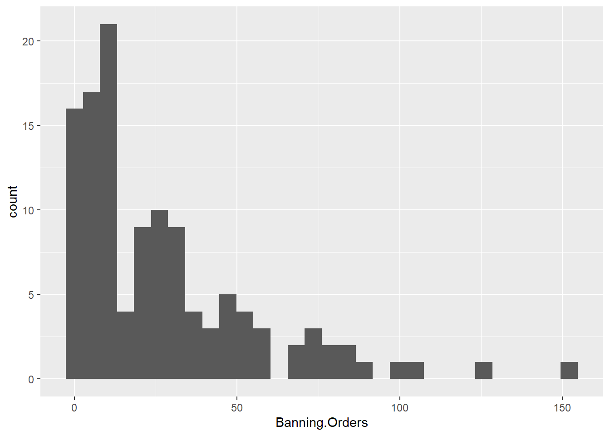
Now to split this by League.of.the.Club.Supported, you use facet_wrap() in the coordinate layer of the plot.
ggplot(data = fbo, aes(x = Banning.Orders)) +
geom_histogram() +
facet_wrap(~League.of.the.Club.Supported)
Well you can see there’s different distribution in each league. But is this easy to compare? Maybe another approach would make it easier? Personally I like boxplots for showing distribution. So let’s try:

This makes the comparison significantly easier, right? But the order is strange! Remember we talked about factors in previous weeks? Well the good thing about factors is that we can arrange them in their natural order. If we dont’ describe an order, then R uses the alphabetical order. So let’s reorder our factor. To do that we are specifying the levels in the order in which we want to be embedded witin the factor. We use code we introduced last week to do this.
And now create the plot again!
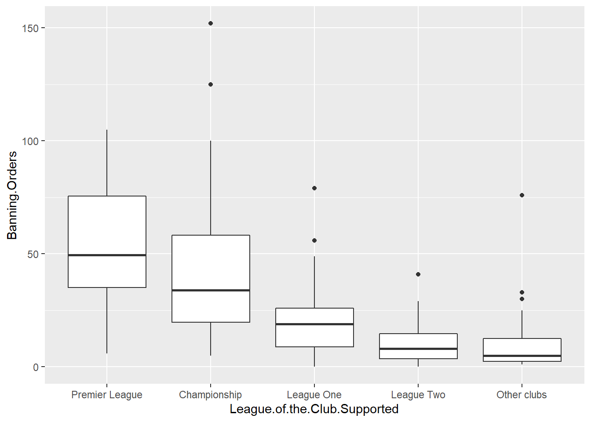
Now this is great! We can see that the higher the league the more banning orders they have. Any ideas why?
We’ll now go through some examples of making graphs using ggplot package stopping a bit more on each of them.
##Histograms
Histograms are useful ways of representing quantitative variables visually.
As mentioned earlier, we will emphasise in this course the use of the ggplot() function. With ggplot() you start with a blank canvass and keep adding specific layers. The ggplot() function can specify the dataset and the aesthetics (the visual characteristics that represent the data).
To get the data we’re going to use here, load up the package “MASS” and then call the Boston data into your environment.
This package has a dataframe called “Boston”. This has data about Housing Values in suburbs of Boston (USA). To access the codebook (how you find out what variables are) use the “?”.
OK so let’s make a graph about the variable which represents the per capita crime rate by town (’crim’).
If you want to produce a histogram with the ggplot function you would use the following equivalent code:
## `stat_bin()` using `bins = 30`. Pick better value with `binwidth`.
So you can see that ggplot works in a way that you can add a series of additional specifications (layers, annotations). In this simple plot the ggplot function simply maps crim as the variable to be displayed (as one of the aesthetics) and the dataset. Then you add the geom_histogram to tell R that you want this variable to be represented as a histogram. Later we will see what other things you can add.
A histogram is simply putting cases in “bins” and then creates a bar for each bin. You can think of it as a visual grouped frequency distribution. The code we have used so far has used a bin-width of size range/30 as R kindly reminded us in the output. But you can modify this parameter if you want to get a rougher or a more granular picture. In fact, you should always play around with different specifications of the bin-width until you find one that tells the full story in a parsimonious way.
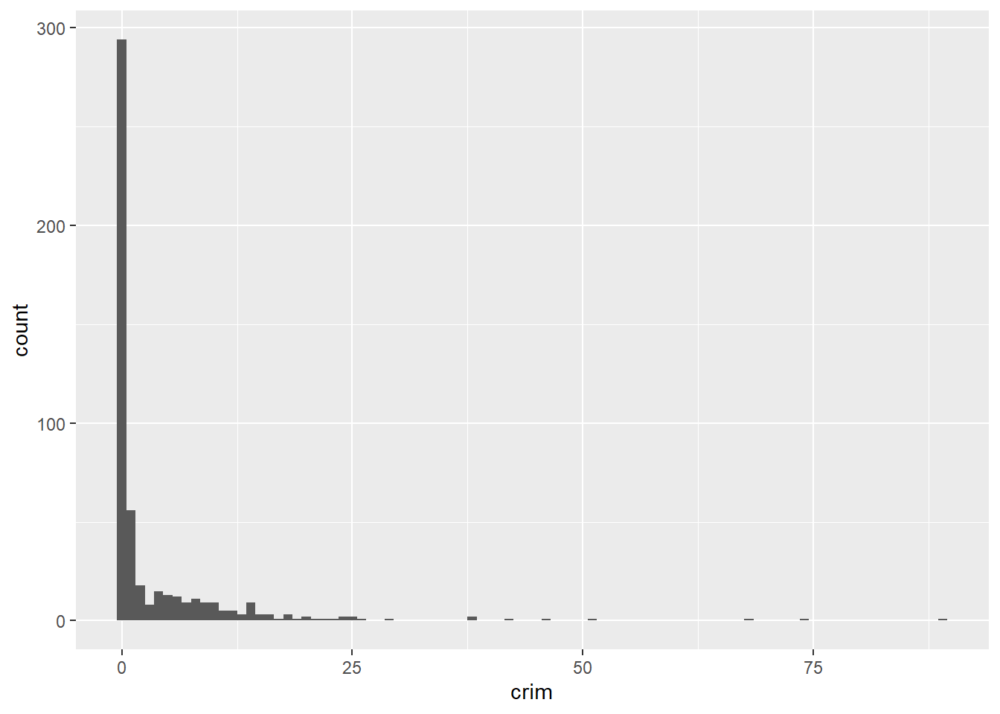
We can pass arguments to the the geoms, here we are changing the size of the bins (for further details on other arguments you can check the help files). Using bin-width of 1 we are essentially creating a bar for every one unit increase in the percent rate of crime. We can still see that most towns have a very low level of crime.
Let’s sum the number of towns with a value lower than 1 in the per capita crime rate. We use the sum function for this, specifying we are only interested in adding cases where the value of the variable crim is lower than 1.
## [1] 332We can see that the large majority of towns, 332 out of 506, have a per capita crime rate below 1%. But we can also see that there are some towns that have a high concentration of crime. This is a spatial feature of crime; it tends to concentrate in particular areas and places. You can see how we can use visualisations to show the data and get a first feeling for how it may be distributed.
When plotting a continuous variable we are interested in the following features:
- Asymmetry: whether the distribution is skewed to the right or to the left.
- Outliers: Are there one or more values that seem very unlike the others?
- Multimodality: How many peaks has the distribution? More than one peak may indicate that the variable is measuring different groups.
- Impossibilities or other anomalies: Values that are simply unrealistic given what we are measuring (e.g., somebody with an age of a 1000 years). Sometimes you may come across a distribution of data with a very high (and implausible) frequency count for a particular value. Maybe you measure age and you have a large number of cases aged 99 (which is often a code used for missing data).
- Spread: this gives us an idea of variability in our data.
Often we visualise data because we want to compare distributions. Most of data analysis is about making comparisons. We are going to explore whether the distribution of crime in this dataset is different for less affluent areas. The variable medv measures in the Boston dataset the median value of owner-occupied homes. For the purposes of this illustration I want to dichotomise4 this variable, to create a group of towns with particularly low values versus all the others. For further details in how to recode variables with R you may want to read the relevant sections in Quick R or the R Cookbook. We will learn more about recoding and transforming variables in R soon.
How can we create a categorical variable based on information from a quantitative variable? Let’s see the following code and pay attention to it and the explanation below.
Boston$lowval[Boston$medv <= 17.02] <- "Low value"
Boston$lowval[Boston$medv > 17.02] <- "Higher value"First we tell R to create a new vector (“lowval”) in the Boston data frame. This vector will be assigned the character value “Low value” when the condition within the square brackets is met. That is, we are saying that whenever the value in “medv” is below 17.02 then the new variable lowval will equal “Low value”. I have chosen 17.02 as this is the first quartile for medv. Then we tell R that when the value is greater than 17.02 we will assign those cases to a new textual category called “Higher Value”.
The variable we created was a character vector (as we can see if we run the class function). so we are going to transform it into a factor using the as.factor function (many functions designed to work with categorical variables expect a factor as an input, not just a character vector). If we rerun the class function we will see we changed the original variable
## [1] "character"## [1] "factor"Now we can produce the plot. We will do this using facets. Facets are another element of the grammar of graphics, we use it to define subsets of the data to be represented as multiple groups, here we are asking R to produce two plots defined by the two levels of the factor we just created.

Visually this may not look great, but it begins to tell a story. We can see that there is a considerable lower proportion of towns with low levels of crime in the group of towns that have cheaper homes. It is a flatter, less skewed distribution. You can see how the facet_grid() expression is telling R to create the histogram of the variable mentioned in the ggplot function for the groups defined by the categorical input of interest (the factor “lowval”).
Instead of using facets, we could overlay the histograms with a bit of transparency. Transparencies work better in screens than in printed document, so keep in mind this when deciding whether to use them instead of facets. The code is as follows:
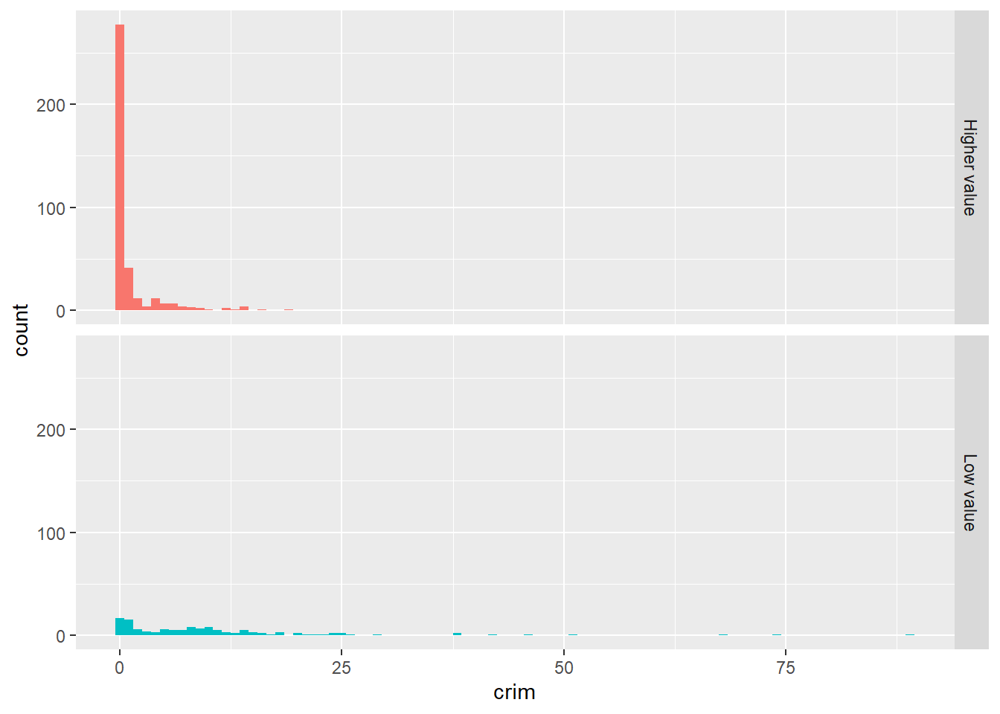
In the code above, the fill argument identifies the factor variable in the dataset grouping the cases. Also, position = identity tells R to overlay the distributions and alpha asks for the degree of transparency, a lower value (e.g., 0.2) will be more transparent.
In this case, part of the problem we have is that the skew can make it difficult to appreciate the differences. When you are dealing with skewed distributions such as this, it is sometimes convenient to use a transformation.5 We will come back to this later this semester. For now suffice to say, that taking the logarithm of a skewed variable helps to reduce the skew and to see patterns more clearly. In order to visualise the differences here a bit better we could ask for the logarithm of the crime per capita rate. Notice how I also add a constant of 1 to the variable crim, this is to avoid NA values in the newly created variable if the value in crim is zero (you cannot take the log of 0).
ggplot(Boston, aes(x = log10(crim + 1), fill = lowval)) +
geom_histogram(position = "identity", alpha = 0.4)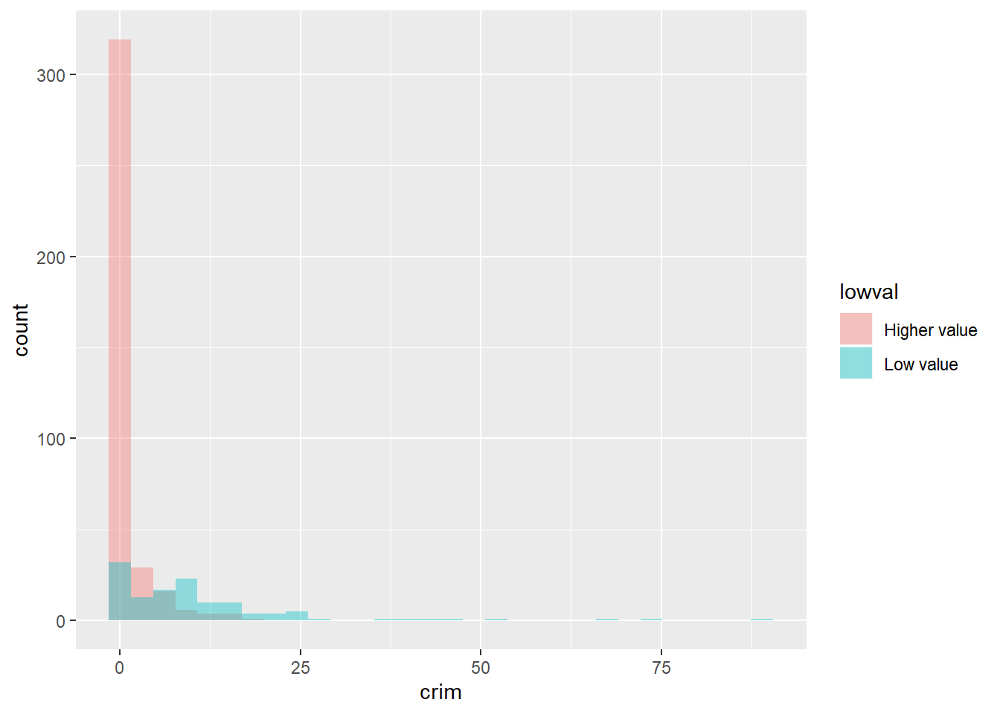
The plot now is a bit clearer. It seems pretty evident that the distribution of crime is slightly different between these two types of towns.
##Density plots
For smoother distributions, you can use density plot. You should have a healthy amount of data to use these or you could end up with a lot of unwanted noise. Let’s first look at the single density plot for all cases. Notice all we are doing is invoking a different kind of geom:
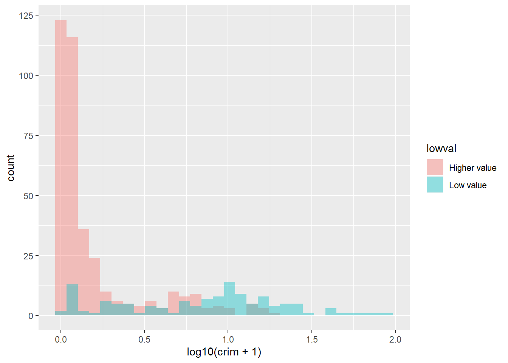
In a density plot, we attempt to visualize the underlying probability distribution of the data by drawing an appropriate continuous curve. So in a density plot then the area under the lines sum to 1 and the Y, vertical, axis now gives you the estimated (guessed) probability for the different values in the X, horizontal, axis. This curve is guessed from the data and the method we use for this guessing or estimation is called kernel density estimation. You can read more about density plots here.
In this plot we can see that there is a high estimated probability of observing a town with near zero per capita crime rate and a low estimated probability of seeing towns with large per capita crime rates. As you can observe it provides a smoother representation of the distribution (as compared to the histograms).
You can also use this to compare the distribution of a quantitative variable across the levels in a categorical variable (factor) and, as before, is possibly better to take the log of skewed variables such as crime:
#We are mapping "lowval" as the variable colouring the lines
ggplot(Boston, aes(x = log10(crim + 1), colour = lowval)) +
geom_density() 
Or you could use transparencies:

Did you notice the difference with the comparative histograms? By using density plots we are rescaling to ensure the same area for each of the levels in our grouping variable. This makes it easier to compare two groups that have different frequencies. The areas under the curve add up to 1 for both of the groups, whereas in the histogram the area within the bars represent the number of cases in each of the groups. If you have many more cases in one group than the other it may be difficult to make comparisons or to clearly see the distribution for the group with fewer cases. So, this is one of the reasons why you may want to use density plots.
Density plots are a good choice when you want to compare up to three groups. If you have many more groups you may want to consider other alternatives. One such alternative is the ridgeline plot, also often called the Joy Division plot (since it was immortalised in the cover of one of their albums):

They can be produced with the ggridges package. BEfore we dichotomised the variable medv in a manual way, we can use more direct ways of splitting nummerica variables into various categories using information already embedded on them. Say we want to split medv into deciles. We could use the mutate function in dplyr for this.
##
## Attaching package: 'dplyr'## The following object is masked from 'package:MASS':
##
## select## The following objects are masked from 'package:stats':
##
## filter, lag## The following objects are masked from 'package:base':
##
## intersect, setdiff, setequal, unionThe mutate function adds a new variable to our existing data frame object. We are naming this variable dec_medv because we are going to split medv into ten groups of equal size. To do this we will use the ntile function as an argument within mutate. We will define the new dec_medv variable explaining to R that this variable will be the result of passing the ntile function to medv. So that ntile breaks medv into 10 we pass this value as an argument to the function. So that the result of executing mutate are stored we assign this to the Boston object.
Check the results:
##
## 1 2 3 4 5 6 7 8 9 10
## 51 51 50 51 50 51 51 50 51 50We can now use this new variable to illustrate the use of the ggridge package. First you will need to install this package and then load it. You will see all this package does is to extend the functionality of ggplot by adding a new type of geom. Here the variable defining the groups needs to be a factor, so we will tell ggplot to treat dec_medv as a factor using as.factor.
##
## Attaching package: 'ggridges'## The following object is masked from 'package:ggplot2':
##
## scale_discrete_manual## Picking joint bandwidth of 0.072
We can see that the distribution of crime is particularly different when we focus in the three deciles with the lowest level of income. For more details you can read the vignette for this package.
##Box plots
Box plots are an interesting way of presenting the 5 number summary in a visual way. This video may help you to understand them better. If we want to use ggplot for plotting a single numerical variable we need some convoluted code, since ggplot assumes you want a boxplot to compare various groups. Therefore we need to set some arbitrary value for the grouping variable and we also may want to remove the x-axis tick markers and label.
For this illustration, I am going to display the distribution of the median value of property in the various towns instead of crime.
ggplot(Boston, aes(x = 1, y = medv)) +
geom_boxplot() +
scale_x_continuous(breaks = NULL) + #removes the tick markers from the x axis
theme(axis.title.x = element_blank())Boxplots, however, really come to life when you do use them to compare the distribution of a quantitative variable across various groups. Let’s look at the distribution of log(crime) across cheaper and more expensive areas:

With a boxplot like this you can see straight away that the bulk of cheaper areas are very different from the bulk of more expensive areas. The first quartile of the distribution for low areas about matches the point at which we start to see outliers for the more expensive areas.
This can be even more helpful when you have various groups. Let’s try an example using the BCS0708 data frame. This is a dataset from the 207/08 British Crime Survey.You can use the code below to download it.
##R in Windows have some problems with https addresses, that's why we need to do this first:
urlfile<-'https://raw.githubusercontent.com/jjmedinaariza/LAWS70821/master/BCS0708.csv'
#We create a data frame object reading the data from the remote .csv file
BCS0708<-read.csv(url(urlfile))This dataset contains a quantitative variable that measures the level of worry for crime (tcviolent): high scores represent high levels of worry. We are going to see how the score in this variable changes according to ethnicity (ethgrp2).
#A comparative boxplot of ethnicity and worry about violent crime
ggplot(BCS0708, aes(x = ethgrp2, y = tcviolent)) +
geom_boxplot()## Warning: Removed 3242 rows containing non-finite values (stat_boxplot).
Nice. But could be nicer. To start with we could order the groups along the X axis so that the ethnic groups are positioned according to their level of worry. Secondly, we may want to exclude the information for the NA cases on ethnicity (represented by a flat line).
#A nicer comparative boxplot (excluding NA and reordering the X variable)
ggplot(subset(BCS0708, !is.na(ethgrp2) & !is.na(tcviolent)),
aes(x = reorder(ethgrp2, tcviolent, FUN = median), y = tcviolent)) +
geom_boxplot()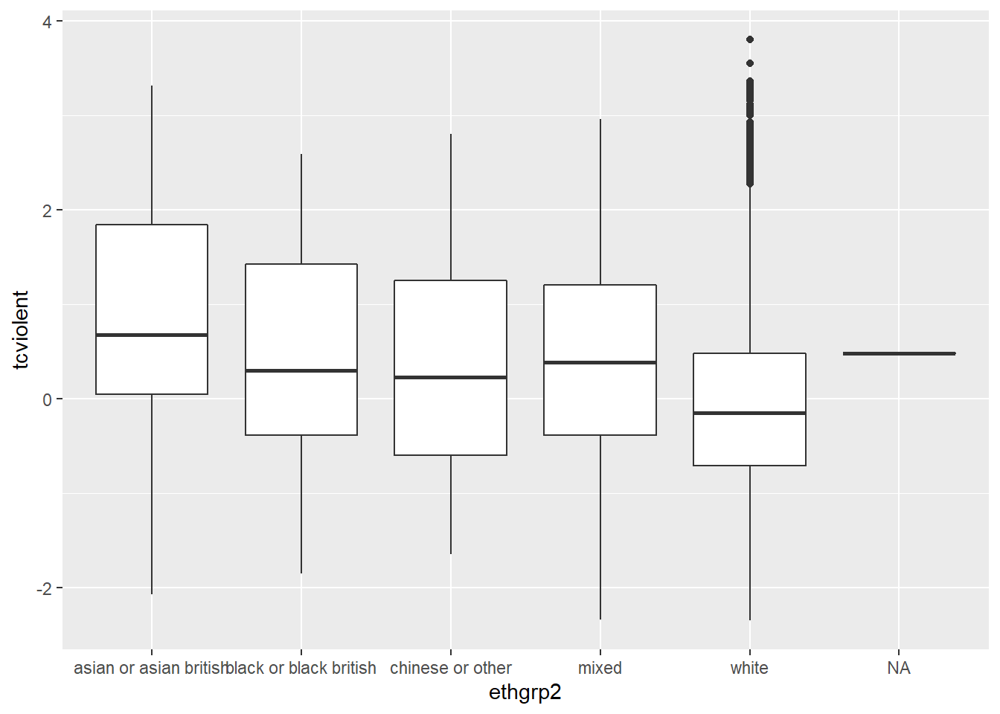
The subset function is using a logical argument to tell R to only use the cases that do not have NA values in the two variables that we are using. The exclamation mark followed by is.na and then the name of a variable is R way os saying “the contrary of is NA for the specified variable”. The reorder function on the other hand is asking R to reorder the levels in ethnicity according to the median value of worry of violent crime. Since we are using those functions within the ggplot function this subsetting and this reordering are not introducing permanent changes in your original dataset. If you prefer to reorder according to the mean you only need to change that parameter after the FUN option (e.g, FUN = mean).
##Scatter plots with two variables
When looking at the relationship between two quantitative variables nothing beats the scatterplot. This is a lovely article in the history of the scatterplot and this video may help you to understand them better.
A scatterplot plots one variable in the Y axis, and another in the X axis. Typically, if you have a clear outcome or response variable in mind, you place it in the Y axis, and you place the explanatory variable in the X axis.
This is how you produce a scatterplot with ggplot():
#A scatterplot of crime versus median value of the properties
ggplot(Boston, aes(x = medv, y = crim)) +
geom_point()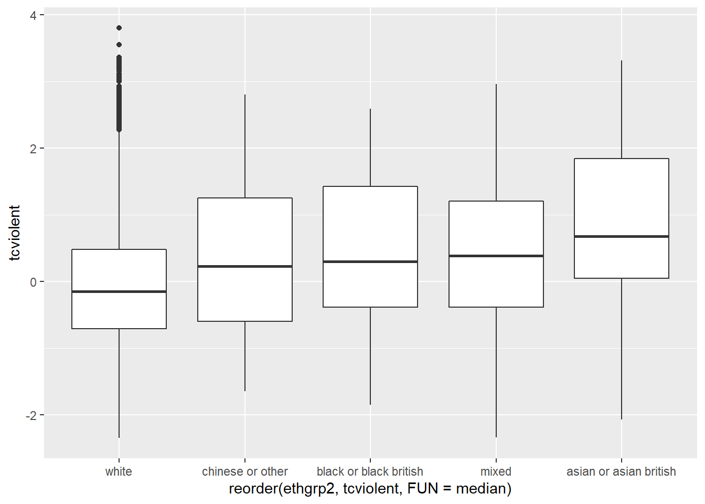
Each point represents a case in our dataset and the coordinates attached to it in this two dimensional plane are given by their value in the Y (crime) and X (median value of the properties) variables.
What do you look for in a scatterplot? You want to assess global and local patterns, as well as deviations. We can see clearly that at low levels of medv there is a higher probability in this data that the level of crime is higher. Once the median value of the property hits $30,000 the level of crime is nearly zero for all towns. So far so good, and surely predictable. The first reason why we look at scatterplots is to check our hypothesis (e.g., poorer areas, more crime).
However, something odd seems to be going on when the median property value is around $50,000. All of the sudden the variability for crime goes up. We seem to have some of the more expensive areas also exhibiting some decent level of crime. What’s going on? To be honest I have no clue (although I have some hypothesis)! This is my first look at this dataset. But the pattern at the higher level of property value is indeed odd.
This is the second reason why you want to plot your data before you do anything else. It helps you to detect apparent anomalies. I say this is an anomaly because the break in pattern is quite noticeable. It is hard to think of a natural process that would generate this sudden radical increase in crime once the median property value reaches the $50k mark. If you were analysing this for real, you would want to know what’s driving this pattern (e.g., find out about the original data collection, the codebook, etc.): perhaps the maximum median value was capped at $50K and we are seeing this as a dramatic increase when the picture is more complex? For now we are going to let this rest.
One of the things you may notice with a scatterplot is that even with a smallish dataset such as this, with just about 500 cases, overplotting may be a problem. When you have many cases with similar (or even worse the same) value, it is difficult to tell them apart. There’s a variety of ways of dealing with overplotting. One possibility is to add some transparency to the points:
ggplot(Boston, aes(x = medv, y = crim)) +
geom_point(alpha=.4) #you will have to test different values for alpha
Why this is an issue may be more evident with the BCS0708 data. Compare the two plots:
## Warning: Removed 3252 rows containing missing values (geom_point).
## Warning: Removed 3252 rows containing missing values (geom_point).
The second plot gives us a better idea of where the observations seem to concentrate in a way that we could not see with the first.
Overplotting can occur when a continuous measurement is rounded to some convenient unit. This has the effect of changing a continuous variable into a discrete ordinal variable. For example, age is measured in years and body weight is measured in pounds or kilograms. Age is a discrete variable, it only takes integer values. That’s why you see the points lined up in parallel vertical lines. This also contributes to the overplotting in this case.
One way of dealing with this particular problem is by jittering. Jittering is the act of adding random noise to data in order to prevent overplotting in statistical graphs. In ggplot one way of doing this is by passing an argument to geom_point specifying you want to jitter the points. This will introduce some random noise so that age looks less discrete.
ggplot(BCS0708, aes(x = age, y = tcviolent)) +
geom_point(alpha=.2, position="jitter") #Alternatively you could replace geom_point() with geom_jitter() in which case you don't need to specify the position## Warning: Removed 3252 rows containing missing values (geom_point).
Another alternative for solving overplotting is to bin the data into rectangles and map the density of the points to the fill of the colour of the rectangles.
## Warning: Removed 3252 rows containing non-finite values (stat_bin2d).
#The same but with nicer graphical parameters
ggplot(BCS0708, aes(x = age, y = tcviolent)) +
stat_bin2d(bins=50) + #by increasing the number of bins we get more granularity
scale_fill_gradient(low = "lightblue", high = "red") #change colors## Warning: Removed 3252 rows containing non-finite values (stat_bin2d).
What this is doing is creating boxes within the two dimensional plane; counting the number of points within those boxes; and attaching a colour to the box in function of the density of points within each of the rectangles.
When looking at scatterplots, sometimes it is useful to summarise the relationships by mean of drawing lines. You could for example add a line representing the conditional mean. A conditional mean is simply mean of your Y variable for each value of X. Let’s go back to the Boston dataset. We can ask R to plot a line connecting these means using geom_line() and specifying you want the conditional means.
ggplot(Boston, aes(x = medv, y = crim)) +
geom_point(alpha=.4) +
geom_line(stat='summary', fun.y=mean)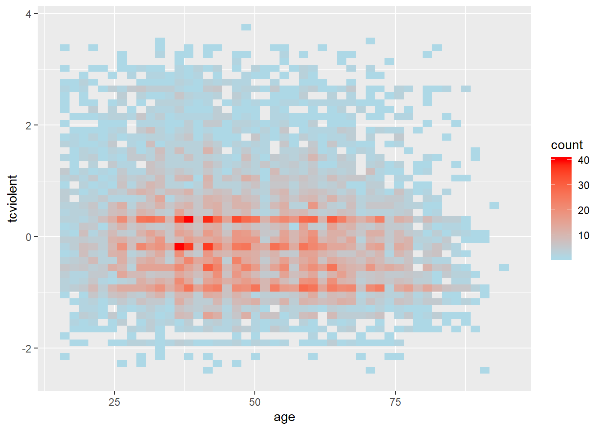
With only about 500 cases there are loads of ups and downs. If you have many more cases for each level of X the line would look less rough. You can, in any case, produce a smoother line using geom_smooth instead. We will discuss later this semester how this line is computed (although you will see the R output tells you, you are using something call the “loess” method). For now just know that is a line that tries to estimate, to guess, the typical value for Y for each value of X.
ggplot(Boston, aes(x = medv, y = crim)) +
geom_point(alpha=.4) +
geom_smooth(colour="red", size=1, se=FALSE) #We'll explain later this semester what the se argument does, colour is simply asking for a red line instead of blue (which I personally find harder to see. I'm also making the line a bit thicker with size 1)## `geom_smooth()` using method = 'loess' and formula 'y ~ x'
As you can see here you produce a smoother line than with the conditional means. The line, as the scatterplot, seems to be suggesting an overall curvilinear relationship that almost flattens out once property values hit $20k.
##Scatter plots conditioning in a third variable
There are various ways to plot a third variable in a scatterplot. You could go 3D and in some contexts that may be appropriate. But more often than not it is preferable to use only a two dimensional plot.
If you have a grouping variable you could map it to the colour of the points as one of the aesthetics arguments. Here we return to the Boston scatterplot but will add a third variable, that indicates whether the town is located by the river or not.
#Scatterplot with two quantitative variables and a grouping variable, we are telling R to tell "chas", a numeric vector, as a factor.
ggplot(Boston, aes(x = medv, y = crim, colour = as.factor(chas))) +
geom_point() 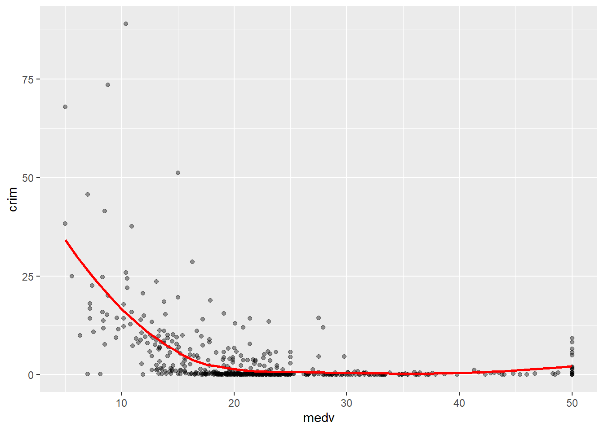
Curiously, we can see that there’s quite a few of those expensive areas with high levels of crime that seem to be located by the river.
As before you can add smooth lines to capture the relationship. What happens now, though, is that ggplot will produce a line for each of the levels in the categorical variable grouping the cases:
ggplot(Boston, aes(x = medv, y = crim, colour = as.factor(chas))) +
geom_point(alpha=.4) + #I am doing the points semi-transparent to see the lines better
geom_smooth(se=FALSE, size=1) #I am doing the lines thicker to see them better## `geom_smooth()` using method = 'loess' and formula 'y ~ x'
You can see how the relationship between crime and property values is more marked for areas not bordering the river, mostly because you have considerably fewer cheaper areas bordering the river. Notice as well the upward trend in the green line at high values of medv. As we saw there seems to be quite a few of those particularly more expensive areas that have high crime and seem to be by the river.
We can also map a quantitative variable to the colour aesthetic. When we do that, instead of different colours for each category we have a gradation in colour from darker to lighter depending on the value of the quantitative variable. Below we display the relationship between crime and property values conditioning on the status of the area (high values in lstat represent lower status).
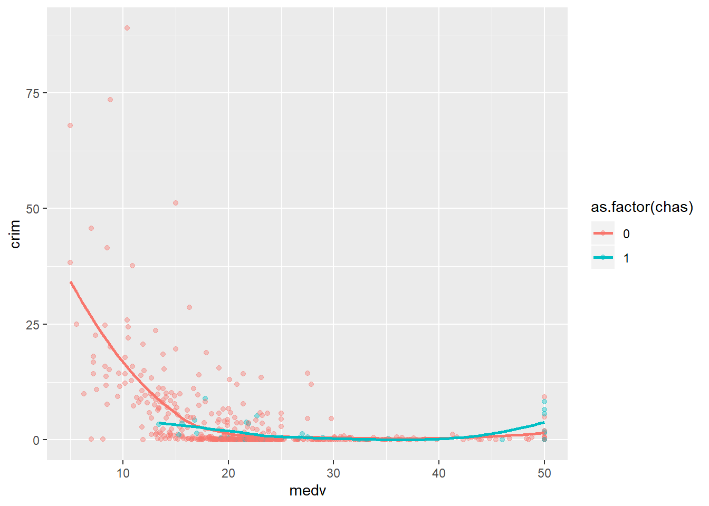
As one could predict lstat and medv seem to be correlated. The areas with low status tend to be the areas with cheaper properties (and more crime) and the areas with higher status tend to be the areas with more expensive properties (and less crime).
You could map the third variable to a different aesthetic (rather than colour). For example, you could map lstat to size of the points. This is called a bubblechart. The problem with this, however, is that it can make overplotting more acute sometimes.
ggplot(Boston, aes(x = medv, y = crim, size = lstat)) +
geom_point() #You may want to add alpha for some transparency here.
If you have larger samples and the patterns are not clear (as we saw when looking at the relationship between age and worry of violent crime) conditioning in a third variable can produce hard to read scatterplots (even if you use transparencies and jittering). Let’s look at the relationship between worry for violent crime and age conditioned on victimisation during the previous year:
ggplot(BCS0708, aes(x = age, y = tcviolent, colour = bcsvictim)) +
geom_point(alpha=.4, position="jitter")## Warning: Removed 3252 rows containing missing values (geom_point).
You can possibly notice that there are more green points in the left hand side (since victimisation tend to be more common among youth). But it is hard to read the relationship with age. We could try to use facets instead using facet_grid?
ggplot(BCS0708, aes(x = age, y = tcviolent)) +
geom_point(alpha=.4, position="jitter") +
facet_grid( .~ bcsvictim)## Warning: Removed 3252 rows containing missing values (geom_point).
It is still hard to see anything, though perhaps you can notice the lower density the points in the bottom right corner in the facet displaying victims of crime. In a case like this may be helpful to draw a smooth line
ggplot(BCS0708, aes(x = age, y = tcviolent, colour = bcsvictim)) +
geom_point(alpha=.1, position="jitter") +
geom_smooth(size=1.5, se=FALSE)## `geom_smooth()` using method = 'gam' and formula 'y ~ s(x, bs = "cs")'## Warning: Removed 3252 rows containing non-finite values (stat_smooth).## Warning: Removed 3252 rows containing missing values (geom_point).
What we see here is that for the most part the relationship of age and worry for violent crime looks quite flat, regardless of whether you have been a victim of crime or not. At least, for most people. However, once we get to the 60s things seem to change a bit. Those over 62 that have not been a victim of crime in the past year start to manifest a lower concern with crime as they age (in comparison with those that have been a victim of crime).
##Scatterplot matrix
Sometimes you want to produce many scatterplots simultaneously to have a first peak at the relationship between the various variables in your data frame. The way to do this is by using a scatterplot matrix. Unfortunately, ggplot2 doesn’t do scatterplot matrix too well. For this it is better to use the graphics tools of base R.
Not to overcomplicate things we will only use a few variables from the Boston dataset:
#I create a new data frame that only contains 4 variables included in the Boston dataset and I am calling this new data frame object BostonSM
Boston_SM <- subset(Boston, select = c(crim, medv, indus, lstat))Then we run the scatterplot matrix using the pairs() function:

We can modify this code to put additional information in the matrix. As you may have noticed the matrix is symmetrical, for every scatterplot in the upper left side there is a similar on the the bottom right side. We are going to modify this matrix so that the diagonal boxes not only display the name of the variable but also a histogram for the variables and to display the correlation coefficients in the upper left side (instead of printing twice the same scatterplot). We will also make the points smaller and will add a smooth line within each scatterplot.
The code for this is a bit complicated. We are going to introduce customised functions for the panels (I took them from Winston Chang book). First we are going to create these two customised functions. One to produce the correlations between each pair of variables and another for producing the histograms for each of the variables.
After that we will use the pairs() function inserting the inputs that result form using these customised functions. You are likely not to understand the code for the first part. Particularly because apart from doing computations is controlling the aspect of the results. Don’t worry, I’m not expecting to understand this code. Just cut and paste. But I think it is important you understand that apart from using the functions created by others and included in packages, once you become proficient in R you can start producing your own functions to expand the range of what you can do with R.
panel.cor <- function(x, y, digits=2, prefix="", cex.cor, ...){
usr <- par("usr")
on.exit(par(usr))
par(usr = c(0, 1, 0, 1))
r <- abs(cor(x, y, use="complete.obs"))
txt <- format(c(r, 0.123456789), digits=digits)[1]
txt <- paste(prefix, txt, sep="")
if(missing(cex.cor)) cex.cor <- 0.8/strwidth(txt)
text(0.5, 0.5, txt, cex = cex.cor * (1+r)/2)
}
panel.hist <-function(x, ...){
usr <- par("usr")
on.exit(par(usr))
par(usr = c(usr[1:2], 0, 1.5))
h <- hist(x, plot = FALSE)
breaks <- h$breaks
nB <- length(breaks)
y <- h$counts
y <- y/max(y)
rect(breaks[-nB], 0, breaks[-1], y, col="white", ...)
}We can now run the pairs() function using our customised functions as inputs.
pairs(Boston_SM, pch=".", #Produces smaller points to make it easier to see
upper.panel=panel.smooth, #Adds for smoothed lines to be added to the lower panel scatterplots
lower.panel=panel.cor, #Ask for correlation coeffients in the upper panel using our customised functions (the size of the numer is bigger is the correlation is bigger, but notice that the coefficient does not include the sign, whether is positve or negative, you need to infer that from the scatterplot)
diag.panel=panel.hist) #Ask for histograms in the diagonal using our customised function
We will explain what correlation coefficients are and when they are appropriate later this semester. For now just focus in trying to understand what the plots show. What do you think may be going on with the distribution of “indus” (proportion of non-retail business acres per town)?
As you can see getting results, once you get the knack of it, is only half of the way. The other, and more important, half is trying to make sense of the results. R cannot do that for you. For this you need to use a better tool: your brain (scepticism, curiosity, creativity, a lifetime of knowledge) and what Kaiser Fung calls “numbersense”.
##Titles and legends in ggplot2
We have introduced a number of various graphical tools, but what if you want to customise the way the produce graphic looks like? Here I am just going to give you some code for how to modify the titles and legends you use. For adding a title for a ggplot graph you use ggtitle().
#Notice how here we are using an additional function to ask R to treat the variable chas, which is numeric in our dataset, as if it were a factor (as.factor()). You need to do this if your variable is categorical but is encoded as numeric in your dataframe.
ggplot(Boston, aes(x = medv, y = crim, colour = as.factor(chas))) +
geom_point() +
ggtitle("Fig 1.Crime, Property Value and River Proximity of Boston Towns")
If you don’t like the default background theme for ggplot you can use a theme as discussed at the start, for example with creating a black and white background by adding theme_bw() as a layer:
ggplot(Boston, aes(x = medv, y = crim, colour = as.factor(chas))) +
geom_point() +
ggtitle("Fig 1.Crime, Property Value and River Proximity of Boston Towns") +
theme_bw()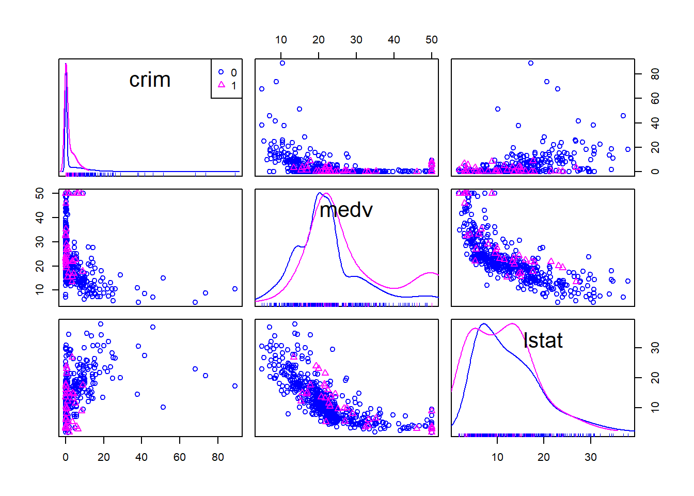
Using labs() you can change the text of axis labels (and the legend title), which may be handy if your variables have cryptic names. Equally you can manually name the labels in a legend. The value for “chas” are 0 and 1. This is not informative. We can change that.
ggplot(Boston, aes(x = medv, y = crim, colour = as.factor(chas))) +
geom_point() +
ggtitle("Fig 1.Crime, Property Value and River Proximity of Boston Towns") +
labs(x = "Median Property Value (in US Dollars x 1000)",
y = "Per capita crime rate",
colour = "Borders the river") +
scale_colour_discrete(labels = c("No", "Yes"))
Sometimes you may want to present several plots together. For this the gridExtra package is very good. You will first need to install it and then load it. You can then create several plots and put them all in the same image.
##
## Attaching package: 'gridExtra'## The following object is masked from 'package:dplyr':
##
## combine#Store your plots in various objects
p1 <- qplot(x=crim, data=Boston)
p2 <- qplot(x=indus, data=Boston)
p3 <- qplot(x=medv, data=Boston)
#Then put them all together using grid.arrange()
grid.arrange(p1, p2, p3, ncol=3) #ncol tells R we want them side by side, if you want them one in top of the other try ncol=1, in this case, however ncol=2 would possibly be the better solution. Try it!## `stat_bin()` using `bins = 30`. Pick better value with `binwidth`.## `stat_bin()` using `bins = 30`. Pick better value with `binwidth`.
## `stat_bin()` using `bins = 30`. Pick better value with `binwidth`.
##Plotting categorical data: bar charts
You may be wondering what about categorical data? So far we have only discussed various visualisations where at least one of your variables is quantitative. When your variable is categorical you can use bar plots (similar to histograms). We map the factor variable in the aesthetics and then use the geom_bar() function to ask for a bar chart.
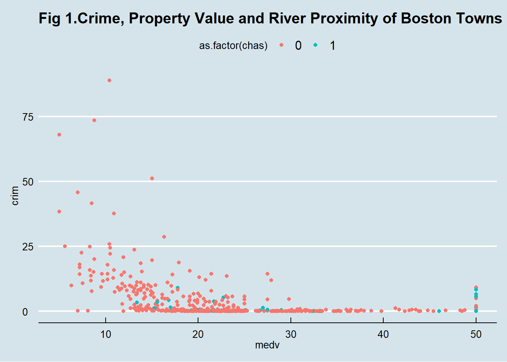
Unfortunately, the levels in this factor are ordered by alphabetical order, which is confusing. We can modify this by reordering the factors levels first -click here for more details. You could do this within the ggplot function (just for the visualisation), but in real life you would want to sort out your factor levels in an appropriate manner more permanently. As discussed last week, this is the sort of thing you do as part of pre-processing your data. And then plot.
## [1] "a bit unsafe" "fairly safe" "or very unsafe" "very safe"#Reordering the factor levels from very safe to very unsafe (rather than by alphabet). Notice that I am creating a new variable, it is often not unwise to do this to avoid messing up your original data.
BCS0708$walkdayR <- factor(BCS0708$walkday, levels=c('very safe',
'fairly safe','a bit unsafe','or very unsafe'))
#Plotting the variable again (and subsetting out the NA data)
ggplot(subset(BCS0708, !is.na(walkdayR)), aes(x=walkdayR)) +
geom_bar()
We can also map a second variable to the aesthetics, for example, let’s look at victimisation in relation to feelings of safety. For this we produce a stacked bar chart.

These sort of stacked bar charts are not terribly helpful if you are interested in understanding the relationship between these two variables. Instead what you want is a proportional stacked bar chart, that gives you the proportion of your “explanatory variable” (here victimisation in the past 12 months) within each of the levels of your “response variable” (here feelings of safety).
First we need to scale the data to 100% within each stack and then plot. The code here is also more complex. Again, I’m not expecting you to fully understand all of it. In your early days of using R, you will find yourself cutting and pasting chunks of code that you will only fully understand with practice.
#First we create a subset with the relevant data
.df1 <- data.frame(x = BCS0708$walkdayR, z = BCS0708$bcsvictim)
#Then we compute the proportions within the stacks
.df1 <- as.data.frame(with(.df1, prop.table(table(x, z), margin = NULL)))
#Finally we plot
stbcf <- ggplot(.df1, aes(x = x, y = Freq, fill = z)) +
geom_bar(position = "fill", stat = "identity") +
scale_y_continuous(expand = c(0.01, 0), labels = scales::percent_format()) + #Adapts the scale of the y axis and express the values in percentage terms
xlab("Feelings of safety") + #Another way of changing the label for the x axis
ylab("Percent") + #Change the label for the Y axis
guides(fill = guide_legend(title = NULL)) #This removes the title of the legent (bcsvictim), since the labels of the categories are self-explanatory
stbcf #autoprint the plot, notice how earlier rather than printing directly I stored the plot in the object with this name (the reason is that I want to use this plot later and don't want to rerun all the code again)
Here we can see that the those that express less feelings of safety are more likely to have experienced a victimisation in the past 12 months.
Sometimes, you may want to flip the axis, so that the bars are displayed horizontally. You can use the coord_flip() function for that.
#First we invoke the plot we created and stored earlier and then we add an additional specification with coord_flip()
stbcf + coord_flip()
You can also use coord_flip() with other ggplot plots (e.g., boxplots).
A particular type of bar chart is the divergent stacked bar chart, often used to visualise Likert scales. You may want to look at some of the options available for it via the HH package, the likert package or sjPlot. But we won’t cover them here in detail.
Keep in mind that knowing how to get R to produce a particular visualisation is only half the job. The other half is knowing when to produce a particular kind of visualisation. This blog, for example, discusses some of the problems with stacked bar charts and the exceptional circumstances in which you may want to use them.
There are other tools sometimes used for visualising categorical data. Pie charts is one of them. However, as mentioned at the beginning, many people advocate strongly against using pie charts and therefore this is the only pie chart you will see in this course:

cute pie chart
Also increasingly popular are mosaic plots. R is pretty good at doing them. However, we have covered already a lot of ground, plus I have some sympathy for Stephen Few’s arguments against mosaic plots.
What I would use instead are waffle charts. They’re super easy to make with the “waffle” package but I don’t think there’s time for them at this point, but look into them here.
##Further resources
By now you should know the path to data analysis wisdom will take time. The good news is that we live in a time where there are multiple (very often free) resources to help you along the way. The time where this knowledge was just the preserve of a few is long distant. If you are a motivated and disciplined person there is a lot that you can do to further consolidate and expand your data visualisation skills without spending money. I already recommended you the excellent ggplot2 online documentation. Here I just want to point you to a a few useful resources that you can pursue in the future.
First MOOCS (Massive Online Open Courses). There are loads of useful MOOCS that provide training in data visualisation for free (well, you can pay if you want a certificate, but you can also use the resources and learn for free).
Information visualisation. This course offers an introduction to some more advanced concepts to those presented in our tutorial. It also covers more advanced software for visualisations in the web.
You may also want to keep your eyes open for any new edition of Alberto Cairo’s MOOC on “Data Visualisation for Storytelling and Discovery” which covers not the software but the principles and theory of good static and interactive visualisation. But you can find the free materials for the course posted in the linked site (including the videolectures).
Second, online tutorials. One of the things you will also soon discover is that R users are keen to write “how to” guides in some of the 750 R devoted blogs or as part of Rpubs. Using google or similar you will often find solutions to almost any problem you will encounter using R. For example, in this blog there are a few tutorials that you may want to look to complement my own:
- Cheatsheet for visualising scatterplots
- Cheatsheet for visualizing distributions
- Cheatsheet for barplots
Third, blogs on data visualisation. If you use Feedly or a similar blog aggregator, you should add the following blogs to your reading list. They are written by leading people in the field and are full of useful advice: + Flowing Data + The Functional Art + Visual Business Intelligence + chartsnthings + Data Revelations
Fourth, resources for visualisations we don’t have the time to cover. R is way ahead some of the more popular data analysis programs you may be more familiar with (e.g SPSS or Excel). There’s many things you can do.
For example, if you like maps, R can also be used to produce visualisations of spatial data. There are various resources to learn how to do this and we teach this in our Crime Mapping module in the third year.
Also, you may be interested in producing interactive graphics in the internet. Data journalism is making big inroads into this area. You may want to have a look at the ggvis package, produced by the R Studio team, or rcharts.
Homework:
Download the NCOVR dataset from blackboard. You can look at the pdf provided there to understand better the variables in the dataset. Then read the data into R. You can use the read.csv function for this. So, provided you have the dataset sitting in your working directory you could use the following code to read the data into R:
Produce an appropriate visualisation to compare the distribution of homicide rate in the 1990s comparing Southern and Northern counties. Discuss the results.
Produce a scatterplot to explore the relationship between the homicide rate in the 1970s and the level of unemployment. Make sure you use geom_smooth to draw a line summarising the relationship. Discuss the results.
Is the relationship between homicide in 1970 and unemployment different in Southern and Northern counties? Produce a visualisation to explore this question. Remember the code we use above to look at conditioning on a third variable.
Now that you have selected a dataset for your essay you should aim to read it into R. Download the files (using code or manually) and then try to read it into R. You may come into problems, don’t worry. At least do try. Submit the code you use to do this and let us know, as part of your submission, if you were succesful or not in reading the data into an R object.
In the first lecture we introduced the idea that R is an object-oriented language, it is important you understand it is also polymorphic; which means that a single function can be applied to different types of inputs, which the function processes in the appropriate way. This will become clearer in a later example when we pass different inputs to the qplot function. In this case, since qplot only sees one quantitative variable it produces the histogram, an appropriate visualisation for this scenario.
#Data Carpentry (Week 4)
##Introduction
There are many situation in the process of data analysis where you have to work around your data to get it in shape ready for analysis.You may need for example to change your existing variables or create new variables (often using information stored in existing ones) in order to achieve your analytical goals. In this session, we are going to discuss and cover some of the scenarios in which this may be required and also explain how to do this. These skills will be particularly useful for getting your data ready for your coursework assignment.
For this practical we will use the data from a Eurobarometer. Eurobarometers are opinon polls conducted regularly on behalf of the European Commission since 1973. Some of them ask the same questions over time to evaluate changes in European’s views in a variety of subjects (standard Eurobarometers). Others are focused on special topics and are conducted less regularly (special Eurobarometers). They are a useful source of datasets that you could use for your undergraduate dissertation.
The data from these surveys is accessible through the data catalog of GESIS, a data warehouse at the Leibniz Institute for the Social Sciences in Germany. For downloading data from GESIS you have to register with them (following the registration link) here. Once you activate your registration you should be able to access the data at GESIS.

GESIS has a section of their website devoted to the Eurobarometer survey. You can access that section here. You could navigate this webpage to find the data we will be using for this tutorial, but to save time I will provide you a direct link to it. We will be using the special Eurobarometer 85.3 form 2016. This survey among other things asked Europeans about their views on gender violence.

You can access the data for this eurobarometer here.

You will see here that there are links to the files with the data in SPSS and STATA format. You can also see a tab where you could obtain the questionnaire for the survey. Once you are registered download the STATA version of the file and also an English version of the questionnaire. Make sure you place the file in your working directory. Once you do this you should be able to use the code we are using in this session.
First, we will load the data into our session. Since the data is in STATA format we will need to read the data into R using the haven package. Specifically, we will use the read_dta function for importing STATA data into R. As an argument we need to write the name of the file with the data (and if it is not in your working directory, the appropriate pathfile).
## [1] 27818 483We can see there are over 27000 cases (survey participants) and 483 variables.
##Thinking about your data
For the final coursework assignment, you will need to download other datasets but the process will be similar in that once you have the datasets you will need to think about what cases and what variables you want to work with. Imagine that we had to write our final assignment using this dataset and that we had to write a report about attitudes to sexual violence.
First, we would need to think if we wanted to use all cases in the data or only a subset of the cases. For example, when using something like the Eurobarometer we would need to consider if we are interested in exploring the substantive topic across Europe or only for some countries. Or alternatively you may want to focus your analysis only on men attitudes to sexual violence. In a situation like this you would need to filter cases.
So, for example, if we only wanted to work with the UK sample we would need tho figure out if there is a variable that identifies the country in the dataset. In the questionnaire you can see indeed that there is such a variable:

What we do not know is how this variable is named in the dataset. For this we need to look at the codebook. In this case, we can look at the interactive facility provided for GESIS for online data analysis, which provides an interactive online codebook for this dataset. You can access this facility in the link higlighted in the image below:

You can access similar applications for the two datasets that you need to use for the final coursework assignment. If you will use the ESS you can use an online facility here and if you are using the CSEW you can acccess a similar tool here.
Let’s explore the online facility for the Eurobarometer. If we expand the menus in the left hand side by clickin in variable description, and then in standard nation id variables, you will see there is a variable that provides a “country code”. This must be it. click on it and then you will see in the right hand side some information about this variable. You see the name of this variable (as it will appear in the dataset) “isocntry” and we can see this variable uses ISO 3166 codes to designate the country. This is an international standard set of abbreviations for country names. For the UK these codes are GB-GBN and GB-NIR (for Northern Ireland).

Now that we have this information we can run the code to select only the cases that have these values in the dataset. For doing something like that we would use the dplyr::filter function. We used the filter function in week 2. You can read more about it in the dplyr vignette.
##
## Attaching package: 'dplyr'## The following objects are masked from 'package:stats':
##
## filter, lag## The following objects are masked from 'package:base':
##
## intersect, setdiff, setequal, union## [1] "character"The variable isocntry is a character vector with codes for the different participating countries. Here we want to select all the cases in the survey that have either of two values in this vector (GB-GBN or GB-NIR). Since these values are text we need to use quotes to wrappen them up. Because we are selecting more one value we cannot simply say isocntry == "GB-BGN". We also need the cases from Northern Ireland. So, we use a particular operator introduced by dplyr called the piping operator (%in%). Basically, here we are creating a vector with the values we want and then asking R to look at those values within the isocntry vector so that we can filter everything else out. We will come back to the piping operator in greater detail later on.
If you run this code you will end up with a new object called uk_eb85_3 that only has 1306 observations. We have now a dataset that only has the British participants.
##Selecting variables
Perhaps for your coursework you define your essay question in such a way that you do not need to do any a priori filtering. Perhaps, for the sake of this example, we decide to do an analysis that focuses on looking at attitudes toward sexual violence for all of Europe and for all participants. Yet, you won’t be using 483 variables for certain. Among other reasons because our guidelines for the essay suggest you use fewer variables. The first thing you need to do is think about what variables you are going to use. This involves first thinking about what variables are available in the dataset that measure your outcome of interest.
The thing you are interested in explaining or better understanding is attitudes regarding sexual violence. So, you would need to spend some time thinking about how this survey measures these attitudes. You would need to screen the questionnaire and the codebook to identify these variables and their names in the dataset. Have a look at the questionnaire. The questions about gender violence start at the bottom of page 7. Which of these questions are questions about attitudes towards sexual violence?
Homework 1: Identify the name of all the variables that pertain to attitudes toward sexual violence. You will need this list in front of you when doing the Blackboard test
Once you have all of this you would need to think about which of these survey questions and items make more sense for your research question. This is something where you will need to use your common sense but also your understanding of the literature in the topic. Criminologists and survey researchers spend a lot of time thinking about what is the best way of asking questions about topics or concepts of interest. They often debate and write about this. So, as part of your essay, you will need to consider what do researchers consider are good questions to tap into the concepts you are studying.
There are many items in this survey that relate to this topic (and you need to identify as part of homework 1), but for purposes of continuing our illustration we are going to focus on the answers to question QB10. This question asks respondents to identify in what circumstances may be justified to have sexual intercourse without consent. The participants are read a list of items (e.g., “flirting before hand”) and they can select various of them if so they wish.

Ok, so we have now selected our variable. Say that we have done so on the basis of our understanding of the literature. Next we need to identify these variables in the dataset. What name is associated with this variable? Let’s look at the online interactive facility.

Damn! We have one question but several variables! This is common when the question in the survey allows for multiple responses. Typically when this is read into a dataset, survey researchers create a variable for each of the possible multiple responses. If the respondent identified one of those potential responses they will be assigned a “yes” or a “1” for that column. If they did not they will be assigned a “no” or a “0”. Let’s see how this was done in this case:
## [1] "haven_labelled"This is a vector labelled by haven. We could see what labels were used using the attributes function.
## $label
## [1] "INTERCOURSE W/O CONSENT APPROPRIATE WHEN: WEARING SEXY CLOTHES"
##
## $format.stata
## [1] "%8.0g"
##
## $class
## [1] "haven_labelled"
##
## $labels
## Not mentioned Mentioned
## 0 1We can see here that the value 1 corresponds to cases where this circumstance was mentioned. Let’s see how many people considered this a valid circumstance to have sex without consent.
##
## 0 1
## 24787 3031Fortunately, only a minority of respondents.
Apart from thinking about the variables we will use to measure our outcome of interest for the coursework assignment you will need to select some variables that you think may be associated with this outcome. In the essay you will need to select a wider set. Here we will only do a few. Again, this is something that needs to be informed by the literature (what variables does the literature considers important) and your own interest. Let’s say we are going to look at gender, political background of the respondent, country of origin, age, occupation of the respondents, and type of community they live in. Most of these are demographic variables (not always the more fun or theoretically interesting), but that’s all we have in this eurobarometer and so they will do. The same way you try to identify the names of the variables for your outcome variable, you would need to do this for the variables you use to “explain” your outcome. Once you have done your variable selection you can subset your data to only include these.
df <- select(eb85_3, qb10_1, qb10_2, qb10_3, qb10_4,
qb10_5, qb10_6, qb10_7, qb10_8, qb10_9,
qb10_10, qb10_11, qb10_12, d10, d11,
isocntry, d1, d25, d15a, uniqid)Ta-da! We now have a new object called df with only the variables we will be working with. In this format, it is easier to visualise the data. Notice we have also added a variable called uniqid. With many datasets like this you will have a unique id value that allows you to identify individuals. This id may be handy later on, so we will preserve it in our object.
##Creating summated scales
Now comes the next part. What are going to do with this variables? How are we going to use them? Here you need to do some thinking using your common sense and also considering how other researchers may have used this question. There’s always many possibilities. We could, for example, consider that we are going to split the sample in two: those that consider any of these circumstances valid and those that didn’t. We would then end up with a binary indicator that we could use as our outcome variable in our analysis. The thing is that doing that implies loosing information. We may think that someone that consider many circumstances as valid is not the same than the person that only considers one as valid. Yet, creating a global binary indicator would treat these two individuals in the same way.
Another alternative could be to see how many of these circumstances are considered valid excuses for each individual and to produce a sum then for every respondent. Since there are 9 “excuses” we could have a sum from 0 to 9. Let’s do this. We are going to create a new variable that add up the responses to qb10_1 all the way to qb10_9. For this we use the mutate function from the dplyr package.
df <- mutate(df,
at_sexviol = qb10_1 + qb10_2 + qb10_3 + qb10_4 +
qb10_5 + qb10_6 + qb10_7 + qb10_8 + qb10_9)
table(df$at_sexviol)##
## 0 1 2 3 4 5 6 7 8 9
## 19681 2529 2117 1643 841 416 255 155 57 124We have a skewed distribution. Most people in the survey consider that none of the identified circumstances are valid excuses for having sexual intercourse without consent. On the other hand, only a minority of individuals (124) consider that all of these 9 circumstances are valid excuses for having sex without consent. A high score in this count variable is telling you the participant is more likely to accept a number of circumstances in which sexual intercourse without consent is acceptable. You may read more about count data of this kind here.
Hold on for a second, though. There is a variable qb10_10 that specifies people that answered “none of these” circumstnaces. In theory the number of people with a “1” in that variable (that is, selected this item) should equal 19681 (the number of zeros in our new variable). Let’s check this out:
##
## 0 1
## 9400 18418Oops! Something does’t add up! Only 18418 people said that none of these circumstances were valid. So why when we add all the other items we end up with 19681 rather than 18418? Notice that there is also a qb10_11 and a qb10_12. These two items identify the people that refused to answer this question and those which did not know how to answer it.
##
## 0 1
## 27563 255##
## 0 1
## 26810 1008There are 255 people that refused to answer and 1008 that did not know how to answer. If you add 1008, 255, and 18418 you get 19681. So our new variable is actually computing as zeroes people that did not know how to answer this question or refused to answer it. We do not want that. We do not know what these people think, so it would be wrong to assume that they consider that none of these circumstances are valid excuses for sexual intercourse without consent.
There are many ways to deal with this. He could simply filter out cases where we have values of 1 in these two variables (since we don’t know their answers we could as well get rid of them). But We could also recode the variable to define this values as what they are NA (missing data, cases for whivh we have no valid information).
##
## 0 1 2 3 4 5 6 7 8 9
## 18418 2529 2117 1643 841 416 255 155 57 124Pay attention to the code above. When we want to recode based in a condition we use something like data. What we are saying with that code is that we are going to assign as NA (missing data) the cases for which the condition between the square brackets are met. Those conditions are as defined, when the participants answered don’t know or refused to answer the question (that is when qb10_11 or qb10_12 equals 1). You can see other scenarios for recoding using this kind of syntax in the resources we link below. The | sign is used to denote the logical condition “OR”. You can see other logical operators used in R here.
Notice that once we do the recoding and rerun the frequency distribution you will see we achieved what we wanted. Now all those missing cases are not counted as zero.
##Collapsing categories in character variables
One of the variables we selected is the country in which the participant lives. Let’s have a look at this variable.
##
## AT BE BG CY CZ DE-E DE-W DK EE ES
## 1016 1029 1001 501 1060 533 1052 1010 1001 1008
## FI FR GB-GBN GB-NIR GR HR HU IE IT LT
## 1042 1009 1006 300 1000 1026 1046 1002 1013 1004
## LU LV MT NL PL PT RO SE SI SK
## 508 1010 500 1003 1002 1000 1007 1109 1012 1008There are 30 countries in the sample. You may consider that for the purposes of your analysis maybe that is too much. For the sake of this tutotial, let’s say that maybe you are not really interested in national differences but in regional differences across different parts of Europe. Say you may want to explore whether these attitudes are different across Western/Central Europe, Scandinavian countries, Mediterranean countries, and Eastern Europe. You do not have a variable with these categories but since you have a variable that gives you the nations you could create such a variable. How would you do that?
First, you need to consider what the new categories are going to be and how you are going to distribute the countries in your sample across those categories. You may do that in a piece of paper. Then you would need to write the code to have a new variable with this information.
We are going to group the countries in 4 regions: Western (AT, BE, CZ, DE-E, DE-W, FR, GB-GBN, GB-NIR, IE, LU, NL), Eastern (BG, EE, HU, LT, LV, PL, RO, SK), Southern (CY, ES, GR, HR, IT, MT, PT, SI), and Northern Europe (DK, FI, SE).
Here we use code similar to the one above. We will have a variable with four new categories (Western, Southern, Eastern, and Northern) whenever the right conditions are met. See the code below:
df$region[df$isocntry == "AT" | df$isocntry == "BE" |
df$isocntry == "CZ" | df$isocntry == "DE-E" |
df$isocntry == "DE-W" | df$isocntry == "FR" |
df$isocntry == "GB-GBN" | df$isocntry == "GB-NIR" |
df$isocntry == "IE" | df$isocntry == "LU" |
df$isocntry == "NL"] <- "Western"## Warning: Unknown or uninitialised column: 'region'.df$region[df$isocntry == "BG" | df$isocntry == "EE" |
df$isocntry == "HU" | df$isocntry == "LT" |
df$isocntry == "LV" | df$isocntry == "PL" |
df$isocntry == "RO" |
df$isocntry == "SK"] <- "Eastern"
df$region[df$isocntry == "DK" | df$isocntry =="FI" |
df$isocntry == "SE"] <- "Northern"
df$region[df$isocntry == "CY" | df$isocntry == "ES" |
df$isocntry == "GR" | df$isocntry =="HR" |
df$isocntry == "IT" | df$isocntry =="MT" |
df$isocntry == "PT" |
df$isocntry =="SI"] <- "Southern"
table(df$region)##
## Eastern Northern Southern Western
## 8079 3161 7060 9518What we are doing above is initialising a new variable in the df object that we are calling region. We are then assigning to each of the four categories in this character vector those participants in the survey that have the corresponding values in the isocntry variable as defined for each category within the square brackets. So for example if Austria) we are telling R we want this person to be assign the value of “Western” in the region variable. And so on. You can see the list of ISO country codes here.
Once you have created the variable you could start exploring if there is any association with our outcome variable. For example, using mosaic plots from tje vcd package (if you don’t have it installed the code won’t run).
## Loading required package: grid
In a mosaic plot like this the height of the region levels indicate how big that group is. You can see there are many more observations in our sample that come from Western countries than from Northern countries. Here what we are interested is the lenght. We see that Northern countries have proportionally more people in the zero category than any other group. On the other hand, Eastern countries have the fewer zeros (so looking as if attitudes more permisive towards sexual violence are more common there, even if still minoritary). We will come back to this kind of plots later on this semester.
##Working with apparently cryptic variable names and levels
Let’s look at the variable d10 in our dataset:
##
## 1 2
## 12230 15588What is this? Unclear, isn’t it? If you look at the questionnaire you will see that this variable measures gender, that values of 1 correspond to men and that values of 2 corresponds to woman. But this is far from straighforward just by looking a the printed table or the name of the variable.
To start with we may want to change the name of the variable. One way to do this is the following:
Of course, we need to change the names for valid ones in our case. So adapting that code we would write as follows:
If you now check the names of the variables in df you will see what has happened:
## [1] "qb10_1" "qb10_2" "qb10_3" "qb10_4" "qb10_5"
## [6] "qb10_6" "qb10_7" "qb10_8" "qb10_9" "qb10_10"
## [11] "qb10_11" "qb10_12" "gender" "d11" "isocntry"
## [16] "d1" "d25" "d15a" "uniqid" "at_sexviol"
## [21] "region"If you want to change many variable names it may be more efficient doing it all at once. First we are going to select fewer variables and retain only the ones will continue using:
Now we can change a bunch of names all at once with the following code:
## [1] "uniqid" "at_sexviol" "gender" "age" "politics"
## [6] "urban" "occupation" "region"You may have seen we wrote [4:7] above. That is indicating to R that we only wanted to change the name of the variables defining column 4 to 7 in the dataframe, those corresponded to d11, d1, d25, and d15a, which respectively (we can see in the questionnaire) correspond to age, politics, whether the respondent live in a urban setting, and occupation. We assign to those columns the names we specify (in the appropriate order) in the list that follows. Now we will be less likely to confuse ourselves, since we have columns with meaningful names (which will appear in any output and plots we produce).
Let’s look at occupation:
##
## 1 2 3 4 5 6 7 8 9 10 11 12 13 14 15
## 1588 1864 1845 8916 129 14 384 768 517 878 313 1921 2202 856 2062
## 16 17 18
## 271 2471 819There are 18 categories here. And it is not clear what they mean.
## [1] "haven_labelled"Remember that this is haven_labelled. If we look at the attributes we can see the correspondence between the numbers above and the labels.
## $label
## [1] "OCCUPATION OF RESPONDENT"
##
## $format.stata
## [1] "%8.0g"
##
## $class
## [1] "haven_labelled"
##
## $labels
## Responsible for ordinary shopping, etc.
## 1
## Student
## 2
## Unemployed, temporarily not working
## 3
## Retired, unable to work
## 4
## Farmer
## 5
## Fisherman
## 6
## Professional (lawyer, etc.)
## 7
## Owner of a shop, craftsmen, etc.
## 8
## Business proprietors, etc.
## 9
## Employed professional (employed doctor, etc.)
## 10
## General management, etc.
## 11
## Middle management, etc.
## 12
## Employed position, at desk
## 13
## Employed position, travelling
## 14
## Employed position, service job
## 15
## Supervisor
## 16
## Skilled manual worker
## 17
## Unskilled manual worker, etc.
## 18Having to look at this every time is not very convenient. You may prefer to simply use the labels directly. For this we can use the to_factor function from the labelled package.
## Warning: package 'labelled' was built under R version 3.5.2##
## LABELLED 2.0.0: BREAKING CHANGE
##
## Following version 2.0.0 of `haven`, `labelled()` and `labelled_spss()` now produce objects with class 'haven_labelled' and 'haven_labelled_spss', due to conflict between the previous 'labelled' class and the 'labelled' class used by `Hmisc`.
##
## A new function `update_labelled()` could be used to convert data imported with an older version of `haven`/`labelled` to the new classes.## [1] "factor"##
## Responsible for ordinary shopping, etc.
## 1588
## Student
## 1864
## Unemployed, temporarily not working
## 1845
## Retired, unable to work
## 8916
## Farmer
## 129
## Fisherman
## 14
## Professional (lawyer, etc.)
## 384
## Owner of a shop, craftsmen, etc.
## 768
## Business proprietors, etc.
## 517
## Employed professional (employed doctor, etc.)
## 878
## General management, etc.
## 313
## Middle management, etc.
## 1921
## Employed position, at desk
## 2202
## Employed position, travelling
## 856
## Employed position, service job
## 2062
## Supervisor
## 271
## Skilled manual worker
## 2471
## Unskilled manual worker, etc.
## 819Now you have easier to interpret output.
##Recoding factors
As we said there are many different types of objects in R and depending on their nature the recoding procedures may vary. You may remember that many times categorical variables will be encoded as factors. Let’s lgo back our newly created f_occup. We have 18 categories here. These are possibly too many. Some of them have to few cases, like fisherman. Although this is a fairly large dataset we only have 14 fisherman. It would be a bit brave to guess what fishermen across Europe think about sexual violence based in a sample of just 14 of them. This is a very common scenario when you analyse data. In these cases is helpful to think of ways of adding the groups with small counts (like fishermen in this case) to a broader but still meaningful category. You also have to think theoretically, do you have good enough reasons to think that there’s ought to be meaningful categories in attitudes to sexual violence among these 18 groups? If you don’t you may want to collapse into fewer categories that may make more sense.
As when we created the region variable the first thing to do is to come out with a new coding scheme for this variable. We are going to use the following.
1 Self-employed (5 to 9 in d15a)
2 Managers (10 to 12 in d15a)
3 Other white collars (13 or 14 in d15a)
4 Manual workers (15 to 18 in d15a)
5 House persons (1 in d15a)
6 Unemployed (3 in d15a)
7 Retired (4 in d15a)
8 Students (2 in d15a)In right life it would be quicker to recode from d15a into a new variable. But here we are going to use this to show you how to recode from a factor variable, so instead we will recode form f_occup. As often in R, there are multiple ways of doing this. Here we will show you how to do this using the recode function from the car library.
df$occup2 <- df$f_occup
levels(df$occup2) <- list("Self-employed" =
c("Farmer" , "Fisherman" ,
"Professional (lawyer, etc.)" ,
"Owner of a shop, craftsmen, etc.",
"Business proprietors, etc."),
"Managers" =
c("Employed professional (employed doctor, etc.)",
"General management, etc.",
"Middle management, etc."),
"Other white collar" =
c("Employed position, at desk",
"Employed position, travelling"),
"Manual workers" =
c("Employed position, service job",
"Supervisor",
"Skilled manual worker",
"Unskilled manual worker, etc."),
"House persons" = "Responsible for ordinary shopping, etc.",
"Unemployed" = "Unemployed, temporarily not working",
"Retired" = "Retired, unable to work",
"Student" = "Student")
table(df$occup2)##
## Self-employed Managers Other white collar
## 1812 3112 3058
## Manual workers House persons Unemployed
## 5623 1588 1845
## Retired Student
## 8916 1864One of the things you need to be very careful with when recoding factors or character variables is that you need to input the chunk of texts in the existing variables exactly as they appear in the variable. Otherwise you will get into trouble. So, for example, if in the code above you wrote fishermen instead of Fisherman you would have 14 less cases in the Self-Employed level than you should have.
##Further resources
There are many other ways to recode variables and create new variables based in existing ones. Here we only provided some examples. We cannot exhaust all possibilities in this tutorial. For the purposes of the assignment you may have specific ideas of how you may want to combine variables or recode existing ones. You can find additional examples and code for how to do the recoding of variables in the following links. Please make sure that you spend some time looking at these additional resources. They are not optional.
Wrangling categorical data in R
http://rprogramming.net/recode-data-in-r/
http://www.cookbook-r.com/Manipulating_data/Recoding_data/
https://mgimond.github.io/ES218/Week03a.html
https://www.r-bloggers.com/from-continuous-to-categorical/
You should also look for the dplyr documentation for the functions mutate() and recode().
If you would like to combine several variables into one for your analysis in more complex ways but do not know how to do that, please do get in touch. Also do not hesitate to approach us if you have any other specific queries.
#Foundations of statistical inference: confidence intervals (Week 5)
##Introduction
Up to know we have introduced a series of concepts and tools that are helpful to describe sample data. But in data analysis we often do not observe full populations. We often only have sample data.
Think of the following two problems:
You want to know the extent of intimate partner violence in a given country. You could look at police data. But not every instance of intimate partner violence gets reported to, or recorded by, the police. We know there is a large proportion of those instances that are not reflected in police statistics. You could do a survey. But it would not be practical to ask everybody in the country about this. So you select a sample and try to develop an estimate of what the extent of this problem is in the population based on what you observe in the sample. But, how can you be sure your sample guess, your estimate, is any good? Would you get a different estimate if you select a different sample?
You conduct a study to evaluate the impact of a particular crime prevention program. You select a a number of areas as part of the study. Half of it you randomly allocate to your intervention and the othe half to your control or comparison group. Imagine that you observe these areas after the intervention is implemented and you notice there is a difference. There is less crime in your intervention areas. How can you reach conclusions about the effectiveness of the intervetion based on observations of differences on crime in these areas? What would have happened if your randomisation would have split your sample in different ways, would you still be able to observe an effect?
For this and similar problems we need to apply statistical inference: a set of tools that allows us to draw inferences from sample data. In this session we will cover a set of important concepts that constitute the basis for statistical inference. In particular, we will approach this topic from the frequentist tradition.
It is important you understand this is not the only way of doing data analysis. There is an alternative approach, bayesian statistics, which is very important and increasingly popular. Unfortunately, we do not have the time this semester to also cover Bayesian statistics. Typically, you would learn about this approach in more advanced courses.
Unlike in previous and future sessions, the focus today will be less applied and a bit more theoretical. However, it is important you pay attention since understanding the foundations of statistical inference is essential for a proper understanding of everything else we will discuss in this course.
##Generating random data
For the purpose of today’s session we are going to generate some fictitious data. We use real data in all other sessions but it is convenient for this session to have some randomly generated fake data (actually technically speaking pseudo-random data)6.
So that all of us gets the same results (otherwise there would be random differences!), we need to use the set.seed(). Basically your numbers are pseudorandom because they’re calculated by a number generating algorithm, and setting the seed gives it a number to “grow”" these pseudorandom numbers out of. If you start with the same seed, you get the same set of random numbers.
So to guarantee that all of us get the same randomly generated numbers, set your seed to 100:
We are going to generate an object with skewed data. We often work with severely skewed data in criminology. For generating this type of data I am going to use the rnbinom() for something called negative binomial distributions.
We can also get the mean and standard deviation for this object:
## [1] 1.00143## [1] 2.083404And we can also see what it looks like:
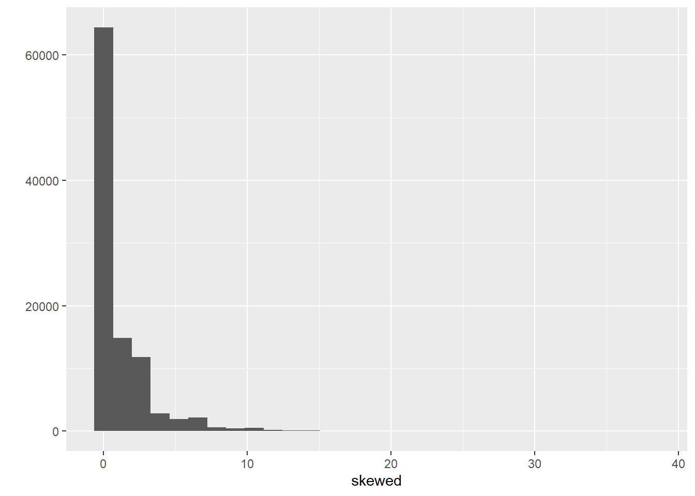
We are going to pretend this variable measures numbers of crime perpetrated by an individual in the previous year. Let’s see how many offenders we have in this fake population.
## [1] 35623We are now going to put this variable in a dataframe and we are also going to create a new categorical variable identifying whether someone offended over the past year (e.g., anybody with a count of crime higher than 0):
#Let's start by creating a new dataframe ("fakepopulation") with the skewed variable rebaptised as crimecount.
fake_population <- data.frame(crime = skewed)
#Then let's define all values above 0 as "Yes" in a variable identifying offenders and everybody else as "No". We use the ifelse() funciton for this.
fake_population$offender <- ifelse(fake_population$crime > 0, c("Yes"), c("No"))
#Let's check the results
table(fake_population$offender)##
## No Yes
## 64377 35623We are now going to generate a normally distributed variable. We are going to pretend that this variable measures IQ. We are going to assume that this variable has a mean of 100 in the non-criminal population (pretending there is such a thing) with a standard deviation of 15 and a mean of 92 with a standard deviation of 20 in the criminal population. I am pretty much making up these figures.
#The first expression is asking R to generate random values from a normal distribution with mean 100 and standard deviation for every of the 64394 "non-offenders" in our fake population data frame
fake_population$IQ[fake_population$offender == "No"] <- rnorm(64377, mean = 100, sd = 15)
#And now we are going to artificially create somehow dumber offenders.
fake_population$IQ[fake_population$offender == "Yes"] <- rnorm(35623, mean = 92, sd = 20)We can now have a look at the data. Let’s plot the density of IQ for each of the two groups and have a look at the summary statistics.
## [1] 97.19921#We will load the plyr package to get the means for IQ for each of the two offending groups
library(plyr)
#We will store this mean in a data frame (IQ_means) after getting them with the ddply function
IQ_means <- ddply(fake_population, "offender", summarise, IQ = mean(IQ))
#You can see the mean value of IQ for each of the two groups, unsurprisingly they are as we defined them
IQ_means## offender IQ
## 1 No 99.96347
## 2 Yes 92.20370#We are going to create a plot with the density estimation for each of the plots (first two lines of code) and then I will add a vertical line at the point of the means (that we saved) for each of the groups
ggplot(fake_population, aes(x = IQ, colour = offender)) +
geom_density() +
geom_vline(aes(xintercept = IQ, colour = offender), data = IQ_means,
linetype = "dashed", size = 1)
So, now we have our fake population data. In this case, because we generated the data ourselves, we know what the population data looks like and we know what the summary statistics for the various attributes (IQ, crime) of the population are. But in real life we don’t normally have access to full population data. It is not practical or economic. It is for this reason we rely on samples.
##Sampling data and sampling variability
It is fairly straightforward to sample data with R. The following code shows you how to obtain a random sample of size 10 from our population data above:
#We will use the sample function within the mosaic package.
library(mosaic)
sample(fake_population$IQ, 10)## [1] 105.33498 89.91923 110.34449 74.27133 78.27559 88.10284 51.85960
## [8] 73.79595 97.45203 58.10007You may be getting results that are different from mine, depending on the seed you used and how many times before you tried to obtain a random sample. You can compute the mean for a sample generated this way:
## [1] 86.37317And every time you do this, you will be getting a slightly different mean. Try to rerun the code several times. This is one of the problems with sample data. Not two samples are going to be exactly the same and as a result, every time you compute the mean you will be getting a slightly different value. Run the function three or four times and notice the different means you get.
We can also use code to automitise the process. The following code will ask R to draw 15 samples of size 10 and obtain the means for each of them.
## with
## 1 106.22017
## 2 105.18270
## 3 100.87614
## 4 100.62368
## 5 93.09230
## 6 102.47644
## 7 102.10881
## 8 91.47627
## 9 86.91715
## 10 100.52563
## 11 96.65420
## 12 94.76000
## 13 95.61116
## 14 100.35543
## 15 105.00081We can store the results from an exercise such as this as a variable and plot it:
#The following code will create a dataframe with the results
samp_IQ <- do(15) * with(sample(fake_population, 10), mean(IQ))
#You can see the name of the variable designating the means in the create data frame
names(samp_IQ)## [1] "with"#We are going to create a data frame with the population mean
IQ_mean <- data.frame(mean(fake_population$IQ))
#Have a look inside the object to see what the variable containing the mean is called (and we can then use this name in our plot function)
names(IQ_mean)## [1] "mean.fake_population.IQ."#And we can plot it then
ggplot(samp_IQ, aes(x = with)) +
geom_histogram() +
geom_vline(aes(xintercept = mean.fake_population.IQ.), data = IQ_mean,
linetype = "dashed", size = 1, colour = "red") + #This code will add a red line with the overall mean
labs(x = "Value of the sample means", y = "Number of samples") +
annotate("text", x = 99.8, y = 3, label = "Population mean", colour = "red") + #Annotate is used to insert elements in the graphic, in this case text indicating what the red line means, the x and y indicate the position where the annotation will appear in regards to the x and the y axis (this position may not be optimal depending on the means you get when you run this code)
theme_bw()## `stat_bin()` using `bins = 30`. Pick better value with `binwidth`.
Your exact results may differ from those shown here, but you can surely see the point. We have a problem with using sample means as a guess for population means. Your guesses will vary. How much of a problem is this? This excellent piece and demonstration by New York Times reporters illustrate the problem well. We are going to learn that something called the central limit theorem is of great assistance here.
##Sampling distributions and sampling experiments
We are going to introduce an important new concept here: sampling distribution. A sampling distribution is the probability distribution of a given statistic based on a random sample. It may be considered as the distribution of the statistic for all possible samples from the same population of a given size.
We can have a sense for what the sampling distribution of the means of IQ for samples of size 10 in our example by taking a large number of samples from the population. This is called a sampling experiment. Let’s do that:
#We will take 50000 samples and compute the means, it may take a bit
sampd_IQ_10 <- do(50000) * with(sample(fake_population, 10), mean(IQ))
#And compute the mean of this sampling distribution of the means and compare it to the population mean
mean(sampd_IQ_10$with) #mean of the sample means## [1] 97.18912## [1] 97.19921What we have observed is part of something called the central limit theorem, a concept from probability theory. One of the first things that the central limit theorem tells us is that the mean of the sampling distribution of the means (also called the expected value) should equal the mean of the population. It won’t be quite the same in this case (to all the decimals) because we only took 50000 samples, but in the very long run (if you take many more samples) they would be the same.
Let’s now visually explore the distribution of the sample means.
#Now we plot the means
qplot(sampd_IQ_10$with, xlab = "Distribution of means from samples of size 10")## `stat_bin()` using `bins = 30`. Pick better value with `binwidth`.
Amazing, isn’t it? When you take many random samples from a normally distributed variables; compute the means for each of these samples; and plot the means of each of these samples, you end up with something that is also normally distributed. The sampling distribution of the means of normally distributed variables in the population is normally distributed. I want you to think for a few seconds as to what this means and then keep reading.
Did you think about it? What this type of distribution for the sample means is telling us is that most of the samples will give us guesses that are clustered around their own mean, as long as the variable is normally distributed in the population (which is something, however, that we may not know). Most of the sample means will cluster around the value of 97.11 (in the long run), which is the population mean in this case. There will be some samples that will give us much larger and much smaller means (look at the right and left tail of the distribution), but most of the samples won’t gives us such extreme values.
Another way of saying this is that the means obtained from random samples behave in a predictable way. When we take just one sample and compute the mean we won’t we able to tell whether the mean for that sample is close to the centre of its sampling distribution. But we will know the probability of getting an extreme value for the mean is lower than the probability of getting a value closer to the mean. That is, if we can assume that the variable in question is normally distributed in the population.
But it get’s better. Let’s repeat the exercise with a sample size of 30, 100 and 1000.
sampd_IQ_30 <- do(50000) * with(sample(fake_population, 30), mean(IQ))
sampd_IQ_100 <- do(50000) * with(sample(fake_population, 100), mean(IQ))
sampd_IQ_1000 <- do(50000) * with(sample(fake_population, 1000), mean(IQ))
#Plot the results, notice how we have changed the aesthetics. We are definig them within each geom because we are using different data stored in different dataframes.
ggplot() +
geom_density(data = sampd_IQ_1000, aes(x = with, fill = "1000"), position = "identity", alpha = 0.4) +
geom_density(data = sampd_IQ_100, aes(x = with, fill = "100"), position = "identity", alpha = 0.4) +
geom_density(data = sampd_IQ_30, aes(x = with, fill = "30"), position = "identity", alpha = 0.4) +
labs(fill = "Sample size") + #This will change the title of the legend
scale_fill_discrete(limits = c("1000", "100", "30")) + #This will ensure the order of the items in the legend is correct
xlab("Distribution of mean value of IQ")
Pay attention to the aesthetics here. Because essentially we are looking at three different datasets they are located not in the general ggplot() statement but specified within each of the geoms we are plotting.
But back to the substantive point, can you notice the differences between these sampling distributions? As the sample size increases, more and more of the samples tend to cluster closely around the mean of the sampling distribution. In other words with larger samples the means you get will tend to differ less from the population mean than with smaller samples. You will be more unlikely to get means that are dramatically different from the population mean.
Let’s look closer to the summary statistics using favstats() from the loaded mosaic package:
## min Q1 median Q3 max mean sd n
## 84.36466 95.07485 97.22715 99.35524 109.4407 97.20893 3.168994 50000
## missing
## 0## min Q1 median Q3 max mean sd n
## 89.33202 96.02436 97.21006 98.38033 104.6069 97.1994 1.741871 50000
## missing
## 0## min Q1 median Q3 max mean sd n
## 94.86825 96.82042 97.18802 97.56334 99.31574 97.19098 0.5490715 50000
## missing
## 0As you can see the mean of the sampling distributions is pretty much the same regardless of sample size, though since we only did 50000 samples there’s still some variability. But notice how the range (the difference between the smaller and larger value) is much larger when we use smaller samples. When I run this code I get one sample of size 30 with a sample mean as low as 83 and another as high as 110. But when I use a sample size of a 1000 the smallest sample mean I get is 95 and the largest sample size I get is 99. When the sample size is smaller the range of possible means is wider and you are more likely to get sample means that are wide off from the expected value.
This variability is also captured by the standard deviation of the sampling distributions, which is smaller the larger the sample size is. The standard deviation of a sampling distribution receives a special name you need to remember: the standard error. In our example, with samples of size 30 the standard error is 3.17, whereas with samples of size 1000 the standard error is 0.55.
We can see that the precision of our guess or estimate improves as we increase the sample size. Using the sample mean as a estimate (we call it a point estimate because it is a single value, a single guess) of the population mean is not a bad thing to do if your sample size is large enough and the variable can be assumed to be normally distributed in the population. As we have illustrated here, more often than not this guess won’t be too far off in those circumstances.
But what about variables that are not normally distributed. What about “crime”? We saw this variable was quite skewed. Let’s take numerous samples, compute the mean of “crime”, and plot its distribution.
sampd_CR_30 <- do(50000) * with(sample(fake_population, 30), mean(crime))
sampd_CR_100 <- do(50000) * with(sample(fake_population, 100), mean(crime))
sampd_CR_1000 <- do(50000) * with(sample(fake_population, 1000), mean(crime))
#Plot the results, notice how we have changed the aesthetics. We are definig them within each geom because we are using different data stored in different dataframesggplot() +
geom_density(data=sampd_CR_1000, aes(x = result, fill = "1000"), position = "identity", alpha = 0.4) +
geom_density(data=sampd_CR_100, aes(x = result, fill = "100"), position = "identity", alpha = 0.4) +
geom_density(data=sampd_CR_30, aes(x = result, fill = "30"), position = "identity", alpha = 0.4) +
labs(fill = "Sample size") + #This will change the title of the legend
scale_fill_discrete(limits = c("1000", "100", "30")) #This will ensure the order of the items in the legend is correct
## min Q1 median Q3 max mean sd n
## 0.06666667 0.7333333 0.9666667 1.233333 3.066667 1.001147 0.3818984 50000
## missing
## 0## min Q1 median Q3 max mean sd n missing
## 0.32 0.85 0.99 1.13 2.06 1.002126 0.2085133 50000 0## min Q1 median Q3 max mean sd n missing
## 0.742 0.956 1 1.045 1.29 1.000996 0.06551087 50000 0## [1] 1.00143You can see something similar happens. Even though “crime” itself is not normally distributed. The sampling distribution of the means of “crime” becomes more normally distributed the larger the sample size gets. Although we are not going to repeat the exercise again, the same would happen even for the variable “offender”. With a binary categorical variable such as offender (remember it could take two values: yes or no) the “mean” represents the proportion with one of the outcomes. But essentially the same process applies.
What we have seen in this section is an illustration of various amazing facts associated with the central limit theorem. Most sample means are close to the population mean, very few are far away from the population mean, and on average, we get the right answer (i.e., the mean of the sample means is equal to the population mean). This is why statisticians say that the sample mean is an unbiased estimate of the population mean.
How is this helpful? Well, it tells us we need large samples if we want to use samples to guess population parameters without being too far off. It also shows that although sampling introduces error (sampling error: the difference between the sample mean and the population mean), this error behaves in predictable ways (in most of the samples the error will be small, but it will be larger in some: following a normal distribution). In the next section, we will see how we can use this to produce something called confidence intervals.
If you want to further consolidate some of these concepts you may find these videos on sampling distributions from Khan Academy useful.
In terms of optimal sample sizes, in the first lecture we discussed a possibility of diminishing returns on increasing sample sizes. Basically, the greater the sample size, the more likely you are to find a smaller effect statistically significant. We’ll talk about this later, when we discuss effect sizes and power calculations, but if you’re interested to read ahead, the main reference paper here (which you can tell by it being cited over 21 THOUSAND times) is Cohen’s Power Primer
##The normal distribution and confidence intervals with known standard errors
While the sample mean may be the best single number to use as an estimate of the population mean, particularly with large samples, each sample mean will continue to come with some sample error (with some distance from the population mean). How can we take into account the uncertainty in estimating the population mean that derives from this fact?
The key to solving the problem relies in the fact that the sampling distribution of the means will approach normality with large samples. If we can assume that the sampling distribution of the means is normally distributed then we can take advantage of the properties of the standard normal distribution.
One of the peculiarities of the standard normal distribution is that we know the proportion of cases that fall within standard deviation units away from the mean. In the graphic below you can see the percentage of cases that fall within one and two standard deviations from the mean in the standard normal distribution:

Normal Distribution
We know that the sampling distribution of the means can be assumed with large samples to have a shape like this. We saw that running our sampling experiment. You can think of the sampling distribution of the means as the distribution of sampling error. Most sample means fall fairly close to the expected value (i.e., the population mean) and so have small sampling error; many fall a moderate distance away; and just a few fall in the tails of the sampling distribution, which signals large estimation errors. So although working with sample data we don’t have a precise distance, we have a model that tells us how that distance behaves (i.e., it follows a normal distribution). Let this sink in for a few seconds.
This is very useful because then we can use this knowledge to generate the margin of error.
The margin of error is simply the largest likely sampling error. In social science we typically choose likely to imply 95%, so that there is a 95% chance that the sampling error is less than the margin of error. By extension this means that there is only a 5% chance that the sampling error will be bigger: that we have been very unlucky and our sample mean falls in one of the tails of the sampling distribution.
Looking at the standard normal distribution we know that about 95% of the cases fall within 2 standard deviations on either side of the mean. We know then that 95% of the sample means (95.46% to be more precise) will fall within two standard errors of the expected value (e.g., the mean of the sampling distribution). So we can say that the margin of error, the largest likely estimation error, equals 2 standard errors. More accurately, the margin of error equals 1.96 standard errors (1.96 corresponds to 95% whereas the value 2 corresponds to 95.46%).
This may be clearer with an example. Let’s focus in our variable “IQ”. Look at the standard error (the standard deviation of the collection of sample means) for the sampling distribution of “IQ” when we took samples of 100 cases. We produced this earlier on.
The standard error was 1.7418706. If we multiply 1.7418706 times 1.96 we obtain 3.4140664. This means that 95% of the cases in this sampling distribution will have an error that won’t be bigger than that. They will only at most differ from the mean of the sampling distribution by (plus and minus) 3.4140664. However, 5% of the samples will have a margin of error bigger than that (in absolute terms).
The wonderful thing is that we can use the margin of error to provide information about the degree to which our sample estimate may vary from the population mean. We can use it to give a measure of the uncertainty in our estimation. How?
“We rely on this obvious relation: If M” (our sample mean) “is likely to be close to μ” (the population mean) “-as the last page or two has illustrated- then μ is likely to be close to M. As simple as that. The simulation shows us that, for most samples, M” (the sample mean) “falls pretty close to μ” (the population mean) “, in fact within margin of error of μ. Now, we have only a single M and don’t know μ. But, unless we’ve been unlucky, our M has fallen within the margin of error of μ, and so, if we mark out an interval extending the margin of error on either side of our, most likely we’ve included μ. Indeed, and that interval is the confidence interval (CI)” (Cumming, 2012: 69).
If we have a large random sample, the 95% confidence interval will then be:
Upper limit= sample mean + 1.96 standard error
Lower limit= sample mean - 1.96 standard error
This will be clearer with an example. Let’s extract a sample of size 100 from the “fakepopulation” and look at the distribution of IQ:
## [1] 99.6274When I then take the mean of “IQ” in this sample I get the value of 99.6274001. It does not matter if you get a different value. Remember the standard error for the sampling distribution of “IQ” when we took samples of a 100 cases. It was 1.7418706. If we multiply 1.7418706 times 1.96 we obtain 3.4140664. The upper limit for the confidence interval then will be 99.6274001 (my sample mean) plus 3.4140664 (the margin of error) and the lower limit for the confidence interval will be 99.6274001 minus 3.4140664. This yields a confidence interval ranging from 96.2133337 to 103.0414665.
Now, if your sample mean would have been different, your confidence interval would have also been different. If you take 10,000 sample means and compute 10,000 confidence intervals they will be different among themselves. In the long run, that is, if you take a large enough numbers of samples and then compute the confidence interval for each of the samples, 95% of those confidence intervals will capture the population mean and 5% will miss it. Let’s explore this.
#We are first going to select 100 means (from the samples of size 100) out of the 50,000 samples that we created (if you don't understand this code, have a second look at the notes from week 1)
samp_IQ_100 <- sampd_IQ_100[1:100, ]
ci_IQ <- data.frame(meanofIQ = samp_IQ_100)
#We are now going to create the lower and the upper limit for the confidence interval
#First we obtain the margin of error. To do this I will compute the summary statistics for the sampling distribution and then multiply the standard error (e.g., the standard deviation of the sampling distribution) times 1.96.
se_sampd_IQ_100 <- favstats(~with, data=sampd_IQ_100)
me_IQ_100 <- se_sampd_IQ_100$sd * 1.96 #sd is the name of the variable returned from favstats() that includes the information about the standard deviation of the distribution we were exploring. Notice how one of the beauties of R is that it allows you to extract content from the objects it creates so that then you use them for whatever purpose you want. Here we compute the margin of error by multiplying this times 1.96.
#Then I will create two numerical vectors with the upper and the lower limit and then add them to the data frame we created
ci_IQ$LowerLimit <- samp_IQ_100 - me_IQ_100
ci_IQ$UpperLimit <- samp_IQ_100 + me_IQ_100You may want to use the View() function to see inside the ci_IQ data frame that we have created. Every row represents a sample and for each sample we have the mean and the limits of the confidence interval. We can now query how many of these confidence intervals include the mean of the variable crime in our fake population data.
ci_IQ$indx <- (ci_IQ$LowerLimit <= mean(fake_population$IQ)) &
(ci_IQ$UpperLimit >= mean(fake_population$IQ))
sum(ci_IQ$indx)## [1] 95Thus 95 intervals contain the true population mean. If you feel playful (and curious) you may want to modify the code we have use above to check how many of a 100 or of 200 samples for example would contain the true population mean. It should be roughly around 95% of them. Pretty cool, isn’t it?
We can also plot these confidence intervals:
#First I am going to create an ID variable to identify each sample (I will need this as an input in the plot I will create). I will use the row name (that list the samples from 1 to 1 100) as my ID variable.
ci_IQ$id <- rownames(ci_IQ)
#We are going to use a new geom we have not covered so far that allows you to create lines with a point in the middle. You need to tell R where the line begins and ends, as well as where to locate the point in the middle. The point in the middle is our mean and the lines range from the lower limit and upper limit. In this sense each line represents the confidence interval. We will use the ID variable so that R plots one line for each of the samples. Finally I am asking R to use the "indx" variable we create so that we can distinguish clearly the confidence intervals that cover the population mean.
ggplot(ci_IQ, aes(x = id, y = meanofIQ, ymin = LowerLimit, ymax = UpperLimit, group= indx, color = indx)) +
geom_hline(yintercept = mean(fake_population$IQ), colour = "red", size = 1) + #This will create a horizontal line representing the population mean, so that we can clearly see it
geom_pointrange(aes(ymin = LowerLimit, ymax = UpperLimit)) +
theme_bw() +
ggtitle("Confidence intervals for the mean (100 samples of size 100)") +
labs(colour="Covers μ?", x = "", y ="Mean of IQ") +
scale_x_discrete(breaks = "") + #this ensures that no tick marks and labels are used in the axis defining each sample (try to run the code witout this line to see what happens if you don't include it)
coord_flip() 
As you can see most of the confidence intervals cover the population mean, but some times this does not happen. If you know the population mean, then you can see whether that happens or not. But in real life we run samples because we don’t know the population parameters. So, unfortunately, when you do a sample you can never be sure whether your estimated confidence interval is one of the red or the green ones. The truth is we will never know whether our confidence interval captures the population parameter or not, we can only say that under certain assumptions if we had repeated the procedure many times it will include it 95% of the time. This is one of the reasons why in statistics when making inferences we cannot provide definitive answers7.
It is, however, better to report your confidence intervals than your point estimates. Why?
- First, because you are being explicit about the fact you are just guessing. Point estimates such as the mean create a false impression of precision.
- But beware the CI can also be misleading! 95% of the times you may get the true parameter, but that’s not the same than to say that 95% of the time your mean will lie between your upper and lower boundaries for your confidence interval. This is a common interpretative mistake made by researchers and, even, teachers. A confidence interval can only be used to evaluate the procedure not a specific estimated interval.
So to reiterate:
- FALSE INTERPRETATION: “There is a 95% chance that the mean IQ is between 89.7 and 104.7 minutes”. This is a very common misconception! It seems very close to true, but it isn’t because the population mean value is fixed. So, it is either in the interval or not. This is subtle but important.
- What is correct? 95% of the time, when we calculate a confidence interval in this way, the true mean will be between the two values. 5% of the time, it will not. Because the true mean (population mean) is an unknown value, we don’t know if we are in the 5% or the 95%. BUT 95% is pretty good. So we say something like “We are 95% confident that the mean IQ for all people in our fake population is between 89.7 and 104.7.” This is a common shorthand for the idea that the calculations “work” 95% of the time.
- Remember that we can’t have a 100% confidence interval. By definition, the population mean is not known . If we could calculate it exactly we would! But that would mean that we need a census of our population with is often not possible or feasible.
- Finally, because if the range of values that you give me for your CI is smaller or bigger I will know that your estimate is more or less precise respectively. That is, with the CI you are giving me a measure of your uncertainty. The bigger the CI the more uncertain we are about the true population parameter.
##Asymptotic confidence intervals for means and proportions using R
You may have spotted a big problem in what came before. How did we compute the confidence interval? We multiplied 1.96 times the standard error. Remember: the standard error is the standard deviation of the sampling distribution of the mean. And… well, at least you are willing to repeat a survey thousands of times with the same population you won’t know what the standard error is! The population mean is unknown and we want to estimate it. But the standard error that we need for constructing our confidence interval is also unknown!
If you are working with proportions there is an obvious way to estimate the standard error only with sample data (for details see the required reading). But with means this is not possible. There is, however, a solution. You can use the standard deviation of your sample as an estimate for the standard error . You would also need to make some adjustments to the formula for the confidence interval (you divide the sample standard deviation by the square root of the sample mean). You don’t need to worry to much about the mathematics of it. In practice we will rely on R to apply these formulas and compute the confidence intervals.
It is important, though, that you know that this approach works reasonably well when applying the Normal model to large samples. But with small samples using the sample standard deviation as an estimate of the standard error (so that we can compute the confidence interval) is problematic. The sample standard deviation also varies from sample to sample and this extra variation in smaller samples will mess up the computation of the margin of errors. William Gosset’s suggested we needed to use a different probability distribution for this cases, the t Student distribution. You can learn more about this distribution and the work of Gosset in the suggested reading. The t Student distribution and the normal distribution are almost indistinguishable for large samples. In essence that means you will still multiply by 1.96. But with smaller sample sizes that value will be different if you use a normal distribution or a t student distribution. Refer to the recommended textbooks for further clarification.
It is fairly straightforward to get the confidence intervals using R. In order to use the t Student distribution we need to assume the data were randomly sampled and that the population distribution is unimodal and symmetric. We know this is the case in the population and next week we will discuss how you can check this assumption when you don’t have the population data.
Earlier we created a sample of 100 cases from our fake population. Let’s build the confidence intervals using the sample standard deviation as an estimate for the standard error and assuming we can use the t Student distribution:
##
## One Sample t-test
##
## data: sample_1$IQ
## t = 55.355, df = 99, p-value < 2.2e-16
## alternative hypothesis: true mean is not equal to 0
## 95 percent confidence interval:
## 96.05623 103.19857
## sample estimates:
## mean of x
## 99.6274Ignore for now the few first lines. Just focus on the 95% interval. You will see it is not wildly different from the one we derived using the actual standard error.
If you want a different confidence interval, say 99%, you can pass an additional argument to change the default in the t.test() function:
##
## One Sample t-test
##
## data: sample_1$IQ
## t = 55.355, df = 99, p-value < 2.2e-16
## alternative hypothesis: true mean is not equal to 0
## 99 percent confidence interval:
## 94.90043 104.35437
## sample estimates:
## mean of x
## 99.6274What if you have a factor and want to estimate a confidence interval for a proportion. In our data we have a dichotomous variable that identifies cases as offenders.
##
## No Yes
## 62 38We can use the prop.test() function in these cases:
##
## 1-sample proportions test with continuity correction
##
## data: sample_1$offender == "Yes" [with success = TRUE]
## X-squared = 5.29, df = 1, p-value = 0.02145
## alternative hypothesis: true p is not equal to 0.5
## 95 percent confidence interval:
## 0.2863947 0.4829411
## sample estimates:
## p
## 0.38You can also specify a different confidence level:
##
## 1-sample proportions test with continuity correction
##
## data: sample_1$offender == "Yes" [with success = TRUE]
## X-squared = 5.29, df = 1, p-value = 0.02145
## alternative hypothesis: true p is not equal to 0.5
## 99 percent confidence interval:
## 0.2617674 0.5137428
## sample estimates:
## p
## 0.38The prop.test() function uses a Normal approximation to compute the confidence interval. This approximation may not work well when the outcome of interest is rare or uncommon or with small smaples. A number of alternative formulas have been proposed for these cases. Check wikepedia for “binomial proportion confidence interval”. To get R to compute these alternative ways you need to install and load th binom package.
library(binom)
binom.confint(34, 100) #This function takes as the first argument the count for the outcome of interest and the sample size as the second argument## method x n mean lower upper
## 1 agresti-coull 34 100 0.3400000 0.2544306 0.4374073
## 2 asymptotic 34 100 0.3400000 0.2471548 0.4328452
## 3 bayes 34 100 0.3415842 0.2507476 0.4341676
## 4 cloglog 34 100 0.3400000 0.2491861 0.4327669
## 5 exact 34 100 0.3400000 0.2482235 0.4415333
## 6 logit 34 100 0.3400000 0.2540660 0.4379354
## 7 probit 34 100 0.3400000 0.2527521 0.4368062
## 8 profile 34 100 0.3400000 0.2520471 0.4360562
## 9 lrt 34 100 0.3400000 0.2520248 0.4360417
## 10 prop.test 34 100 0.3400000 0.2501177 0.4423445
## 11 wilson 34 100 0.3400000 0.2546152 0.4372227Here you can see 11 different confidence intervals that are computed using different formulas and approaches. You will see that in this case the differences between the Normal approximation and these methods are minimal, but there may be scenarios where this is not the case.
Remember that confidence intervals may be easy to construct (just one line of code!) but they are easy to misinterpret. The word confidence in everyday meaning is subjective. Perhaps it would be better to have terms such as “sampling precision interval” (Kaplan, 2012), but we don’t. Another common mistake when reading them is to think that you can say that “if you repeat the study and take the mean, the new result will be within the margin of error of the original study”, but this is not correct mathematically (remember the plot of the confidence intervals).
##A brief intro to resampling and bootstraping
We have seen how theoretically the sampling distribution reflects variation from random samples. We also discussed how in practice we only have one sample. In the previous sections we also saw how we can some times use theoretical probability distributions (such as the normal or the t distribution) provided we are willing to make some assumptions. And we could then use these distributions to build our confidence intervals.
Another way of building confidence intervals is called bootstrapping. This comes from the phrase: “He pulled himself up by his own trousers”, which is said of someone who improves himself without help. Essentially what we are doing is estimating the properties of the sampling distribution from our single sample. How? By means of taking repeated samples (with replacement) from our own sample. These samples are called resamples. Essentially the sample is “used as a stand-in for the population and new samples are drawn from the sample” (Kaplan, 2012). Notice I said we use sampling with replacement. Every time we select a case from the sample, the case is put back so that we can select it again.
## [1] 132.38048 116.21393 84.27481 113.57432 87.39582 69.44512 109.20445
## [8] 62.76150 101.82604 102.00167#We can then resample (drawing samples from the set of cases in our sample) with replacement
resample(sample_2)## [1] 132.38048 113.57432 132.38048 109.20445 116.21393 113.57432 62.76150
## [8] 69.44512 113.57432 62.76150You will notice that every element in our resample was present in the sample, but it may now appears several times (because of the replacement). Bootstrapping involve repeating this process many times and examining the variation among the resamples to construct a confidence interval based on the resampling distribution. Bootstraping won’t work well with very small samples. The sample size should be one or two dozen or larger (Kaplan, 2012). So let’s move to a slightly larger sample and then we will create the resampling distribution.
sample_3 <- sample(fake_population$IQ, 30)
resampling_IQ_30_1 <- do(1000) * mean(resample(sample_3))Then we can use the Mosaic qdata() function to extract the 95% coverage intervals:
## quantile p
## 2.5% 83.87521 0.025
## 97.5% 94.65529 0.975How does this compare to the confidence interval using the t Student distribution?
##
## One Sample t-test
##
## data: sample_3
## t = 30.973, df = 29, p-value < 2.2e-16
## alternative hypothesis: true mean is not equal to 0
## 95 percent confidence interval:
## 83.53026 95.34170
## sample estimates:
## mean of x
## 89.43598What if the sample size was larger?
sample_4 <- sample(fake_population$IQ, 100)
resampling_IQ_100_1 <- do(1000) * mean(resample(sample_4))
qdata(~mean, p = c(.025, .975), resampling_IQ_100_1)## quantile p
## 2.5% 93.66474 0.025
## 97.5% 99.87918 0.975##
## One Sample t-test
##
## data: sample_4
## t = 59.136, df = 99, p-value < 2.2e-16
## alternative hypothesis: true mean is not equal to 0
## 95 percent confidence interval:
## 93.52078 100.01452
## sample estimates:
## mean of x
## 96.76765As you can see as the sample size grows the differences between the bootstrap confidence interval and the one that relies on the t Student model become more similar.
Before we conclude this section, it is important to remember that the resampling distributions won’t construct the sampling distribution. What they do is to show you how the sampling distribution may look like if the population looked like your sample. The center of the resampling distribution is generally not aligned with the center of the sampling distribution, although in practice the width of the re-sampling distribution in practice tends to match the width of the sampling distribution. The following figure shows you how three resampling distributions compare to the sampling distribution of IQ for samples of size 30.
## Warning: Ignoring unknown aesthetics: position
## Warning: Ignoring unknown aesthetics: position
## Warning: Ignoring unknown aesthetics: position
## Warning: Ignoring unknown aesthetics: position
##What about comparisons? Sampling distribution for the difference of two means
So far we have seen how we can use confidence intervals to quantify the unavoidable uncertainty that exists when you use sample data to make inferences about population parameters. In doing this, the focus of our discussion has been univariate estimation; that is, we were focusing on the logic involved in estimating single quantities (descriptive values for single variables) such as the mean or the proportion for a given variable (i.e., the proportion of households that suffer a burglary victimisation). But statistics is all about comparisons. And making comparisons involves working with several variables or groups at the same time. So most often we need to estimate information about various variables or groups at the same time. When making comparisons we also have to take into account sampling variability.
Imagine that we want to know whether there is a difference in the level of fear experienced by males and females. Suppose we want to compare the average level of fear of violent crime across the two genders. We could use the data from the British Crime Survey we have been using so far (please load the data if you don’t have it in your global environment from previous weeks). But we also need to take into account sampling variability. The estimated mean for fear of crime for males will be subject to some sampling error. The same for females. And the same for the difference between the two means.
##R in Windows have some problems with https addresses, that's why we need to do this first:
urlfile<-'https://raw.githubusercontent.com/jjmedinaariza/LAWS70821/master/BCS0708.csv'
#We create a data frame object reading the data from the remote .csv file
BCS0708<-read.csv(url(urlfile))##
## Descriptive statistics by group
## group: female
## vars n mean sd median trimmed mad min max range skew kurtosis
## X1 1 4475 0.33 1.04 0.23 0.25 0.96 -2.35 3.56 5.91 0.61 0.02
## se
## X1 0.02
## --------------------------------------------------------
## group: male
## vars n mean sd median trimmed mad min max range skew kurtosis
## X1 1 3959 -0.27 0.86 -0.44 -0.36 0.69 -2.35 3.81 6.16 1.1 1.91
## se
## X1 0.01
The mean value of fear of violent crime is -0.27 for the males and 0.33 for the females. There is a difference in the mean value of fear of crime of -0.6. Comparing the distributions in the boxplot seems to suggest that the distribution of scores on fear of violent crime tend to be higher than for the males. The question is: would we observe similar differences if we were looking at population data (rather than sample data)? The answer to the previous questions, as you can imagine by now, is that here we also have the problem of sampling variability. If we were to take a different sample from the same population (1) we would obtain a slightly different mean score of fear for the men; (2) a slightly different mean score of fear for the women; and (3) correspondingly a slightly different difference between those two quantities. So rather than a difference of -0.6 points we may find a slightly different one.
How do we deal with this? Again, we can make assumptions about the sampling distributions of the estimated parameters and try to quantify our uncertainty around the observed difference. Earlier we only had to worry about one parameter (the mean or the proportion in the population). We said that thanks to the central limit theorem we can assume that with large samples the sampling distribution of this single parameter follows a normal distribution. Now instead we have two different population parameters (i.e., the mean score of fear for men, µ1, and the mean age of fear for women, µ2) and their difference (µ1 – µ2) . Look at the Figure below:

Now we are trying to work out two different population parameters (the population meam of fear for males and females), which are unknown, based on our observed sample estimates. If we were to take repeated samples from the same populations these sample-based estimates of the means would vary and so would the difference between them. But we know that if we were to take large repeated samples of men the sampling distribution of the means for fear of crime in the long run would follow a normal distribution. Equally, if we were to take repeated samples of women the same would happen. However, now we are not only interested in these two quantities (the mean for each group) we are also interested in the difference between them, the difference in the mean score of fear for females and males.
In essence, however, the same principles apply. If we were to plot the distribution of the difference between these two quantities, the means for the men and the women for every single sample of repeated samples, we would also have a sampling distribution: the sampling distribution of the differences of the means as shown in the figure above. Here, as earlier, we could invoke the central limit theorem that, in this case, states that with large random samples the sampling distribution of the difference of the means will be normal. We can also apply a variation of this (Gosset’s theorem) that states that with small samples of normally distributed variables we can use the t-student distribution. We could then construct a 95% confidence interval for the difference of the means that would give us the range of plausible values from the same population.
Remember how we construct confidence intervals for the mean by adding the mean to the standard error of the sampling distribution of the mean. Also remember how we used the standard deviation of the sample mean as a proxy for the standard error. The computation of the confidence interval for the difference of two means works in a similar way but we need to account for the fact that now we have two different variances (i.e., in our example the variance for men and for women). Otherwise, the logic for constructing the confidence interval remains the same. For details on computation and formula see appropriate textbooks.
If you want to compare two samples means you would use the following code to obtain the 95% confidence interval for the difference of the two means:
##
## Welch Two Sample t-test
##
## data: tcviolent by sex
## t = 29.114, df = 8398.3, p-value < 2.2e-16
## alternative hypothesis: true difference in means is not equal to 0
## 95 percent confidence interval:
## 0.5614656 0.6425300
## sample estimates:
## mean in group female mean in group male
## 0.3281656 -0.2738322For now, I want you to ignore the first few lines of output and just focus in the bottom part. You see how the mean value of “tcviolent” (fear of violent crime) is printed for each of the two groups. If you substract this two values you obtain around -0.6. Right above you see the confidence interval for the difference between these two means. This confidence ranges from -.64 to -.56. We are simply stating that the values in the interval are plausible as true values for the population parameter, and that values outside the interval are relatively implausible (although not impossible). Although our point estimate for the difference was -0.6, the confidence interval gives us more information as to what the true difference may be in the population. In the long run, that is, if you take a large enough numbers of samples and then compute the confidence interval for each of the samples, 95% of those confidence intervals will capture the difference in the population and 5% will miss it. As before, always remember, we may have been unlucky and got one of those 5% confidence intervals.
Notice that the confidence interval does not include the value zero. The observed difference that we have between females and males is not consistent with a difference of zero in the population. The fact that our estimated CI for the difference of the means does not include zero invites the suggestion that the difference between males and females is different from zero in the population. If, on the other hand, you were to encounter a confidence interval for the difference of the means including the value of zero then you would be less confident that the difference in the population would not be zero, particularly in those cases when the value of zero is near the middle of your confidence interval. This makes sense. If zero is a very plausible value for the difference of the means in the population then we cannot on the basis of our sample data pretend otherwise.
##Comparing means visually by using error bars representing confidence intervals: inference by eye
In the previous section we have discussed how you can construct the confidence interval for the difference between two means. Another way of looking at whether the means of two groups are different in a population is by visually comparing the confidence interval for the means of each of the two groups. Think for a second about the semantic difference. If you don’t get it, look back at the figure we represented above.
We can visualise the confidence interval for the sample mean score of fear of crime for the men and the women using ggplot():
#As usual we define the aesthetics first
ggplot(BCS0708, aes(x = sex, y = tcviolent)) +
stat_summary(fun.data = "mean_cl_normal", geom = "pointrange") #this function ask to display summary statistics as pointrange (the point is the mean and the lines end at the upper and lower CI limits). The "mean_cl_normal" uses the CI assuming normality.## Warning: Removed 3242 rows containing non-finite values (stat_summary).## Warning: Computation failed in `stat_summary()`:
## Hmisc package required for this function
#So if you prefer the bootstrapped confidence interval rather than assuming normality, you could use:
ggplot(BCS0708, aes(x = sex, y = tcviolent)) +
stat_summary(fun.data = "mean_cl_boot", geom = "crossbar") #Here we are using a different geom just to show you the range of options, but you could also have used "pointrange". Or finally, you could also use "errorbars"## Warning: Removed 3242 rows containing non-finite values (stat_summary).
## Warning: Computation failed in `stat_summary()`:
## Hmisc package required for this function
ggplot(BCS0708, aes(x = sex, y = tcviolent)) +
stat_summary(fun.data = "mean_cl_boot", geom = "errorbar") +
stat_summary(fun.y = mean, geom = "point")## Warning: Removed 3242 rows containing non-finite values (stat_summary).
## Warning: Computation failed in `stat_summary()`:
## Hmisc package required for this function## Warning: Removed 3242 rows containing non-finite values (stat_summary).
The point in the error bar represents the mean value for fear of crime for each of the groups and the error bars represent the upper and lower bound for the confidence interval for the mean fear of crime score for each of those two groups. Notice how the confidence intervals do not overlap. These confidence intervals provide a range of plausible values for the population parameters, the mean score of fear for males and females in the population. The fact that the CI do not overlap is another way of showing that there may be a difference in the population parameters for these two groups. Lack of any overlap is strong suggestion of a significant difference in the population.
If they were overlapping this would be indicating that some of the plausible values for the mean fear of crime score for males in the population would also be plausible values for the mean fear of crime for females in the population. In this case, when there is some overlap, it is less intuitive to interpret the confidence intervals. You can have some overlap even if there is a real difference across the population means. However, the greater the overlap the smaller the chance that there is a difference between the two means in the population. In particular, if the overlap is greater than about 50% for the length of the bar either side of the mean then you will be, roughly speaking, “very confident” that there is no real difference in the population. This is a good guide about how to interpret error bars in this type of scenarios.
HOMEWORK
Use the code and ideas we have introduced in the last two sections to explore again the data from the ban the box paper we covered in previous weeks. Draw confidence intervals for the proportion of positive responses obtained by black and white employees before and after the introduction of the ban the box legislation. What inferences can you draw based in your results?
## R version 3.5.1 (2018-07-02)
## Platform: x86_64-apple-darwin15.6.0 (64-bit)
## Running under: macOS 10.14.2
##
## Matrix products: default
## BLAS: /Library/Frameworks/R.framework/Versions/3.5/Resources/lib/libRblas.0.dylib
## LAPACK: /Library/Frameworks/R.framework/Versions/3.5/Resources/lib/libRlapack.dylib
##
## attached base packages:
## [1] stats graphics grDevices utils datasets methods base
##
## other attached packages:
## [1] psych_1.8.10 binom_1.1-1 mosaic_1.5.0
## [4] Matrix_1.2-14 mosaicData_0.17.0 ggformula_0.9.1
## [7] ggstance_0.3.1 lattice_0.20-35 dplyr_0.7.8
## [10] plyr_1.8.4 ggplot2_3.1.0
##
## loaded via a namespace (and not attached):
## [1] tidyselect_0.2.5 xfun_0.4 purrr_0.2.5 splines_3.5.1
## [5] colorspace_1.3-2 htmltools_0.3.6 yaml_2.2.0 rlang_0.3.0.1
## [9] pillar_1.3.0 later_0.7.5 foreign_0.8-70 glue_1.3.0
## [13] withr_2.1.2 bindrcpp_0.2.2 bindr_0.1.1 mosaicCore_0.6.0
## [17] stringr_1.3.1 munsell_0.5.0 gtable_0.2.0 htmlwidgets_1.3
## [21] evaluate_0.12 labeling_0.3 knitr_1.20 httpuv_1.4.5
## [25] crosstalk_1.0.0 parallel_3.5.1 broom_0.5.0 Rcpp_1.0.0
## [29] readr_1.2.1 xtable_1.8-3 promises_1.0.1 scales_1.0.0
## [33] backports_1.1.2 leaflet_2.0.2 mime_0.6 gridExtra_2.3
## [37] mnormt_1.5-5 hms_0.4.2 digest_0.6.18 stringi_1.2.4
## [41] bookdown_0.7 ggrepel_0.8.0 shiny_1.2.0 grid_3.5.1
## [45] rprojroot_1.3-2 tools_3.5.1 magrittr_1.5 lazyeval_0.2.1
## [49] tibble_1.4.2 ggdendro_0.1-20 crayon_1.3.4 tidyr_0.8.2
## [53] pkgconfig_2.0.2 MASS_7.3-50 assertthat_0.2.0 rmarkdown_1.10
## [57] R6_2.3.0 nlme_3.1-137 compiler_3.5.1#Studying relationships between a categorical and a quantitative variable (Week 6)
##The logic of hypothesis testing
In the last unit we learned how to think about and build confidence intervals. We explained how we could use confidence intervals to deal with uncertainty when estimating population parameters. Confidence intervals as we will see are very commonly used in statistics. The other key inferential tool in data analysis is the hypothesis test. Today we will focus on this second tool.
Last week we saw how we could use confidence intervals as well to form a view about whether there are differences across groups in the population. And we also saw how we could do “inference by eye” by virtue of visually comparing the confidence interval for the estimated mean value of fear for men and the estimated mean value of fear for women. Now we are going to use a different approach to make inferences about the existence of these differences in the population: hypothesis testing.
Wikipedia defines a statistical hypothesis test as “a method of making decisions using data from a scientific study”. The logic of hypothesis testing is based in the work of a number of pioneers in the field of statistics, the British Ronald Fisher and Egon Pearson and the Polish Jerzy Neyman . This work is so important that some people argue that Sir Ronald Fisher is one of the most influential academics in the history of science; not a small feat!
Hypothesis testing, or null hypothesis testing (NHST) as it is often referred to, proceeds in a number of steps.
- We always start with a research question
Our research questions in criminology can vary: Are ethnic minorities more likely to be stopped and searched? Does punishing offenders reduces crime? Is crime going down? Is self-control associated with offending? Here we are asking are women more afraid of violent crime than men?
- To answer a research question we have to formulate at least one and sometimes several research hypotheses related to it
A research hypothesis is simply a proposed answer to our research question that we can test by carrying out some research. Research hypothesis can be directional and non-directional:
“When the research hypothesis does not indicate a specific type of outcome, stating only that there is a relationship or a difference, we say that it is a nondirectional hypothesis. However, in those cases where a researcher has a very clear idea of what to expect -based on prior research evidence and/or theory -the research hypothesis may be more precise. In this case, the researcher may specify the nature of the relationship that is expected. Such a research hypothesis is called a directional hypothesis. When a directional hypothesis is used, the researcher states at the outset that he or she is interested in a specific type of outcome -for example, that one group has more arrests than another. Suppose we are interested in comparing the arrest records of drug involved offenders with those of offenders who do not use drugs. Our research hypothesis might be simply that the arrest records of drug involved offenders and offenders who do not use drugs are different (a nondirectional hypothesis). But based on prior knowledge of criminal behaviour among drug-involved offenders, we might want to state a directional hypothesis -that drug-involved offenders have more serious arrest records than do non-drug involved offenders. One problem with choosing the latter option is that if we state our research hypothesis as a directional hypothesis, we are stating that we are not interested in outcomes that fall in the opposite direction. In criminal justice research, we can often be surprised by what we learn in a study. Accordingly, researchers generally are cautious in defining a directional research hypothesis” (Weisburd and Britt, 2010: 120)
In our example, the research hypothesis will be nondirectional and simply state that there are differences in the fear of violent crime among men and women.
- The following step is to formulate what is called a null hypothesis
In frequentist statistical inference we test hypothesis not in reference to the research hypothesis but in reference to the null hypothesis. The null hypothesis gains its name from the fact that it usually states that there is no relationship or no difference. “We make decisions about hypothesis in relation to the null hypothesis rather than the research hypothesis. This is because the null hypothesis states that the parameter in which we are interested is a particular value” (Weisburd and Britt. 2010: 122).
In the example that we are using the null hypothesis would be that there is no difference in mean level of fear for males and females. This is the same than saying that the difference on fear for these two groups is zero. So, using the null hypothesis gives us a specific value. Typically this value is zero, whereas the research hypothesis would be consistent with any of many values other than zero. We will see in a second why working with a precise value such as zero is helpful.
De Veaux et al (2012) explain the logic of hypothesis testing as being similar to the logic of jury trials. In jury trials within the Common Law tradition somebody is innocent until proven guilty:
“the null hypothesis is that the defendant is innocent… The evidence takes the form of facts that seem to contradict the presumption of innocence. For us” (researchers) “this means collecting data… The next step is to judge the evidence. Evaluating the evidence is the responsibility of the jury in a trial, but if falls on your shoulders in hypothesis testing. The jury considers the evidence in light of the presumption of innocence and judges whether the evidence against the defendant would be plausible if the defendant were in fact innocent. Like the jury, you ask, ‘Could these data plausibly have happened by chance if the null hypothesis were true?’ If they are unlikely to have occurred, then the evidence raises a reasonable doubt about the null hypothesis. Ultimately, you must make a decision. The standard of beyond a reasonable doubt is wonderfully ambiguous… But when you ask the same question of your null hypothesis, you have the advantage of being able to quantify exactly how surprising the evidence would be were the null hypothesis true” (De Veaux et al. 2012: 479)
So, in hypothesis testing we look at our observed sample data. In our case, we look at the difference in fear of violent crime for males and females and we ask ourselves the question: is the observed difference likely to have come from a population where the real difference is zero (as our null hypothesis specifies)? As you can see, testing against the null gives us the advantage of testing against a specific value. We can compare the value that we observe with zero, the precise value hypothesised by the null hypothesis. The downsise of it is that few things are exactly the same in nature. So to say that the level of fear of crime in men and women is probably not exactly the same (e.g., a difference of zero) is arguably not always going to give us the answer that we want.
- The fundamental step in hypothesis testing, therefore, is the question: are the observed data surprising, given the null hypothesis? And the key question is to determine exactly how likely the data we observed would be were the null hypothesis a true model of the world
So in essence we are after a probability, specifically a conditional probability (i.e, the probability of our data if the null hypothesis were true). We are trying to quantify the probability of seeing data like the one we have observed (a difference of 0.79 in our example) if we take as given that the null hypothesis is true (and the value “should be” zero). We call this probability the p value. You may have heard this term before. All it means, it bears repeating, is the probability of observing our data if the null hypothesis were true.
“When the p value is high, then we can conclude that we have not seeing anything unusual. Events that have a high probability of happening happen often. The data are thus consistent with the model from the null hypothesis, and we have no reason to reject the null hypothesis. But we realize many other similar hypotheses could also account for the data we’ve seen, so we haven’t proven that the null hypothesis is true. The most we can say is that it doesn’t appear to be false. Formally, we fail to reject the null hypothesis. That’s a pretty weak conclusion, but it’s all we’re entitled to. When the p value is low enough, it says that it’s very unlikely we’d observed data like these if our null hypothesis were true. We started with a model. Now the model tells us that the data are unlikely to have happened. The model and the data are at odds with each other, so we have to make a choice. Either the null hypothesis is correct and we’ve just seen something remarkable, or the null hypothesis is wrong…” (De Veaux et al. 2012: 480)
When is a p value high and when is low? Typically, we use criteria similar to those we use when constructing confidence intervals: we would consider a p value low enough if 95% of the time the observed data was considered to be inconsistent with the model proposed by our null hypothesis. So, we look for p values that are smaller or bigger than 0.05.
That is, we look for differences that happen less than 5% of the time before we tentatively reject the null hypothesis. However, there is nothing sacrosanct about 95% and you could have good reasons to depart from this criterion (read page 123 to 128 of Weisburd and Britt, 2010 for further details). In fact, only last year a number of researchers argued we should use a more stringent p value to address the crisis of reproducibility in science.
You will see that statistics books refer to the threshold we use to define a p value as high or low as our level of statistical significance (also often referred to as the alpha level). In our example here (and all the others we will use this semester) we will use an alpha level of 0.05. That is we will reject the null hypothesis only if our p level is below that threshold.
- After defining our research and null hypothesis and having taken a decision of how low our p value ought to be in order to reject the null hypothesis, we need to specify a model for testing this null hypothesis. All models make assumptions, so an important part of specifying a model is stating your assumptions and checking that they are not being violated.
Through the semester we will cover a number of statistical tests, all with their own assumptions. These tests are appropriate in different circumstances (defined by their assumptions). Basically what we will be doing in the remaining thematic units this semester is to explain what those circumstances are for each test so that you can choose the right one on each occasion. We will see later the assumptions made by the sort of hypothesis tests you use to compare means across groups.
- Once we’ve gone through all those steps comes the calculation of the test statistics and, based on the results, our decision
Different tests that we will encounter this semester have different formulas. Sometimes I will give you a basic description of what those formulas are doing, because it is good to know what is being computed for conceptual understanding. But the mechanics are handled by the computer. So all you really need to know for the purposes of passing the course is how to interpret the results of these tests. You won’t need to memorise those formulas nor calculate anything yourself.
The ultimate goal of these statistical tests for hypothesis testing is to obtain a p value: the probability that the observed statistic (or a more extreme value) occurs if the null model is correct. If the p value is small enough (smaller than our alpha level: such as 0.05) then we will “reject the null hypothesis”. If it is not, we will “fail to reject the null hypothesis”. The language is important.
Whatever you decide, the American Psychological Association Statistical Committee recommends that it is always a good idea to report the p value as an indication of the strength of the evidence. That is, not only report the finding to be significant or not, also report your actual p value.
##Comparing means across two groups (the t test)
Let’s elaborate with our example. Our research question is whether women are more afraid of crime. We are going to test a non-directional hypothesis and use an alpha level of .05. The test we use in this case is the t test, which relies in the t Student distribution introduced last week. This test makes a number of assumptions that we need to check first.
This t test makes a number of assumptions:
We are comparing means or proportions (that is our original variable is either a quantitative variable OR we have a binary variable with a large sample) across two groups. We are indeed doing so.
Population distribution: normal distribution is assumed in both populations (but this assumption can be relaxed if both samples are large). We will check this shortly. Because the tests make assumptions about the shape of the distribution we say that the t test is a parametric test. Tests that do not make this sort of assumptions are called non-parametric.
Independence assumptions: To use the method the two groups must be independent of each other.This assumption would be violated if, for example, one group would consist of husbands and the other group their wives. The values for couples might be related. But this is not the case with the BCS data. Similarly if we compare an individual before and after a treatment, his/her observations would be related. For these situations we would need a different test (the dependent t test, which we won’t cover).
Sampling method: the data were obtained through independent random sampling. The BCS uses a complex survey design which would require the use of special procedures for hypothesis testing. However, those special procedures are well beyond the scope of this course and would typically be covered in more advanced courses. Therefore, for convenience we will proceed as if this assumption is met.
You may also want to check for outliers by plotting the data, for in some cases this may distort your results, particularly with smaller samples. So we are ok with 1 and 2, and are going to proceed as if 4 is met. What about normality? With large samples you can relax this assumption. However, you may want to also check if your sample data are normally distributed.
##R in Windows have some problems with https addresses, that's why we need to do this first:
urlfile<-'https://raw.githubusercontent.com/jjmedinaariza/LAWS70821/master/BCS0708.csv'
#We create a data frame object reading the data from the remote .csv file
BCS0708<-read.csv(url(urlfile))library(ggplot2,quietly=TRUE, warn.conflicts=FALSE)
ggplot(BCS0708, aes(x = tcviolent, colour = sex)) + #you will need to load the data as explained in week 1
geom_density() ## Warning: Removed 3242 rows containing non-finite values (stat_density).
The plotted density provide a visual tool for assessing the unimodality and the symmetry of the distribution. Later we will discuss a more elaborate graphical tool for assessing the normal condition (e.g., the normal probability plot).
For now let’s assume this is good enough. Then we would be ready to compute the t test.
##
## Welch Two Sample t-test
##
## data: tcviolent by sex
## t = 29.114, df = 8398.3, p-value < 2.2e-16
## alternative hypothesis: true difference in means is not equal to 0
## 95 percent confidence interval:
## 0.5614656 0.6425300
## sample estimates:
## mean in group female mean in group male
## 0.3281656 -0.2738322If the code and the results look familiar is because we already saw them last week when producing the confidence interval for the sampling distribution of the difference of two means. Last week we focused on the 95% confidence interval, now we are going to look at the first few lines of printed output.
First we see is the so-called Welch two sample t-test. It is a version of the t test that does not assume that the variance of your response variable is the same for your two groups. It is the default version we will always use. You also see a value for “t” (-29.11), this is the test statistic obtained using the formula for the t test and something called df (abbreviation for degrees of freedom). Farther to the right you see a value for p, this gives the probability associated with observing the difference in our sample if the null hypothesis were true. This value is 2.2e-16. If you are not used to this notation essentially what it means is that you need to move the decimal point 16 times to the left. In other words, the p value here is very close to 0 and therefore we can reject the null hypothesis that the difference in the population is 0. The observed difference in this sample would have been rather implausible if the null hypothesis were true. Therefore, here we would argue that our evidence suggests that we can reject the null hypothesis. We can say that there is a statistically significant difference between fear of violent crime for men and women in England and Wales.
It is important you remember this: the p value is not the probability that the null hypothesis is true. Imagine that our p value was 0.04. As tempting as it may be to say that a p value of 0.04 means there is a 4% chance that the null hypothesis is true, that just isn’t right. The only thing that we are in a position to state is: given the null hypothesis, there is a 4% chance of observing the difference that we have actually observed (or one more unlikely).
Before we said that the difference between the mean score of fear of violent crime for males and females is statistically significant. It is of critical importance that you understand what this actually means. Unfortunately, in this context significance does not quite have the same meaning that we give it in normal language.
When in normal language we say that something is significant we mean to say that it is important. When in statistics we say that something is statistically significant we don’t mean to say that it is important. All it means is that, if we trust our data and methods, we are in a position to reject the null hypothesis with the threshold (alpha level) that we specified (0.05) a priori. It is something much more specific as you can see. Basically all we are saying is that we are willing to reject the null hypothesis that there is whatsoever no difference (or relationship) in the population.
However, rejecting the null hypothesis is, very often, not terribly “important” in a practical or theoretical sense. Think about our example. All we can say as a result of our t test here is that in the population on average the difference between fear of violent crime for males and females is likely to be different from zero. That’s all! The null hypothesis, in this sense, is almost invariably known to be untrue even before you do your study! Is that significant in the normal sense (i.e., important)? Is a difference of -0.6 in these scores important? The fact this variable uses an artificial metric makes it even more difficult to evaluate.
To make statistical significance even more “insignificant” in a practical sense, if you work with large samples almost everything will be statistically significant. It is easier to achieve statistically significant results if your sample size is large enough. Some statisticians therefore are very dismissive of p values as not very informative. They argue that p values may simply be a measure of sample size.
Precisely for these reasons, it is always important to combine the use of p values with some discussion of the effect size. That is, you not only want to discuss the probability of a difference in the population but want to say something about the magnitude of the observed difference.
In the example we are examining the effect size is the observed difference of -0.6. Is this large or small? Interpreting this in raw format, in the original scale, requires some subjective judgement. And I mean subjective in a positive way, it means you have to think about it. Unfortunately, the original scale here uses an artificial metric that is difficult to evaluate on its own.
We can always look at standardised measure of the effect size. You will find a number of standardised measures of effect size. They aim to give you a sense of how large these differences are by using a standardised metric. We are just going to use one of them, Cohen’s d, for this scenario. We can obtain this measure with the cohen.d() function from the effsize package, which you will have to install.
##
## Cohen's d
##
## d estimate: 0.6281126 (medium)
## 95 percent confidence interval:
## lower upper
## 0.5843047 0.6719205The output suggest that the Cohen’s d estimate is a medium effect size. Cohen proposed a set of rules of thumb to interpret the d statistic: an effect size (in absolute value) of 0.2 to 0.3 might be a “small” effect, around 0.5 a “medium” effect and 0.8 to infinity, a “large” effect. However, keep in mind these rules are not absolute. In some fields of research and in relation to some problems the rules of thumb may be slightly different. You need, in professional practice, to be alert to those nuances by being familiar to the rules that other researchers use in your particular area of work.
How do we write our results up? We could say the following (and in case you are wondering, we covered last week how to obtain the standard errors using the psych package):
“On average, males have a lower score of fear of violent crime (M=-.27, SE=.01) than the female group (M=.33, SE=.02). Using an alpha level of 0.05, this difference was significant (t=-29.11, p=.000) and represented a medium-sized effect (Cohen’s d=-0.63).”
This is what you would write in your “Findings” section. In your “Conclusions” you would need to discuss what the theoretical or practical implications of this finding are; connecting it to existing theoretical debates. If your test had been insignificant (a p value greater than 0.05) then you would have to say so: “the difference was insignificant, thus, we failed to reject the null hypothesis”.
One important thing to remember is that when doing hypothesis testing there is always the possibility of error. Our statements are probabilistic. We could be rejecting the null hypothesis when we shouldn’t (false positive or Type I error), if we are using an alpha level of .05 this may happen 5% of the time, or we may fail to reject the null hypothesis when we should (false negative or Type II error).

Errors
##Comparing means across several groups (ANOVA)
###The problem with multiple comparisons
We have used the t test to assess differences in a metric variable across two groups defined by a categorical variable. As we have explained during the class, if you are interested in comparing across more than two groups then you cannot run multiple t tests. Why? Because we would run into the problem of multiple comparisons illustrated below:

xkcd
By running multiple comparisons you increase the change that you find significant differences by random chance alone. Imagine you throw a six face dice with numbers from 1 to 6. What is the probability of getting a 1? Right, 1/6. Now. Imagine that we throw the dice 6 times. What is the probability of getting a 1 at least once. Well, it would be the probability of getting a one each of the times multiplied by the number of times.
You can think of a statistical test as equivalent to this. The more times you run the test the higher the probability that something will come out significant. As the number of comparisons (tests) increase, the chances that this will happen increase. So, instead of running multiple t tests, we will run a single ANOVA test that allow us to explore whether there are significant differences across the groups being compared.
###Visual exploration of differences in the distributions across the groups
We will look at the distribution of scores of fear of violent crime (tcviolent) vary across the ethnic groups indexed by the variable ethgrp2. Let’ visualise these differences:
ggplot(BCS0708, aes(ethgrp2, tcviolent, fill=ethgrp2)) +
geom_boxplot(outlier.size=1) +
guides(fill=FALSE) ## Warning: Removed 3242 rows containing non-finite values (stat_boxplot).
What you see here is that the boxplot also displays the values of fear for the few individuals in the dataset for which we don’t know the ethnicity (“NA” in the X axis). In many occasions this is not what you want. At least you are trying to understand your missing data problem (an advanced topic which we don’t cover this semester), you only want a plot that uses information for the individuals with valid information (that is the ones for which we have data on fear and ethnicity). If you have quite a few NA cases and they seem systematically different from the other groups, you may have some reasons to be concerned.
You can use the following code to modify the display (and also to ensure the boxes are ordered around the x axis not by alphabetical order but by order of the level of fear). The na.omit() function ask R to omit from the data all cases with missing information on the specified columns. The reorder() function ensure that the x axis is ordered according to the level of fear.
ggplot(na.omit(BCS0708[,c("ethgrp2", "tcviolent")]), aes(x=reorder (ethgrp2, tcviolent), y=tcviolent, fill=ethgrp2)) +
geom_boxplot() +
coord_flip() + #We are flipping the coordinates to avoid the overprinting of the factor levels
guides(fill=FALSE)
You can see here slightly different distributions of fear for the ethnic groups. Notice for example how 75% of the Asian group has scores on fear of crime that are higher than those of 50% of individuals in the White group. Let’s look at the statistics:
##
## Descriptive statistics by group
## group: asian or asian british
## vars n mean sd median trimmed mad min max range skew kurtosis
## X1 1 283 0.88 1.17 0.68 0.86 1.32 -2.07 3.32 5.39 0.19 -0.89
## se
## X1 0.07
## --------------------------------------------------------
## group: black or black british
## vars n mean sd median trimmed mad min max range skew kurtosis
## X1 1 120 0.5 1.14 0.3 0.48 1.2 -1.85 2.59 4.44 0.17 -0.92
## se
## X1 0.1
## --------------------------------------------------------
## group: chinese or other
## vars n mean sd median trimmed mad min max range skew kurtosis
## X1 1 93 0.34 1.14 0.23 0.3 1.33 -1.64 2.81 4.45 0.31 -0.88
## se
## X1 0.12
## --------------------------------------------------------
## group: mixed
## vars n mean sd median trimmed mad min max range skew kurtosis
## X1 1 35 0.52 1.3 0.39 0.5 1.16 -2.34 2.97 5.3 0.22 -0.68
## se
## X1 0.22
## --------------------------------------------------------
## group: white
## vars n mean sd median trimmed mad min max range skew kurtosis
## X1 1 7902 0 0.98 -0.15 -0.09 0.88 -2.35 3.81 6.16 0.85 0.72
## se
## X1 0.01Looking at the results we can clearly see that there seem to be some differences in the means across groups. The White group has the lowest mean (.00) and the Asian group has the highest mean (.88), this is consistent with the other location measures displayed in the boxplot (quartiles and the median). But how precise are these point estimates for the means as measures of the population parameters? How much trust can we place in them as indicative of the true level of fear of crime in the various ethnic groups in the population?
I want you to pay attention to the column in that table that provides you with the sample size for each of the ethnic groups. Notice anything worth thinking about here? Do you think that the estimates of fear of crime for each of these ethnic groups will be equally precise? Remember the lecture on sampling variability, sampling distributions, and confidence intervals, do you think that (given the different size of the samples for the various ethnic groups) the confidence interval will be equally wide for each of them? Why? Why not?
We have now examined the means for fear of crime for the various ethnic groups and have seen how the Asian group seem to have the highest average level of fear. But we have discussed in the class that point estimates are “problematic” because they do not communicate sampling variability - for that we need confidence intervals. Last week we explained how to do confidence intervals for the mean of two groups. I am going to show you here a different way of plotting confidence intervals for means of various groups.
The simplest way to do this is with the plotmeans function in the gplots package (not to confuse with the ggplot2 package). This function uses by default the t Student distribution for computing the confidence intervals (given the small sample size of some of the groups this is appropriate here):
#You will need to install this package first
library(gplots)
plotmeans(tcviolent ~ ethgrp2, data = BCS0708) #if you rather use the normal approximation you could use an additional argument: use.t=FALSE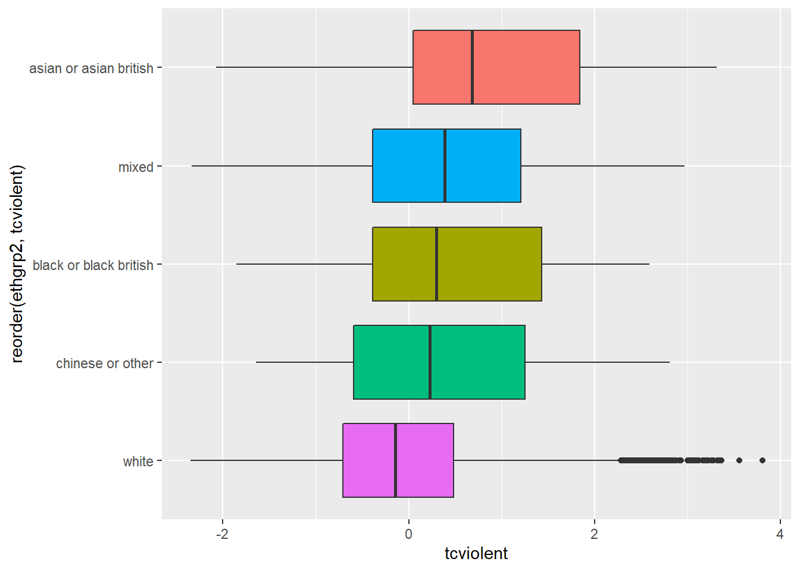
When you only have two groups you can use these graphs (error bars displaying confidence intervals) in a way equivalent to the way that you use a t test, but when you have multiple groups you need to think about the problem of multiple comparisons.
###ANOVA
So, again, we see some differences in means. Are these differences statistically significant? In other words, can we infer that they exist in the population from which the sample was drawn? For this we can run ANOVA and an F test.
How does this test work? We run ANOVA because we want to decide if the sample means are different enough for us to be able to reject the null hypothesis that they are different in the population. Clearly, if they are very different between themselves in the sample we will be in a stronger position to do this. That should be clear: if you want to talk abut differences in the population observing big differences across the means in the sample gets you closer to that.
What ANOVA does is to contrast the variability between the groups with the variability within the groups to produce a ratio: (Variability between the groups)/(Variability within the groups). If there is more variability between the groups than within the groups the more confidence we can have in a conclusion that the population means are not equal. Likewise, if there is more variation within the groups than between the groups, we will be in weaker ground to conclude that the population means are different. This short video explains it with an example.
So that’s how ANOVA gets the name, it is a ratio of variability, to be more precise a ratio of variances. The observed value is then compared to a probability distribution we haven’t covered yet: the F distribution. We have talked about the normal and the t distribution, the F distribution is just another family of probability distributions. But the idea remains the same earlier in relation to the t test. If you obtain large absolute values for F, you will be more confident that the observed differences are inconsistent with the null hypothesis. These values will have a low probability of being observed if the null hypothesis is true (if all the population means are equal) and therefore we will be able to reject this null hypothesis.
To run the ANOVA test we use the aov() function:
## Df Sum Sq Mean Sq F value Pr(>F)
## ethgrp2 4 253 63.21 64.54 <2e-16 ***
## Residuals 8428 8254 0.98
## ---
## Signif. codes: 0 '***' 0.001 '**' 0.01 '*' 0.05 '.' 0.1 ' ' 1
## 3243 observations deleted due to missingnessThe result is significant suggesting that there are some significant differences across the ethnic groups in fear of violent crime. The probability of observing this data, with the noted differences in means, if the null hypothesis were true is also very low (<2e-16).
Done, right? Well, not quite. Remember the steps in a hypothesis test. Before running the test we need to think and check the assumptions of the test, that should precede running the test. The ANOVA F test makes the following assumptions: + Independence assumption: the groups must be be independent of each other (this assumption would be violated if for example we compare a subjects performance before some treatment, again during the treatment, and then after the treatment: for this you would need something called repeated measures ANOVA which we don’t have the time to cover). + Randomisation condition: were the groups created through randomisation or in case of surveys are the data from each group a representative sample of that group? As with the t test, we are assuming simple random selection, which is not the case when the survey uses a complex survey design (but as we said then we will ignore this for convenience). + Equal variance assumption (also called the lovely names of homogeneity of variance or homoskedasticity): to check this assumption you need to check that the groups have similar variances (we’ll discuss this in greater length next). But it is important you know statisticians have discussed the degree to which this assumption matters, or in other words to what degree ANOVA is robust to violations of this assumptions. Is ANOVA robust (will give us results we can trust) when this assumption is violated? Andy Field and his co-authors (2012) discuss this at length in page 413. His view is that “when sample sizes are unequal, ANOVA is not robust to violations of homogeneity of variance” and we should proceed accordingly. + Normal population assumption: like the t test, we need to assume that the normal model is reasonable for the populations underlying each of the treatment groups.
###Checking homogeneity of variance and dealing with unequal spread
Let’s start by discussing why we care about the spread of the groups. Remember that ANOVA contrasts variability between the groups with variability within each group. If the variability within the groups varies, we are making this pooled variance larger, reducing the F statistic, and making it less likely that we can reject the null hypothesis. So when you have this problem, the ANOVA test will usually be a conservative test that will reject your null hypothesis less often than it should.
Look at the boxplots we produced. Does it look as if the spreads change systematically with the centres? Do the boxes with the bigger centres also have the wider spread? This sort of systematic trend may be more concerning than random differences in spread across the groups.
We can also run a test that will check the homogeneity of variance. This is the Levene Test. We can run this test with the leveneTest() function of the car package.
## Levene's Test for Homogeneity of Variance (center = median)
## Df F value Pr(>F)
## group 4 13.433 6.476e-11 ***
## 8428
## ---
## Signif. codes: 0 '***' 0.001 '**' 0.01 '*' 0.05 '.' 0.1 ' ' 1In this case, the test is significant suggesting that the variances are different in the population. However, you need to keep in mind that with the large samples of some of the groups this result is unsurprising.
We can further explore this assumption plotting the results from the ANOVA model we already run. Plotting the results of this ANOVA model allows us to inspect some plots that are useful for diagnosing problems.
plot(fearmodel.1) #Running this would result in four consecutive plots.
#Alternatively if you don't want to run ANOVA first and store the results in an object
plot(aov(tcviolent ~ ethgrp2, data=BCS0708))As Andy Field and his colleagues (2012) suggest the more important of these plots are the first two (to assess equal spread and normality). If you don’t want to print the four diagnostic plots you need to use more specific instructions so that R know which one you want. Let’s just get the plot we need for assessing equal spread:

This plot can be used to further explore homogeneity of variances. It is a plot of residuals versus fitted values (we will return to this later on this semester, for now just focus on interpretation as detailed below). We already know the Levene Test is significant and that the variances cannot be assumed to be the same in the population. In this sort of situations you expect plots such as this in which the vertical lines do not have the same length (longer collection of points suggests more variance and shorter collection of points less variance). We should be particularly concern with any systematic patterning (that is some sort of funnelling visual effect suggesting a systematic shortening or expanding of the lines as we move right to left in the X axis).
It looks as if the larger group (Whites) is the one with more variance. Again, in this sort of scenarios the ANOVA F Test will be more conservative (it may lead you to reject the null hypothesis in more occasions than it is warranted). Despite this we found a significant effect, so in practical terms it does not look as if the homogeneity of variance was such a big deal (it made our test more conservative right, but we still manage to reject the null hypothesis).
In those situations when you are concerned about the violation of this assumption because you have samples for some of the groups, we could run instead of ANOVA the Welch’s F test for equality of means:
##
## One-way analysis of means (not assuming equal variances)
##
## data: tcviolent and ethgrp2
## F = 46.663, num df = 4.00, denom df = 155.14, p-value < 2.2e-16In this case, the substantive conclusion is unsurprisingly the same. You reject the null hypothesis given the low p value associated with the observed F value.
###Checking normality and dealing with problems
The F tests require the underlying errors to follow a Normal model. Stricto sensu, we need to check the Normal model is reasonable for the population underlying each group. We should start by looking at the side-by-side boxplots for indications of skewness. If they are all or most skewed in the same direction, the normal condition will fail. We also need to look at outliers within each group (particularly with smaller samples). You may also find it useful to compare the density estimates.
ggplot(na.omit(BCS0708[,c("ethgrp2", "tcviolent")]), aes(x = tcviolent, fill = ethgrp2)) +
geom_density(alpha = .3)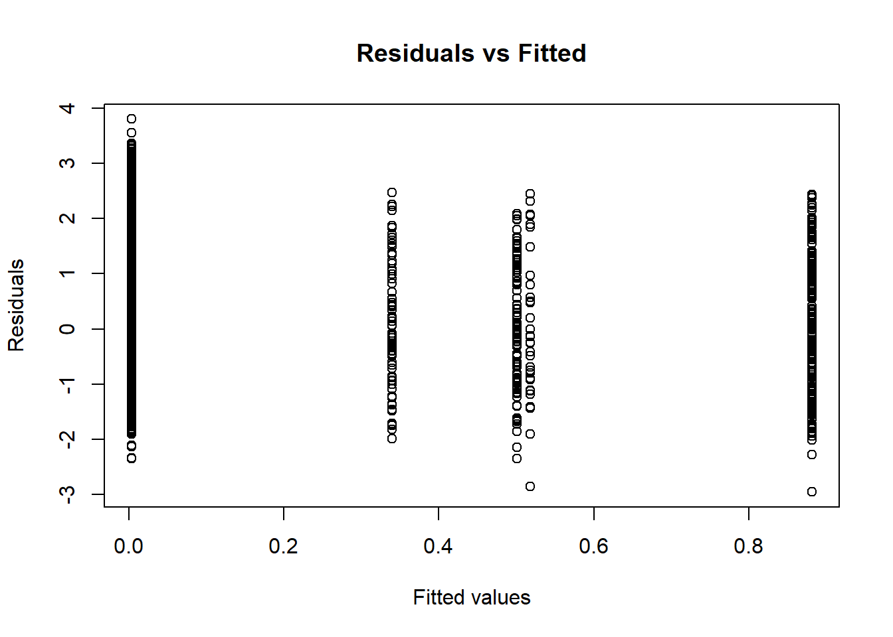
We can also use a normal probability plot of the residuals. If we had use plot(fearmodel.1), the second of the four printed plots would be the normal Q-Q plot. Alternatively we can specifically ask for it:
qqnorm(resid(aov(tcviolent ~ ethgrp2, data=BCS0708)), main="Normal Q-Q Plot")
qqline(resid(aov(tcviolent ~ ethgrp2, data=BCS0708)), col = 2)
As before, we are concerned here with clear departures from the red line. How do you interpret a QQ plot? It takes practice and some subjective judgement, it’s kind of an art. These are common patterns and possible interpretations:
all but a few points fall on a line: outliers in the data
left end of pattern is below the line and right end of pattern is above the line:long tails at both ends of the data distribution
left end of pattern is above the line and right end of pattern is below the line: short tails at both ends of the data distribution
curved pattern with slope increasing from left to right: data distribution is skewed to the right
curved pattern with slope decreasing from left to right data distribution is skewed to the left
staircase pattern (plateaus and gaps): data have been rounded or are discrete
You may find these examples of interpretation useful. We can see there are some at both ends.
Also this shiny app is an interactive way to get your head around interpreting Normal QQ plots.
The qqPlot function of the car package assists the interpretation by drawing a confidence interval around the expected values:

## [1] 1761 4769We can see that there is some departure from normality.
Sometimes when non-normality is an issue transforming your variable may be a way of solving the problem. You create a new transformed variable based on the original one that will now meet the normality requirement. This is something that can also sort issues with extreme observations (outliers). The idea behind transformations is that “you do something to every score to correct for distributional problems, outliers or unequal variances” (Field et al. 2012). There’s nothing dodgy about it. It’s not like we are cheating, because the same transformation will be applied to all scores. But it changes the units of measurement, which can make interpretation a bit more obscure.
There are many different potential transformations: log transformations, square root transformations, reciprocal transformations, reverse score transformations, etc. How do you choose? Trial and error. That is, you got to work and work until you find one that solves your problem. And sometimes none of the transformations give you an ideal solution.
We will illustrate the process of trial and error for normalising tcviolent (as much as we can). Let’s look again at the distribution of the variable.
## Warning: Removed 3242 rows containing non-finite values (stat_density).
We can see that the distribution is multimodal and that the tail to the right is longer than the tail to the left, there is a positive skew. We can also see that the values range from negative to positive values. Many of the transformations we use do not work well when we have negative values or zeros. So one way to allow them to work is to add a constant large enough to avoid zeros. I will add three to the variable:
This code creates a new variable ptcviolent in the BCS0708 dataframe that is the result of adding 3 to the original variable tcviolent. This ensures that all the values are positive. You will see all we have done is to shift the entire distribution to the positive side of the scale:
## Warning: Removed 3242 rows containing non-finite values (stat_density).
Let’s see what happens when we apply a logarithmic transformation (often used with skewed data):
## Warning: Removed 3242 rows containing non-finite values (stat_density).
Oops… We squashed the right tail a bit too much and stretched it in the left hand side. We’ll have to try another transformation.
Here I will discuss power transformations. We define a simple power transformation as the replacement of a variable X by X??. Often powers in the range from -2 to 3 are useful. The power -1 is in fact the reciprocal or inverse transformation. This family of transformations was first used by a seminal paper by Box and Cox in 1964, which is why you will find the literature refers to them as the Box-Cox (BC) transformations in their honour.
How do you select the right power transformation? Again, trial and error. The symbox() function in the car package is useful for finding a transformation to approximate symmetry by trial and error. The following code will produce a series of boxplots comparing the distribution of our variable (ptcviolent) for various power transformations.
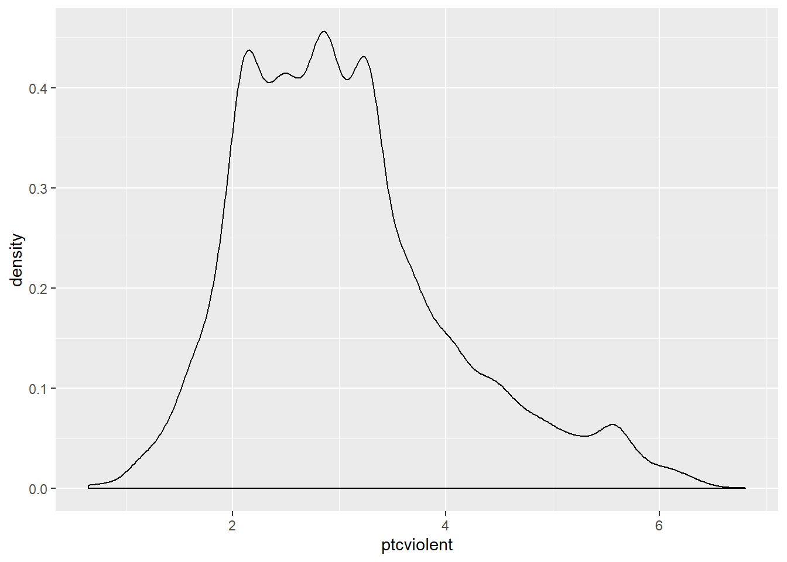
We can see that the most symmetrical of all is the 0.5 transformation. Let’s create and plot a variable using this power transformation:
BCS0708$bctcviolent <- bcPower(BCS0708$ptcviolent, 0.5)
ggplot(BCS0708, aes(x = bctcviolent)) +
geom_density()## Warning: Removed 3242 rows containing non-finite values (stat_density).
The new variable to the left hand side has squashed the right tail. It is a bit more symmetrical. We can see this in a normal probability plot:

## [1] 4388 4701
## [1] 1761 4769As we said the normal probability plots using this function display a (red) straight line (which is how a normally distributed probability should look like in these plots) and then the dots (on black here) showing the actual distribution of data. You can see that the variable in which we took the 0.5 power of fear of crime (the first plotted) is a bit closer to the straight red line, but still showing some departure from normality.
If we were happy with our transformations we could then run ANOVA as if the data was normal, only instead of comparing means on fear of violence we would be comparing means on whatever transformation we have made, scores of fear of crime raised to the 0.5 power (which to many mortals may sound rather obscure).
###Robust ANOVA
Wilcox (2005) describes a set of procedures for conducting robust ANOVA: ways of doing ANOVA when there are problems with its assumptions. When everything goes completely wrong with the assumptions, you may want to look at these options.
For this we need to install the package that he has created for implementing these procedures in R.
We can now invoke the code. The following code will use ANOVA based on 5% trimmed mean with 599 bootstrap samples:
## Call:
## t1waybt(formula = tcviolent ~ ethgrp2, data = BCS0708, tr = 0.05,
## nboot = 599)
##
## Effective number of bootstrap samples was 599.
##
## Test statistic: 45.3591
## p-value: 0
## Variance explained 0.088
## Effect size 0.296As with the standard ANOVA and the Welch version, we still get a significant result.
###Post Hoc Comparisons
So we are fairly certain there’s bound to be differences in the level of fear of crime across ethnic groups that may be reflective of those we see in our sample. In our sample (see below) the mean value of fear of violent crime across groups is different. The White group (.00) has the lowest level of fear and the Asian group the highest (.88). With the other groups with levels of fear of crime in between these two extremes: Chinese or Other (.34), Black (.50) and Mixed (.52).
However, all the ANOVA test (and the Welch’s F test and the robust ANOVA) does is to tell you that there are significant differences across these categories. What it does not do is to tell you which of those differences are significant. In other words, we don’t know if, for example, the apparent difference between fear of crime for the White and the Chinese group is significant or not. We know that some of these differences are significant but we don’t know which ones. We can however run post hoc (after the fact) comparisons that would give us answers to these -although this would only make sense if the ANOVA (or equivalent) test has already detected some differences.
There are different methods that have been proposed for doing post hoc multiple comparisons (see Field et al 2012 discussion in page 428-432). All of these methods try to take into account the problem of multiple comparisons and the way they modify the probability of finding a significant result, but they do it in a different way. Field et al. (2012) also explain how to compute a few different ones in pp. 447-451. I’m just going to illustrate one of these methods (Bonferroni adjustment) and you can learn about the others from Field et al. (2012).
The pairwise.t.test() function asks for multiple t tests adjusting for the fact you are indeed running multiple comparisons. The first variable identifies your metric variable, then you identify the categorical predictor, and then you select the particular multiple comparison adjustment you are choosing. Check Field et al. (2012) for what some of the options are.
##
## Pairwise comparisons using t tests with pooled SD
##
## data: BCS0708$tcviolent and BCS0708$ethgrp2
##
## asian or asian british black or black british
## black or black british 0.0041 -
## chinese or other 4.7e-05 1.0000
## mixed 0.4025 1.0000
## white < 2e-16 4.7e-07
## chinese or other mixed
## black or black british - -
## chinese or other - -
## mixed 1.0000 -
## white 0.0111 0.0214
##
## P value adjustment method: bonferroniWhat you see printed in this matrix are the p. values for each of the comparisons. Whenever that value is below the alpha level you have set out, say our conventional .05, then you can conclude that this particular comparison/difference is significant. So here we can say that:
The White group has significantly lower level of fear of crime than the Mixed group (p. value is .02), than the Asian group (p value is below 2.e-16), than the Black group (p value is 4.7e-07), and that the Chinese or Other group (p value is 0.01).
The Mixed group is only significantly different from the White group (the p value is higher than .05 for the other comparisons).
The Black group is significantly higher than the White and significantly higher than the Asian but no different from the mixed group or the Chinese/Other.
And we can say that the Chinese/Other has more fear than the White group and less than the Asian but does not seem different from the mixed group or the Black.
###Effect size for ANOVA
You can use the following programming code to get what is called as eta squared:
##
## Call:
## aov(formula = tcviolent ~ ethgrp2, data = BCS0708)
##
## Residuals:
## Min 1Q Median 3Q Max
## -2.9520 -0.7243 -0.1517 0.4958 3.8024
##
## Coefficients:
## Estimate Std. Error t value Pr(>|t|)
## (Intercept) 0.88176 0.05883 14.989 < 2e-16 ***
## ethgrp2black or black british -0.38112 0.10780 -3.535 0.000409 ***
## ethgrp2chinese or other -0.54197 0.11828 -4.582 4.67e-06 ***
## ethgrp2mixed -0.36376 0.17732 -2.051 0.040251 *
## ethgrp2white -0.87864 0.05987 -14.676 < 2e-16 ***
## ---
## Signif. codes: 0 '***' 0.001 '**' 0.01 '*' 0.05 '.' 0.1 ' ' 1
##
## Residual standard error: 0.9896 on 8428 degrees of freedom
## (3243 observations deleted due to missingness)
## Multiple R-squared: 0.02972, Adjusted R-squared: 0.02926
## F-statistic: 64.54 on 4 and 8428 DF, p-value: < 2.2e-16The summary function is simply invoking the results we obtained earlier when we run ANOVA and created the ‘fearmodel.1’ object. You get loads of numbers there. But the only part you are interested is what the output labels as ‘R-Squared’ (0.02972). In the context of ANOVA this is usually called eta squared. This value is also referred to as the percent of variance explained. This is simply the proportion of the total sum of squares that is accounted by the between sum of squares. The larger the proportion of total variance that is accounted for by the between sum of squares, the stronger the relationship between the metric and the categorical variable. When the means of the groups defined by your categorical variable are the same, eta squared will be 0. That would mean no relationship exist between your metric and your categorical variable. The largest value eta squared can take is 1, meaning that all the variability in your metric variable can be explained by your categorical variable.
Taking the square root of eta squared gives you the correlation between the metric and the categorical variable. Eta or the correlation is a measure of effect size; that is of the substantive impact of your categorical variable. In this case that value (square root of 0.02972) is around .17. That suggests that ethnicity has a small effect on fear of crime in this study (see page 58 of Field et al. 2012 for rules of thumb to interpret eta or r).
You can also use the ANOVA function from the lessR package, which is a package designed to facilitate the learning of R.
library(lessR)
ANOVA(tcviolent ~ ethgrp2, data = BCS0708, brief=TRUE) #The brief argument set to TRUE excludes pairwise comparisons and extra text from being printed.
## BACKGROUND
##
## Response Variable: tcviolent
##
## Factor Variable: ethgrp2
## Levels: asian or asian british black or black british chinese or other mixed white
##
## Number of cases (rows) of data: 11676
## Number of cases retained for analysis: 8433
##
##
## DESCRIPTIVE STATISTICS
##
## n mean sd min max
## asian or asian british 283 0.88175663803 1.16668811073 -2.07022309303 3.31529736519
## black or black british 120 0.50063411160 1.13798384912 -1.85322141647 2.59109425545
## chinese or other 93 0.33978925640 1.13861126145 -1.64311027527 2.80809569359
## mixed 35 0.51799569013 1.29961704407 -2.33650994301 2.96658897400
## white 7902 0.00311507460 0.97682414921 -2.35029053688 3.80547618866
##
## Grand Mean: 0.045530510071
##
##
## BASIC ANALYSIS
##
## df Sum Sq Mean Sq F-value p-value
## ethgrp2 4 252.83066055375 63.20766513844 64.54270257531 0.0000
## Residuals 8428 8253.67052402441 0.97931543949
##
##
## R Squared: 0.03
## R Sq Adjusted: 0.03
## Omega Squared: 0.03
##
## Cohen's f: 0.17
##
##
## TUKEY MULTIPLE COMPARISONS OF MEANS
##
## RESIDUALSYou will see this implementation of ANOVA apart from also printing the R Squared also gives you Omega Squared. Omega Squared is particularly helpful with smaller samples (check the Andy Field book for rules of thumb for its interpretation). You will also see with this function (although not printed here) a nicely labelled residual plot to assist interpretation of equal spread.
Homework Using the banbox dataset that we have used in previous sessions run a t test to explore whether criminal records are associated to emplyment response in the subset of cases before the banbox legislation was introduced. Discuss your results.
Using the BCS data we used today explore the relationship between fear of violent crime (tcviolent) and the level of education of the respondent (educat3).
#Studying relationships between two factors (Week 7)
##Producing cross tabulations
In earliest sessions we have covered how to run frequency distributions using the table() function. Cross tabulations, also called contingency tables, are essentially crossed frequency distributions, where you plot the frequency distributions of more than one variable simultaneously. This semester we are only going to explore two-way cross tabulations, that is contingency tables where we plot the frequency distribution of two variables at the same time. Frequency distributions are a useful way of exploring categorical variables that do not have too many categories. By extension, cross tabulations are a useful way of exploring relationships between two categorical variables that do not have too many levels or categories.
As we learned during the first week we can get results from R in a variety of ways. You can produce basic tables with some of the core functions in R. However, in order to produce the sort of cross-tabs we will use, I suggest you install and load the package gmodels. This package allows you to produce cross tabulations in a format similar to the one used by commercial statistical packages SPSS and SAS. Since some of you may have some previous experience with SPSS we will use the SPSS format. Cross-tabs with this package are more useful for our purposes than the default you may get with the core R table() function.
We will begin the session by loading again the BCS 2007/2008 data from previous weeks.
##R in Windows have some problems with https addresses, that's why we need to do this first:
urlfile<-'https://raw.githubusercontent.com/jjmedinaariza/LAWS70821/master/BCS0708.csv'
#We create a data frame object reading the data from the remote .csv file
BCS0708<-read.csv(url(urlfile))We will start by producing a cross tabulation of victimisation (“bcsvictim”), a categorical unordered variable, by whether the presence of rubbish in the streets is a problem in the area of residence (“rubbcomm”), another categorical unordered variable. Broken windows theory would argue we should see a relationship. We will use the following code:
library(gmodels)
with(BCS0708, CrossTable(rubbcomm, bcsvictim, prop.chisq = FALSE, format = c("SPSS")))##
## Cell Contents
## |-------------------------|
## | Count |
## | Row Percent |
## | Column Percent |
## | Total Percent |
## |-------------------------|
##
## Total Observations in Table: 11065
##
## | bcsvictim
## rubbcomm | not a victim of crime | victim of crime | Row Total |
## ------------------|-----------------------|-----------------------|-----------------------|
## fairly common | 876 | 368 | 1244 |
## | 70.418% | 29.582% | 11.243% |
## | 9.950% | 16.276% | |
## | 7.917% | 3.326% | |
## ------------------|-----------------------|-----------------------|-----------------------|
## not at all common | 4614 | 849 | 5463 |
## | 84.459% | 15.541% | 49.372% |
## | 52.408% | 37.550% | |
## | 41.699% | 7.673% | |
## ------------------|-----------------------|-----------------------|-----------------------|
## not very common | 3173 | 981 | 4154 |
## | 76.384% | 23.616% | 37.542% |
## | 36.040% | 43.388% | |
## | 28.676% | 8.866% | |
## ------------------|-----------------------|-----------------------|-----------------------|
## very common | 141 | 63 | 204 |
## | 69.118% | 30.882% | 1.844% |
## | 1.602% | 2.786% | |
## | 1.274% | 0.569% | |
## ------------------|-----------------------|-----------------------|-----------------------|
## Column Total | 8804 | 2261 | 11065 |
## | 79.566% | 20.434% | |
## ------------------|-----------------------|-----------------------|-----------------------|
##
## The cells for the central two columns represent the total number of cases in each category, the row percentages, the column percentages, and the total percentages. So you have, for example, 63 people in the category “rubbish is very common” that were victims of a crime, this represents 30.88% of all the people in the “rubbish is very common” category (your row percent), 2.79% of all the people in the “victim of a crime” category (your column percent), and 0.57% of all the people in the sample.
Notice that although “rubbcomm” is an ordinal variable, the order in which it gets printed does not make logical sense. We can check the order of the encoding using the levels() function.
## [1] "fairly common" "not at all common" "not very common"
## [4] "very common"As we can see the order makes little sense. We should reorder the factor levels to make them follow a logical order. There are multiple ways of doing this, some of which we have already seen. This is one possible way of doing it.
You are only interested in the proportions or percentages that allow you to make meaningful comparisons. Although you can do cross-tabs for variables in which a priori you don’t think of one of them as the one doing the explaining (your independent variable) and another to be explained (your dependent variable); most often you will already be thinking of them in this way. Here we think of victimisation as the outcome we want to explain and “rubbish in the area” as the factor that may help us to explain variation in victimisation.
If you have a dependent variable, you need to request only the percentages that allow you to make comparisons across your independent variable (how common rubbish is) for the outcome of interest (victimisation). In this case, with our outcome (victimisation) defining the columns, we would request and compare the row percentages only. On the other hand, if our outcome were the variable defining the rows we would be interested instead in the column percentages. Pay very close attention to this. It is a very common mistake to interpret a cross tab the wrong way if you don’t do as explained here.
To reiterate then, there are two rules to producing and reading cross tabs the right way. The first rule for reading cross tabulations is that if your dependent variable is defining the rows then you ask for the column percentages. If, on the other hand, you decided that you preferred to have your dependent variable defining the columns (as seen here), then, you would need to ask for the row percentages. Make sure you remember this.
To avoid confusion when looking at the table, you could as well modify the code to only ask for the relevant percentages. In this case we will ask for the row percentages. We can control what gets printed in the main console using the different options of the CrossTable() function. By default this function prints all the percentages, but most of them are not terribly useful for our purposes here. So, we are going to modify the default options by asking R not to print the column nor the total percentages.
##
## Cell Contents
## |-------------------------|
## | Count |
## | Row Percent |
## |-------------------------|
##
## Total Observations in Table: 11065
##
## | bcsvictim
## rubbcomm | not a victim of crime | victim of crime | Row Total |
## ------------------|-----------------------|-----------------------|-----------------------|
## not at all common | 4614 | 849 | 5463 |
## | 84.459% | 15.541% | 49.372% |
## ------------------|-----------------------|-----------------------|-----------------------|
## not very common | 3173 | 981 | 4154 |
## | 76.384% | 23.616% | 37.542% |
## ------------------|-----------------------|-----------------------|-----------------------|
## fairly common | 876 | 368 | 1244 |
## | 70.418% | 29.582% | 11.243% |
## ------------------|-----------------------|-----------------------|-----------------------|
## very common | 141 | 63 | 204 |
## | 69.118% | 30.882% | 1.844% |
## ------------------|-----------------------|-----------------------|-----------------------|
## Column Total | 8804 | 2261 | 11065 |
## ------------------|-----------------------|-----------------------|-----------------------|
##
## Much less cluttered. Now we only see in the counts and the row percentages. Marginal frequencies appear along the right and the bottom. Row marginals show the total number of cases in each row: 204 people perceive rubbish as very common in the area they’re living in areas where , 1244 perceive rubbish is fairly common in their area, etc. Column marginals indicate the total number of cases in each column: 9318 non-victims and 2358 victims.
In the central cells we see the total number for each combination of categories and now only the row percentage. So the total in each of those cells is expressed as the percentage of cases in that row. So, for example, 63 people who perceive rubbish as very common in their area who are a victim of a crime represent 30.88%% of all people in that row (n=204). If we had asked for the column percentages the 63 people who live in areas where rubbish is very common and are victims would be divided by the 2261 victim people in the study. Changing the denominator when computing the percentage changes the meaning of the percentage.
This can sound a bit confusing now. But as long as you remember the first rule we gave you before you should be fine: if your dependent defines the rows ask for the column percentages, if your dependent defines the columns ask for the row percentages. There are always students that get this wrong in the assignments and loose points as a result. Don’t let it be you.
The second rule for reading cross tabulations the right way is this: you make the comparisons across the right percentages (see first rule) in the direction where they do not add up to a hundred. Another way of saying this is that you compare the percentages for each level of your dependent variable across the levels of your independent variable. In this case we would, for example, compare what percentage of people who perceive rubbish as common in their area are victims of crime. We focus in the second column here (being victim of a crime) because typically that’s what we want to study, this is our outcome of interest (e.g., victimisation). We can see rubbish seems to matter a bit. For example, 30.88% of people who live in areas where rubbish is very common have been victimised. By contrast only 15.54% of people who live in areas where rubbish is not at all common have been victimised in the previous year.
If this is confusing you may enjoy this online tutorial on cross-tabulations looking at cause of mortality for music stars. Cross tabs are very commonly used, so it is important you understand well how they work.
##Expected frequencies and Chi-Square
So far we are only describing our sample. Can we infer that these differences that we observe in this sample can be generalised to the population from which this sample was drawn? Every time you draw a sample from the same population the results will be slightly different, we will have a different combination of people in these cells.
In order to assess that possibility we carry out a test of statistical significance. This test allow us to examine the null hypothesis. So our hypothesis is that there is a relatioship between the two variables, while our null hypothesis is that there is not a relationship. In this case, the null hypothesis states that in the population from which this sample was drawn victimisation and how common rubbish is in your area are independent events, that is, they are not related to each other. The materials you read as preparation explained the test that is appropriate for this case, the chi square test. You should know what this test does is to contrast the squared average difference between the observed frequencies and the expected frequencies (divided by the expected frequencies). We can see the expected frequencies for each cell modifying the options of the CrossTable function in the following manner:
##
## Cell Contents
## |-------------------------|
## | Count |
## | Expected Values |
## | Chi-square contribution |
## | Row Percent |
## |-------------------------|
##
## Total Observations in Table: 11065
##
## | bcsvictim
## rubbcomm | not a victim of crime | victim of crime | Row Total |
## ------------------|-----------------------|-----------------------|-----------------------|
## not at all common | 4614 | 849 | 5463 |
## | 4346.701 | 1116.299 | |
## | 16.437 | 64.005 | |
## | 84.459% | 15.541% | 49.372% |
## ------------------|-----------------------|-----------------------|-----------------------|
## not very common | 3173 | 981 | 4154 |
## | 3305.180 | 848.820 | |
## | 5.286 | 20.583 | |
## | 76.384% | 23.616% | 37.542% |
## ------------------|-----------------------|-----------------------|-----------------------|
## fairly common | 876 | 368 | 1244 |
## | 989.804 | 254.196 | |
## | 13.085 | 50.950 | |
## | 70.418% | 29.582% | 11.243% |
## ------------------|-----------------------|-----------------------|-----------------------|
## very common | 141 | 63 | 204 |
## | 162.315 | 41.685 | |
## | 2.799 | 10.899 | |
## | 69.118% | 30.882% | 1.844% |
## ------------------|-----------------------|-----------------------|-----------------------|
## Column Total | 8804 | 2261 | 11065 |
## ------------------|-----------------------|-----------------------|-----------------------|
##
##
## Statistics for All Table Factors
##
##
## Pearson's Chi-squared test
## ------------------------------------------------------------
## Chi^2 = 184.0443 d.f. = 3 p = 1.180409e-39
##
##
##
## Minimum expected frequency: 41.68495So you can see, for example, that although 63 people lived in areas where rubbish was very common and experienced a victimisation in the past year, under the null hypothesis of no relationship we should expect this value to be 41.69. There are more people in this cell than we would expect under the null hypothesis.
The Chi Square test
- compares these expected frequencies with the ones we actually observe in each of the cells;
- then averages the differences across the cells; and
- produces a standardised value that
- we look at in a Chi Square distribution to see how probable/improbable it is.
If this absolute value is large, it will have a small p value associated with and we will be in a position to reject the null hypothesis. We would conclude then that observing such a large chi square is improbable if the null hypothesis is true. In practice we don’t actually do any of this. We just run the Chi Square in our software and look at the p value in much the same way we have done for other tests. But it is helpful to know what the test is actually doing.
Asking for the expected frequencies automatically print the results of the Chi Square test. You get a chi square of 184.04, with 3 degrees of freedom. The probability associated with this particular value is nearly zero (1.180e-39). That is considerably lower than the standard alpha level of .05. So, these results would lead us to conclude that there is a statistically significant relationship between these two variables. We are able to reject the null hypothesis that these two variables are independent in the population from which this sample was drawn. In other words, this significant Chi Square test means that we can assume that there was indeed a relationship between our indicator of broken windows and victimisation in the population of England and Wales in 2007/2008.
Why is R telling us than the minimum expected frequency is 41.68? The Chi-squared test assumes the cell counts are sufficiently large. Precisely what constitutes ‘sufficiently large’ is a matter of some debate. One rule of thumb is that all expected cell counts should be above 5. In this case one alternative is to rely on the Fisher’s Exact Test rather than in the Chi Square. We don’t have to request it here. But if we needed, we could obtain the Fisher’s Exact Test with the following code:
You will most likely get an error message telling you to increase the size of the workspace. When this happens you may try following the recommendation provided (increasing the size of the workspace for the calculation) and using a hybrid approximation of the exact probabilities.
##
## Fisher's Exact Test for Count Data hybrid using asym.chisq. iff
## (exp=5, perc=80, Emin=1)
##
## data: BCS0708$rubbcomm and BCS0708$bcsvictim
## p-value < 2.2e-16
## alternative hypothesis: two.sidedThe p value is still considerably lower than our alpha level of .05. So, we can still reach the conclusion that the relationship we observe can be generalised to the population.
Another less extreme solution is to use a p value using Monte Carlo simulation. This is a way of proceeding that is similar in philosophy to the resampling techniques we covered in week 3. To obtain such a Chi Square test you could use the chisq.test() function passing an argument requiring that the p value is obtained via resampling simulation:
mytable.1 <- table(BCS0708$rubbcomm, BCS0708$bcsvictim)
chisq.test(mytable.1, simulate.p.value = TRUE)##
## Pearson's Chi-squared test with simulated p-value (based on 2000
## replicates)
##
## data: mytable.1
## X-squared = 184.04, df = NA, p-value = 0.0004998Remember that we didn’t really need the Fisher test or the simulated p values in this case. But there may be occasions when you need it as suggested above.
##Residuals
If we look at the observed and expected frequencies in the previous cross-tabulations we will see that there are differences in pretty much all the cells. You can possibly notice as well that some differences are bigger than others. For example, earlier we saw how there are about 21 more people that live in areas where rubbish is very common and experience victimisation than expected under the null hypothesis. Clearly when you see large differences you should expect that the cell in question may be playing a particularly strong role in driving the relationship.
But how do you know that large is large? As the required preparatory reading explains a statistic that helps in this regard is the adjusted standardised residuals. These residuals give you an idea of the difference between the expected and the observed counts in a standardised scale. Whenever you see differences that are greater (in absolute value) than 2, that’s telling you that the difference between expected and observed frequencies in that particular cell is significant and is driving the results of your Chi Square test. We can requests R to print these residuals with the following code:
##
## Cell Contents
## |-------------------------|
## | Count |
## | Expected Values |
## | Row Percent |
## | Adj Std Resid |
## |-------------------------|
##
## Total Observations in Table: 11065
##
## | bcsvictim
## rubbcomm | not a victim of crime | victim of crime | Row Total |
## ------------------|-----------------------|-----------------------|-----------------------|
## not at all common | 4614 | 849 | 5463 |
## | 4346.701 | 1116.299 | |
## | 84.459% | 15.541% | 49.372% |
## | 12.605 | -12.605 | |
## ------------------|-----------------------|-----------------------|-----------------------|
## not very common | 3173 | 981 | 4154 |
## | 3305.180 | 848.820 | |
## | 76.384% | 23.616% | 37.542% |
## | -6.436 | 6.436 | |
## ------------------|-----------------------|-----------------------|-----------------------|
## fairly common | 876 | 368 | 1244 |
## | 989.804 | 254.196 | |
## | 70.418% | 29.582% | 11.243% |
## | -8.494 | 8.494 | |
## ------------------|-----------------------|-----------------------|-----------------------|
## very common | 141 | 63 | 204 |
## | 162.315 | 41.685 | |
## | 69.118% | 30.882% | 1.844% |
## | -3.736 | 3.736 | |
## ------------------|-----------------------|-----------------------|-----------------------|
## Column Total | 8804 | 2261 | 11065 |
## ------------------|-----------------------|-----------------------|-----------------------|
##
##
## Statistics for All Table Factors
##
##
## Pearson's Chi-squared test
## ------------------------------------------------------------
## Chi^2 = 184.0443 d.f. = 3 p = 1.180409e-39
##
##
##
## Minimum expected frequency: 41.68495You can see here, looking at the column identifying the outcome of interest (victimisation) that the adjusted standardised residual is lower than -12 for the “not at all common” category. That is the largest residual for the outcome of interest. The expected count under the null hypothesis here is much higher than the observed count.
##Gamma
Is this relationship strong? The residuals seem to be suggesting it is not trivial indeed. Apart from looking at the residuals, one of the tests discussed in the required reading as a test for the strength of a relationship is gamma. Gamma is a measure of association that allow us to make a judgement about the strength of this relationship and that we can use with ordinal measures (or as in this case when one variable is ordinal and the other is nominal dichotomous). Gamma is appropriate for testing the relationship between two categorical ordered variables (ordinal-level variables) or between a categorical ordered variable and a categorical unordered variables with only two levels (a dichotomous variable, such as “victimisation”: that only has two levels, you have or you haven’t experienced a victimisation). How can you obtain gamma with R?
We will use the package vcdExtra for it (which you may need to install and load) to compute gamma. We use the following code:
mytable.2<-table(BCS0708$bcsvictim, BCS0708$rubbcomm) ##We first create a new object in tabular form because the function we use to compute Goodman and Kruskal's Gamma needs an object of that nature.
print(mytable.2) ##You can print the content of this object and you will see that it is simply the crosstab with just the counts.##
## not at all common not very common fairly common
## not a victim of crime 4614 3173 876
## victim of crime 849 981 368
##
## very common
## not a victim of crime 141
## victim of crime 63## Loading required package: vcd## Loading required package: grid## Loading required package: gnm## gamma : 0.266
## std. error : 0.019
## CI : 0.229 0.302Gamma falls between -1 and +1. The sign indicates whether the association is positive or negative. In this case it is positive: this suggests that the higher order of the categories in the ordinal measure (rubbish) is associated with higher values in the second variable (victimisation). Higher in this context mean the order in which they appear in your table. So the highest in your ordinal measure (how common rubbish is) refers to the last row (very common). And highest in the dichotomous measure refers to the last column (victim of a crime). Keep this in mind when interpreting gamma.
The larger the absolute value of gamma, the stronger the association. There are not clear rules of thumb in how to interpret Gamma. This value is larger than 0, although closer to 0 than to 1. De Vaus (2002) provides the following rules of thumb: up to .10 (trivial association), .10 to .29 (low to moderate), .30 to .49 (moderate to substantial), .50 to .69 (substantial to very strong), .70 to .89 (very strong), .9 and above (near perfect). On those bases, I would say this particular Gamma estimated at .226 indicates an association of modest size. Notice that the confidence interval is provided. So the estimated gamma with an alpha level of 0.05 is estimated to be anywhere between 0.302 and 0.229. If this confidence interval overlapped with 0 we could not reject the null hypothesis.
Gamma, however, assumes a “linear” relationship, more in one of the variables, more in the other (for positive relationships), less in one, more in the other (for negative relationships). Here we can see that the percentage of people that experience victimisation is almost the same for those who live in areas where rubbish is fairly common but also for those who live in areas where it is very common. That is, once we reach a certain level of rubbish the risk of victimisation does not go much higher. In situations like this gamma is likely underestimating the strength of the relationship.
##Odds and odd ratios
When you have two dichotomous nominal level variables, that is, two nominal level variables that can take only two possible levels, one of the more commonly used measures to indicate the strength of an association are odd ratios. Odd ratios and relative risk are very commonly used in public health and in criminological research. If you have knowledge of betting, you may already know a thing or two about odds.
They are the statistical equivalent of a tongue twister, so don’t worry too much if you need to keep looking at this handout every time you want to interpret them. We are going to look at the relationship between victimisation and living in a rural/urban setting:
##
## Cell Contents
## |-------------------------|
## | Count |
## | Expected Values |
## | Chi-square contribution |
## | Row Percent |
## |-------------------------|
##
## Total Observations in Table: 11676
##
## | bcsvictim
## rural2 | not a victim of crime | victim of crime | Row Total |
## -------------|-----------------------|-----------------------|-----------------------|
## rural | 2561 | 413 | 2974 |
## | 2373.393 | 600.607 | |
## | 14.830 | 58.602 | |
## | 86.113% | 13.887% | 25.471% |
## -------------|-----------------------|-----------------------|-----------------------|
## urban | 6757 | 1945 | 8702 |
## | 6944.607 | 1757.393 | |
## | 5.068 | 20.028 | |
## | 77.649% | 22.351% | 74.529% |
## -------------|-----------------------|-----------------------|-----------------------|
## Column Total | 9318 | 2358 | 11676 |
## -------------|-----------------------|-----------------------|-----------------------|
##
##
## Statistics for All Table Factors
##
##
## Pearson's Chi-squared test
## ------------------------------------------------------------
## Chi^2 = 98.52709 d.f. = 1 p = 3.206093e-23
##
## Pearson's Chi-squared test with Yates' continuity correction
## ------------------------------------------------------------
## Chi^2 = 98.00261 d.f. = 1 p = 4.178318e-23
##
##
## Minimum expected frequency: 600.6074So we can see that 22% of urban dwellers by comparison to 14% of those living in rural areas have experienced a victimisation in the previous past year. It looks as if living in an urban environment constitutes a risk factor or is associated with victimisation. The Chi Square we obtain has a low p value suggesting that this association is statistically significant. That is, we can possibly infer that there is an association in the population from which the sample was drawn. But how large is this relationship?
This is where odd ratios are handy. Before we get to them I will discuss a simple tip in layout. Risk ratios and odd ratios are very commonly used in the public health tradition. In this tradition researchers place the disease/condition defining the columns and the treatment or risk factor defining the rows and they do so in such a way that the first cell correspond to the intersection of the outcome and the risk factor. And the software that computes odd ratios tends to assume this is how your table is set up. So, whenever you are after the relative risks or odd ratios (that is, whenever you work with a 2X2 table) you should laid the table like this as well. It will help interpretation:
| Outcome: Yes | Outcome: No | |
| Risk factor: Yes | ||
| Risk factor: No |
Our table was set up in such a way that the rows are defined by our “risk factor” and the columns by our outcome. But the first cell represents the intersection of the presence of the risk factor and the absence of the outcome. The easiest way to sort this out is to change the order of the levels in our factor variable identifying the outcome (“bcsvictim”). If we ask R to print the levels of the bcsvictim variable we will see that they are as follow:
## [1] "not a victim of crime" "victim of crime"We want to reverse this. So that “victim of crime” becomes the first level (appears first in the print out). There are various ways of doing that with add-on packages, this is an easy way using base R:
BCS0708$bcsvictimR <- factor(BCS0708$bcsvictim, levels = c('victim of crime','not a victim of crime'))
print(levels(BCS0708$bcsvictimR))## [1] "victim of crime" "not a victim of crime"We can now rerun the previous cross tabulation (with the newly created reordered factor) and the table will look as below:
##
## Cell Contents
## |-------------------------|
## | Count |
## | Expected Values |
## | Chi-square contribution |
## | Row Percent |
## |-------------------------|
##
## Total Observations in Table: 11676
##
## | bcsvictimR
## rural2 | victim of crime | not a victim of crime | Row Total |
## -------------|-----------------------|-----------------------|-----------------------|
## rural | 413 | 2561 | 2974 |
## | 600.607 | 2373.393 | |
## | 58.602 | 14.830 | |
## | 13.887% | 86.113% | 25.471% |
## -------------|-----------------------|-----------------------|-----------------------|
## urban | 1945 | 6757 | 8702 |
## | 1757.393 | 6944.607 | |
## | 20.028 | 5.068 | |
## | 22.351% | 77.649% | 74.529% |
## -------------|-----------------------|-----------------------|-----------------------|
## Column Total | 2358 | 9318 | 11676 |
## -------------|-----------------------|-----------------------|-----------------------|
##
##
## Statistics for All Table Factors
##
##
## Pearson's Chi-squared test
## ------------------------------------------------------------
## Chi^2 = 98.52709 d.f. = 1 p = 3.206093e-23
##
## Pearson's Chi-squared test with Yates' continuity correction
## ------------------------------------------------------------
## Chi^2 = 98.00261 d.f. = 1 p = 4.178318e-23
##
##
## Minimum expected frequency: 600.6074In order to understand odd ratios and relative risk is important to understand risks and odds first. The risk is simply the probability of the “outcome” we are concerned about (i.e., victimisation). So the risk of victimisation for urban dwellers is simply the number of victimised urban dwellers (1945) divided by the total number of urban dwellers (8702). This is .2235. Similarly we can look at the risk of victimisation for people living in rural areas: the number of victimised countryside residents (413) divided by the total number of residents in rural areas (2974). This is .1388. The relative risk is simply the ratio of these two risks. In this case this yields 1.60. This suggests that urban dwellers are 1.60 times more likely to be victimised than people who live in rural areas.
The odds on the other hand contrast the number of individuals with the outcome with those without the outcome for each of the rows. Notice the difference with the risk. So the odds of victimisation for urban dwellers equal the number of victimised urban dwellers (1945) by the number of non-victimised urban dwellers (6757). This is .2878. There are .2878 victimised urban dwellers for every non-victimised urban dweller. And the odds of victimisation for residents of rural areas equal the number of victimised rural residents (413) by the number of non-victimised rural residents (2561). This is .1612. There are .1612 victimised rural residents for every non-victimised rural resident.
The odds ratio is the ratio of these two odds. So the odds ratio of victimisation for urban dwellers to rural residents is the odds of victimisation for urban dwellers (.2878) divided by the odds of victimisation for rural residents (.1612). This yields 1.78. This means that the odds of victimisation are almost 1.78 times higher for urban dwellers than for residents in rural areas.
You can use R to obtain the odd ratios directly. We can use the vcd package we mentioned earlier. As before we first create an object with the table and then ask for the ordinary odds ratio using the following code:
library(vcd)
mytable.3<-table(BCS0708$rural2, BCS0708$bcsvictimR)
oddsratio(mytable.3, stratum = NULL, log = FALSE) ##This function asks for the oddsratio for the table data in the object called mytable.3. The log=FALSE requests an ordinary odds ratio and the stratum option clarifies your data are not stratified.## odds ratios for and
##
## [1] 0.5602409What would happen if rather than using the recoded variable (bcsvictimR) we use the original one?
##
## not a victim of crime victim of crime
## rural 2561 413
## urban 6757 1945## odds ratios for and
##
## [1] 1.784947What’s going on? Why do we have a different value here? If you look at the cross tab you should be able to understand. R is now computing the odd ratio for “not being a victim of a crime” (since this is what defines the first column). When an odds ratio is below 1 is indicating that the odds in the first row (“urban”) are lower than in the second row (“rural”). Living in urban areas (as contrasted with living in rural areas) reduces the likelihood of non-victimisation.
How to interpret odd ratios? Something that is important to keep in mind is that odd ratios (and relative risk) are non-negative values, that is: they cannot take negative values (i.e., -1, -3, etc.). They can go from 1 to infinite but only from 1 to zero. If the value is greater than 1 that means that, as in this case, living in an urban area increases the chances of the event, being a victim in this example. If the value were to be between 0 and 1 that would mean that the factor in question reduces the chances of the event you are trying to predict. Finally, a value of 1 means that there is no relationship between the two variables: it would mean that the odds or the risks are the same for the two groups.
Whenever the odd ratio is between 0 and 1 that means that the odds of whatever it is defining the first column (in the more recent table we printed not being a victim) is lower for the first row (in this case living in an urban area) than in the second row (in this case living in a rural area). To read an odd ratio that is between 0 and 1 you first need to take its inverse, so in this case 1/0.5602 will give you 1.78. What this is telling you is that the odds of not being a victim of victim are 1.78 times less for men than for women, which is the same as to say that the odds of being a victim of assault are 1.78 more for men than for women. That is, odd ratios are reciprocal.
You may be confused by now. Have a look at this video, it may help to see an oral presentation of these ideas with a different example. Repeated practice will make it easier to understand. The fact that the interpretation of these quantities is contingent in the way we have laid out our table makes it particularly advisable to hand calculate them as explained above in relation to the outcome you are interested until you are comfortable with them. This may help you to see more clearly what you are getting and how to interpret it. When looking at the R results for odd ratios just always keep in mind that you are aware of what are the reference categories (what defines the first column and the first row) when reading and interpreting odd ratios. The R function we introduced will always give you the odds ratio for the event defined in the first column and will contrast the odds for the group defined by the first row with the odds defined by the second row. If the odds ratio is between 0 and 1 that would mean the odds are lower for the first row, if the odds is greater than 1 that would mean the odds are higher for the second row.
It is also very important you do not confuse the relative risk (a ratio of probabilities) with the odds ratio (a ratio of odds). Be very careful with the language you use when interpreting these quantities. Odd ratios are ratios of odds, not probability ratios. You cannot say that urban dwellers are 1.78 more likely to be victimised. All you can say with an odd ratio is that the odds of being victimised are 1.78 times higher for urban dwellers than for residents in rural areas. Odds and probabilities are different things.
It is also very important that you interpret these quantities carefully. You will often see media reports announcing things such as that chocolate consumption will double your risk of some terrible disease. What that means is that the percentage of cases of individuals that take chocolate and present the condition is twice as large as those that do not take chocolate and present the condition. But you also need to know what those percentages are to put it in the right context. If those probabilities are very low to start with, well, does it really matter?

increased risk
HOMEWORK
Select two pairs of categorical variables from the dataset you are using for your coursework assignment. These could be variables you have selected for your coursework assignment if you wish. Then run one crosstabulation for each of these two pairs. Report appropriate statistics and interpret your results for these two crosstabulations.
#An introduction to regression (Week 8)
##Introduction
In this session we are going to cover regression analysis or, rather, we are beginning to talk about regression modelling. This form of analysis has been one the main technique of data analysis in the social sciences for many years and it belongs to a family of techniques called generalised linear models. Regression is a flexible model that allows you to “explain” or “predict” a given outcome (Y), variously called your outcome, response or dependent variable, as a function of a number of what is variously called inputs, features or independent, explanatory, or predictive variables (X1, X2, X3, etc.). Following Gelman and Hill (2007), I will try to stick for the most part to the terms outputs and inputs.
Today we will cover something that is called linear regression or ordinary least squares regression (OLS), which is a technique that you use when you are interested in explaining variation in an interval level variable. First we will see how you can use regression analysis when you only have one input and then we will move to situations when we have several explanatory variables or inputs.
We will return to the BCS0708 data we used in previous sessions.
##R in Windows have some problems with https addresses, that's why we need to do this first:
urlfile<-'https://raw.githubusercontent.com/jjmedinaariza/LAWS70821/master/BCS0708.csv'
#We create a data frame object reading the data from the remote .csv file
BCS0708<-read.csv(url(urlfile))We are going to look at the relationship between fear of violent crime (tcviolent), high scores represent high fear, with a variable measuring perceptions on antisocial behaviour in the local area (tcarea), high scores represent the respondents perceive a good deal of antisocial behaviour8:
## `stat_bin()` using `bins = 30`. Pick better value with `binwidth`.## Warning: Removed 3242 rows containing non-finite values (stat_bin).
## `stat_bin()` using `bins = 30`. Pick better value with `binwidth`.## Warning: Removed 677 rows containing non-finite values (stat_bin).
We can see both are skewed. Let’s look at the scatterplot:
## Warning: Removed 3664 rows containing missing values (geom_point).
What do you think when looking at this scatterplot? Is there a relationship between perceptions of disorder and fear of violent crime? Does it look as if individuals that have a high score on the X axis (perceptions of disorder) also have a high score on the Y axis (fear of violent crime)? It may be a bit hard to see but I would think there is certainly a trend.
##Motivating regression
Now, imagine that we play a game. Imagine I have all the respondents waiting in a room, and I randomly call one of them to the stage. You’re sitting in the audience, and you have to guess the level of fear (’tcviolent’) for that respondent. Imagine that I pay £150 to the student that gets the closest to the right value. What would you guess if you only have one guess and you knew (as we do) how fear of violent crime is distributed?
ggplot(BCS0708, aes(x = tcviolent)) +
geom_density() +
geom_vline(xintercept = 0.046, linetype = "dashed", size = 1, color="red") +
geom_vline(xintercept = -0.117, linetype = "dashed", size = 1, color="blue") +
ggtitle("Density estimate and mean of fear of violent crime")## Warning: Removed 3242 rows containing non-finite values (stat_density).
## Min. 1st Qu. Median Mean 3rd Qu. Max. NA's
## -2.350 -0.672 -0.117 0.046 0.540 3.805 3242If I only had one shot, I would go for the median (given the skew) but the mean would be your second best. Most of the areas here have values clustered around those values, which is another way of saying they are bound to be not too far from them.
Imagine, however, that now when someone is called to the stage, you are told their perception of antisocial behaviour in their neighbourhood - so the value of the tcarea variable for the individual that has been selected (for example 3). Imagine as well that you have the scatterplot that we produced earlier in front of you. Would you still go for the value of “zero” as your best guess for the value of the selected ball (area)?
I certainly would not go with the overall mean or median as my prediction anymore. If somebody said to me, the value ‘tcarea’ for the selected respondent is 3, I would be more inclined to guess the mean value for the individuals with that level of perceptions of antisocial behaviour (the conditional mean), rather than the overall mean across all the individuals. Wouldn’t you?
If we plot the conditional means we can see that the mean of fear of violent crime for individuals that report a value of 3 in tcarea is around 1.4. So you may be better off guessing that.
library(grid)
ggplot() +
geom_point(data=BCS0708, aes(x = tcarea, y = tcviolent), alpha=.2) +
geom_line(data=BCS0708, aes(x = round(tcarea/0.12)*0.12, y = tcviolent),
stat='summary',
fun.y=mean,
color="red",
size=1) +
annotate("segment", x=2, xend = 3, y = 2, yend= 1.4, color = "blue", size = 2, arrow = arrow()) +
annotate("text", x = 2, y = 2.2, label = "Pick this one!", size =7, colour = "blue")## Warning: Removed 3664 rows containing non-finite values (stat_summary).## Warning: Removed 3664 rows containing missing values (geom_point).
Linear regression tackles this problem using a slightly different approach. Rather than focusing on the conditional mean (smoothed or not), it draws a straight line that tries to capture the trend in the data. If we focus in the region of the scatterplot that are less sparse we see that this is an upward trend, suggesting that as the perceptions of antisocial behaviour increase so do the expressed fear of violent crime.
Simple linear regression draws a single straight line of predicted values as the model for the data. This line would be a model, a simplification of the real world like any other model (e.g., a toy pistol, an architectural drawing, a subway map), that assumes that there is approximately a linear relationship between X and Y. Let’s draw the regression line:
ggplot(data = BCS0708, aes(x = tcarea, y = tcviolent)) +
geom_point(alpha = .2, position = "jitter") +
geom_smooth(method = "lm", se = FALSE, color = "red", size = 1) #This ask for a geom with the regression line, method=lm asks for the linear regression line, se=FALSE ask for just the line to be printed, the other arguments specify the color and thickness of the line## Warning: Removed 3664 rows containing non-finite values (stat_smooth).## Warning: Removed 3664 rows containing missing values (geom_point).
What that line is doing is giving you guesses (predictions) for the values of fear of violent crime based in the information that we have about the perceptions of antisocial behaviour. It gives you one possible guess for the value of fear for every possible value of perceptions of antisocial behaviour and links them all together in a straight line.
Another way of thinking about this line is as the best possible summary of the cloud of points that are represented in the scatterplot (if we can assume that a straight line would do a good job doing this). If I were to tell you to draw a straight line that best represents this pattern of points the regression line would be the one that best does it (if certain assumptions are met).
The linear model then is a model that takes the form of the equation of a straight line through the data. The line does not go through all the points. In fact, you can see is a slightly less accurate representation than the (smoothed) conditional means:
## Warning: Removed 3664 rows containing non-finite values (stat_smooth).## Warning: Removed 3664 rows containing non-finite values (stat_summary).## Warning: Removed 3664 rows containing missing values (geom_point).
As De Veaux et al (2012: 179) highlight: “like all models of the real world, the line will be wrong, wrong in the sense that it can’t match reality exactly. But it can help us understand how the variables are associated”. A map is never a perfect representation of the world, the same happens with statistical models. Yet, as with maps, models can be helpful.
##Fitting a simple regression model
In order to draw a regression line we need to know two things: (1) We need to know where the line begins, what is the value of Y (our dependent variable) when X (our independent variable) is 0, so that we have a point from which to start drawing the line. The technical name for this point is the intercept. (2) And we need to know what is the slope of that line, that is, how inclined the line is, the angle of the line.
If you recall from elementary algebra (and you may not), the equation for any straight line is: y = mx + b In statistics we use a slightly different notation, although the equation remains the same: y = b0 + b1x
We need the origin of the line (b0) and the slope of the line (b1). How does R get the intercept and the slope for the green line? How does R know where to draw this line? We need to estimate these parameters (or coefficients) from the data. How? We don’t have the time to get into these more mathematical details now. You should study the required reading to understand this (required means it is required, it is not optional)9. For now, suffice to say that for linear regression modes like the one we cover here, when drawing the line, R tries to minimise the distance from every point in the scatterplot to the regression line using a method called least squares estimation.
In order to fit the model we use the lm() function using the formula specification (Y ~ X). Typically you want to store your regression model in a “variable”, let’s call it fit_1:
You will see in your R Studio global environment space that there is a new object called fit_1 with 13 elements on it and about 2.2 Mb of data. We can get a sense for what this object is and includes using the functions we introduced in Week 1:
## [1] "lm"## $names
## [1] "coefficients" "residuals" "effects" "rank"
## [5] "fitted.values" "assign" "qr" "df.residual"
## [9] "na.action" "xlevels" "call" "terms"
## [13] "model"
##
## $class
## [1] "lm"R is telling us that this is an object of class lm and that it includes a number of attributes. One of the beauties of R is that you are producing all the results from running the model, putting them in an object, and then giving you the opportunity for using them later on. A lot of the diagnostics that we will cover in Week 8 work with various elements that we stored in this object. If you want to simply see the basic results from running the model you can use the summary() function.
##
## Call:
## lm(formula = tcviolent ~ tcarea, data = BCS0708)
##
## Residuals:
## Min 1Q Median 3Q Max
## -2.9336 -0.6354 -0.1317 0.4731 3.9777
##
## Coefficients:
## Estimate Std. Error t value Pr(>|t|)
## (Intercept) 0.03159 0.01065 2.965 0.00303 **
## tcarea 0.30921 0.01081 28.595 < 2e-16 ***
## ---
## Signif. codes: 0 '***' 0.001 '**' 0.01 '*' 0.05 '.' 0.1 ' ' 1
##
## Residual standard error: 0.9536 on 8010 degrees of freedom
## (3664 observations deleted due to missingness)
## Multiple R-squared: 0.09263, Adjusted R-squared: 0.09251
## F-statistic: 817.7 on 1 and 8010 DF, p-value: < 2.2e-16Or if you prefer more parsimonious presentation you could use the display() function of the arm package:
## Loading required package: MASS## Loading required package: Matrix## Loading required package: lme4##
## arm (Version 1.10-1, built: 2018-4-12)## Working directory is /Users/reka/Desktop/modelling_book## lm(formula = tcviolent ~ tcarea, data = BCS0708)
## coef.est coef.se
## (Intercept) 0.03 0.01
## tcarea 0.31 0.01
## ---
## n = 8012, k = 2
## residual sd = 0.95, R-Squared = 0.09For now I just want you to focus on the numbers in the “Estimate” column. The value of 0.03159 estimated for the intercept is the “predicted” value for Y when X equals zero. This is the predicted value of the fear of crime score when perceptions of antisocial behaviour are zero.
We then need the b1 regression coefficient for for our independent variable, the value that will shape the slope in this scenario. This value is 0.30921. This estimated regression coefficient for our independent variable has a convenient interpretation. When the value is positive, it tells us that for every one unit increase in X there is a b1 increase on Y. If the coefficient is negative then it represents a decrease on Y. Here, we can read it as “for every one unit increase in the perceptions of antisocial behaviour score, there is a 0.31 unit increase in the fear of violent crime score.”
Knowing these two parameters not only allows us to draw the line, we can also solve for any given value of X. Let’s go back to our guess-the-fear-of-crime game. Imagine I tell you the perceptions of antisocial behaviour score is .23. What would be your best bet now? We can simply go back to our regression line equation and insert the estimated parameters:
y = b0 + b1x
y = 0.03 + 0.31 (.23)
y = .1031
Or if you don’t want to do the calculation yourself, you can use the predict function (differences are due to rounding error):
## 1
## 0.1027126This is the expected value of Y, fear of violent, when X, perceptions of antisocial behaviour is .23 according to our model (according to our simplification of the real world, our simplification of the whole cloud of points into just one straight line). Look back at the scatterplot we produced earlier with the green line. Does it look as if the green line when X is .23 corresponds to a value of Y of .1027?
##Residuals revisited: R squared
In the output above we saw there was something called the residuals. The residuals are the differences between the observed values of Y for each case minus the predicted or expected value of Y, in other words the distances between each point in the dataset and the regression line (see the visual example below).

drawing
You see that we have our line, which is our predicted values, and then we have the black dots which are our actually observed values. The distance between them is essentially the amount by which we were wrong, and all these distances between observed and predicted values are our residuals. Least square estimation essentially aims to reduce the squared average of all these distances: that’s how it draws the line.
Why do we have residuals? Well, think about it. The fact that the line is not a perfect representation of the cloud of points makes sense, doesn’t it? You cannot predict perfectly what the value of Y is for every individual just by looking ONLY at their perceptions of antisocial behaviour! This line only uses information regarding perceptions of antisocial behaviour. This means that there’s bound to be some difference between our predicted level of fear given our knowledge of these perceptions (the regression line) and the actual level of fear (the actual location of the points in the scatterplot). There are other things that matter not being taken into account by our model to predict the values of Y. There are other things that surely matter in terms of understanding fear of crime. And then, of course, we have measurement error and other forms of noise.
We can re-write our equation like this if we want to represent each value of Y (rather than the predicted value of Y) then: y = b0 + b1x + residuals
The residuals capture how much variation is unexplained, how much we still have to learn if we want to understand variation in Y. A good model tries to maximise explained variation and reduce the magnitude of the residuals.
We can use information from the residuals to produce a measure of effect size, of how good our model is in predicting variation in our dependent variables. Remember our game where we try to guess fear of crime (Y)? If we did not have any information about X our best bet for Y would be the mean of Y. The regression line aims to improve that prediction. By knowing the values of X we can build a regression line that aims to get us closer to the actual values of Y (look at the Figure below).

r squared
The distance between the mean (our best guess without any other piece of information) and the observed value of Y is what we call the total variation. The residual is the difference between our predicted value of Y and the observed value of Y. This is what we cannot explain (i.e, variation in Y that is unexplained). The difference between the mean value of Y and the expected value of Y (the value given by our regression line) is how much better we are doing with our prediction by using information about X (i.e., in our previous example it would be variation in Y that can be explained by knowing about perceptions of antisocial behaviour). How much closer the regression line gets us to the observed values. We can then contrast these two different sources of variation (explained and unexplained) to produce a single measure of how good our model is. The formula is as follows:

formula
All this formula is doing is taking a ratio of the explained variation (the squared differences between the regression line and the mean of Y for each observation) by the total variation (the squared differences of the observed values of Y for each observation from the mean of Y). This gives us a measure of the percentage of variation in Y that is “explained” by X. If this sounds familiar is because it is a measure similar to eta squared in ANOVA that we cover in an earlier session.
As then we can take this value as a measure of the strength of our model. If you look at the R output you will see that the R2 for our model was .09 (look at the multiple R square value in the output) . We can say that our model explains 9% of the variance in the fear of violent crime measure.
#As an aside, and to continue emphasising your appreciation of the object oriented nature of R, when we run the summary() function we are simply generating a list object of the class summary.lm.
attributes(summary(fit_1))## $names
## [1] "call" "terms" "residuals" "coefficients"
## [5] "aliased" "sigma" "df" "r.squared"
## [9] "adj.r.squared" "fstatistic" "cov.unscaled" "na.action"
##
## $class
## [1] "summary.lm"#This means that we can access its elements if so we wish. So, for example, to obtain just the R Squared, we could ask for:
summary(fit_1)$r.squared## [1] 0.09262767Knowing how to interpret this is important. R^2 ranges from 0 to 1. The greater it is the more powerful our model is, the more explaining we are doing, the better we are able to account for variation in our outcome Y with our input. In other words, the stronger the relationship is between Y and X. As with all the other measures of effect size interpretation is a matter of judgement. You are advised to see what other researchers report in relation to the particular outcome that you may be exploring.
Weisburd and Britt (2009: 437) suggest that in criminal justice you rarely see values for R^2 greater than .40. Thus, if your R^2 is larger than .40, you can assume you have a powerful model. When, on the other hand, R^2 is lower than .15 or .2 the model is likely to be viewed as relatively weak. Our observed r squared here is rather poor. There is considerably room for improvement if we want to develop a better model to explain fear of violent crime10. In any case, many people would argue that R^2 is a bit overrated. You need to be aware of what it measures and the context in which you are using it. Read here for some additional detail.
##Inference with regression
In real applications, we have access to a set of observations from which we can compute the least squares line, but the population regression line is unobserved. So our regression line is one of many that could be estimated. A different sample would produce a different regression line. The same sort of ideas that we introduced when discussing the estimation of sample means or proportions also apply here. if we estimate b0 and b1 from a particular sample, then our estimates won’t be exactly equal to b0 and b1 in the population. But if we could average the estimates obtained over a very large number of data sets, the average of these estimates would equal the coefficients of the regression line in the population.
In the same way that we can compute the standard error when estimating the mean and explained in Week 3, we can compute standard errors for the regression coefficients to quantify our uncertainty about these estimates. These standard errors can in turn be used to produce confidence intervals. This would require us to assume that the residuals are normally distributed. As seen in the image, and for a simple regression model, you are assuming that the values of Y are approximately normally distributed for each level of X:

normalityresiduals
In those circumstances we can trust the confidence intervals that we can draw around the regression line as in the image below:
estimated
The dark-blue line marks the best fit. The two dark-pink lines mark the limits of the confidence interval. The light-pink lines show the sampling distributions around each of the confidence-interval limits (the many regression lines that would result from repeated sampling); notice that the best-fit line falls at the extreme of each sampling distribution.
You can also then perform standard hypothesis test on the coefficients. As we saw before when summarising the model, R will compute the standard errors and a t test for each of the coefficients.
## Estimate Std. Error t value Pr(>|t|)
## (Intercept) 0.03159349 0.01065460 2.965243 3.033356e-03
## tcarea 0.30921336 0.01081345 28.595247 2.496128e-171In our example, we can see that the coefficient for our predictor here is statistically significant11.
We can also obtain confidence intervals for the estimated coefficients using the confint() function:
## 2.5 % 97.5 %
## (Intercept) 0.0107077 0.05247929
## tcarea 0.2880162 0.33041054##Fitting regression with categorical predictors
So far we have explained regression using a numeric input. It turns out we can also use regression with categorical explanatory variables. It is quite straightforward to run it.
Last week we saw that men and women seem to express different levels of fear of violent crime. We can also explore this relationship using regression and a regression line. This is how you would express the model:
Notice that there is nothing different in how we ask for the model. And see below the regression line:
ggplot(data=BCS0708, aes(x=sex, y=tcviolent)) +
geom_point(alpha=.2, position="jitter", color="orange") +
geom_abline(intercept = fit_2$coefficients[1],
slope = fit_2$coefficients[2], color="red", size=1) +
theme_bw()## Warning: Removed 3242 rows containing missing values (geom_point).
Let’s have a look at the results:
##
## Call:
## lm(formula = tcviolent ~ sex, data = BCS0708)
##
## Residuals:
## Min 1Q Median 3Q Max
## -2.6785 -0.6266 -0.1288 0.5346 4.0793
##
## Coefficients:
## Estimate Std. Error t value Pr(>|t|)
## (Intercept) 0.32817 0.01433 22.91 <2e-16 ***
## sexmale -0.60200 0.02091 -28.79 <2e-16 ***
## ---
## Signif. codes: 0 '***' 0.001 '**' 0.01 '*' 0.05 '.' 0.1 ' ' 1
##
## Residual standard error: 0.9584 on 8432 degrees of freedom
## (3242 observations deleted due to missingness)
## Multiple R-squared: 0.08949, Adjusted R-squared: 0.08938
## F-statistic: 828.7 on 1 and 8432 DF, p-value: < 2.2e-16As you will see the output does not look too different. But notice that in the print out you see how the row with the coefficient and other values for our input variable sex we see that R is printing [sexmale]. What does this mean?
Remember week 5 and t tests? It turns out that a linear regression model with just one dichotomous categorical predictor is just the equivalent of a t test. When you only have one predictor the value of the intercept is the mean value of the reference category and the coefficient for the slope tells you how much higher (if it is positive) or how much lower (if it is negative) is the mean value for the other category in your factor.
The reference category is the one for which R does not print the level next to the name of the variable for which it gives you the regression coefficient. Here we see that the named level is “male”. That’s telling you that the reference category here is “female”. Therefore the Y intercept in this case is the mean value of fear of violent crime for the females, whereas the coefficient for the slope is telling you how much lower the mean value is for the males. Don’t believe me?
## [1] 0.3281656## [1] -0.6019978So, to reiterate, for a binary predictor, the coefficient is nothing else than the difference between the mean of the two levels in your factor variable, between the averages in your two groups.
With categorical variables encoded as factors you always have a situation like this: a reference category and then as many additional coefficients as there are additional levels in your categorical variable. Each of these additional categories is input into the model as “dummy” variables. Here our categorical variable has two levels, thus we have only one dummy variable. There will always be one fewer dummy variable than the number of levels. The level with no dummy variable, females in this example, is known as the reference category or the baseline.
It turns out then that the regression table is printing out for us a t test of statistical significance for every input in the model. If we look at the table above this t value is -28.79 and the p value associated with it is near 0. This is indeed considerably lower than the conventional significance level of 0.05. So we could conclude that the probability of obtaining this value if the null hypothesis is true is very low. However, the observed r squared is also kind of poor. Read this to understand a bit more this phenomenon of low p, but also low r-squared.
Imagine, however, that you are looking at the relationship between fear and race (ethgrp2). In our data set this variable has 5 levels that are alphabetically ordered.
## [1] "asian or asian british" "black or black british"
## [3] "chinese or other" "mixed"
## [5] "white"If we were to run a regression model this would result in a model with 4 dummy variables. The coefficient of each of these dummies would be telling you how much higher or lower (if the sign were negative) was the level of fear of crime for each of the racial groups for which you have a dummy compared to your reference category or baseline. One thing that is important to keep in mind is that R by default will use as the baseline category the first level in your factor. Since ethgrp2 has these levels alphabetically ordered that means that your baseline category would be “Asian or Asian British”. If you want to change this you may need to reorder the levels. There are many different ways of doing this but one possibility would be to use the relevel function within your formula call in lm. In a case in which you are exploring racial differences it can make sense to use the racial majority as your baseline. We could then run the following model.
##Motivating multiple regression
So we have seen that our models with just one predictor are not terribly powerful. Partly that’s due to the fact that they are not properly specified, they do not include a solid set of good predictor variables that can help us to explain variation in our response variable. We can build better models by expanding the number of predictors (although keep in mind you should also aim to build models as parsimonious as possible).
Another reason why it is important to think about additional variables in your model is to control for spurious correlations (although here you may also want to use your common sense when selecting your variables!). You must have heard before that correlation does not equal causation. Just because two things are associated we cannot assume that one is the cause for the other. Typically we see how the pilots switch the secure the belt button when there is turbulence. These two things are associated, they tend to come together. But the pilots are not causing the turbulences by pressing a switch! The world is full of spurious correlations, associations between two variables that should not be taking too seriously. You can explore a few here. It’s funny.
Looking only at covariation between pair of variables can be misleading. It may lead you to conclude that a relationship is more important than it really is. This is no trivial matter, but one of the most important ones we confront in research and policy12.
It’s not an exaggeration to say that most quantitative explanatory research is about trying to control for the presence of confounders, variables that may explain explain away observed associations. Think about any criminology question: Does marriage reduces crime? Or is it that people that get married are different from those that don’t (and are those pre-existing differences that are associated with less crime)? Do gangs lead to more crime? Or is it that young people that join gangs are more likely to be offenders to start with? Are the police being racist when they stop and search more members of ethnic minorities? Or is it that there are other factors (i.e., offending, area of residence, time spent in the street) that, once controlled, would mean there is no ethnic dis-proportionality in stop and searches? Does a particular program reduces crime? Or is the observed change due to something else?
These things also matter for policy. Wilson and Kelling, for example, argued that signs of incivility (or antisocial behaviour) in a community lead to more serious forms of crime later on as people withdraw to the safety of their homes when they see those signs of incivilities and this leads to a reduction in informal mechanisms of social control. All the policies to tackle antisocial behaviour in this country are very much informed by this model and were heavily influenced by broken windows theory.
But is the model right? Sampson and Raudenbush argue it is not entirely correct. They argue, and tried to show, that there are other confounding (poverty, collective efficacy) factors that explain the association of signs of incivility and more serious crime. In other words, the reason why you see antisocial behaviour in the same communities that you see crime is because other structural factors explain both of those outcomes. They also argue that perceptions of antisocial behaviour are not just produced by observed antisocial behaviour but also by stereotypes about social class and race. If you believe them, then the policy implications are that only tackling antisocial behaviour won’t help you to reduce crime (as Wilson and Kelling have argued) . So as you can see this stuff matters for policy not just for theory.
Multiple regression is one way of checking the relevance of competing explanations. You could set up a model where you try to predict crime levels with an indicator of broken windows and an indicator of structural disadvantage. If after controlling for structural disadvantage you see that the regression coefficient for broken windows is still significant you may be into something, particularly if the estimated effect is still large. If, on the other hand, the t test for the regression coefficient of your broken windows variable is no longer significant, then you may be tempted to think that perhaps Sampson and Raudenbush were into something.
##Fitting and interpreting a multiple regression model
It could not be any easier to fit a multiple regression model. You simply modify the formula in the lm() function by adding terms for the additional inputs.
##
## Call:
## lm(formula = tcviolent ~ tcarea + sex, data = BCS0708)
##
## Residuals:
## Min 1Q Median 3Q Max
## -3.1310 -0.5870 -0.1281 0.4631 4.2935
##
## Coefficients:
## Estimate Std. Error t value Pr(>|t|)
## (Intercept) 0.31337 0.01393 22.50 <2e-16 ***
## tcarea 0.31038 0.01027 30.21 <2e-16 ***
## sexmale -0.59680 0.02027 -29.44 <2e-16 ***
## ---
## Signif. codes: 0 '***' 0.001 '**' 0.01 '*' 0.05 '.' 0.1 ' ' 1
##
## Residual standard error: 0.9059 on 8009 degrees of freedom
## (3664 observations deleted due to missingness)
## Multiple R-squared: 0.1812, Adjusted R-squared: 0.181
## F-statistic: 886.3 on 2 and 8009 DF, p-value: < 2.2e-16With more than one input, you need to ask yourself whether all of the regression coefficients are zero. This hypothesis is tested with a F test, similar to the one we described when describing ANOVA (in fact ANOVA is just a special case of regression). Again we are assuming the residuals are normally distributed, though with large samples the F statistics approximates the F distribution.
You see the F test printed at the bottom of the summary output and the associated p value, which in this case is way below the conventional .05 that we use to declare statistical significance and reject the null hypothesis. At least one of our inputs must be related to our response variable.
Notice that the table printed also reports a t test for each of the predictors. These are testing whether each of these predictors is associated with the response variable when adjusting for the other variables in the model. They report the “partial effect of adding that variable to the model” (James et al. 2014: 77). In this case we can see that both variables seem to be significantly associated with the response variable.
If we look at the r squared we can now see that it is higher than before. It actually doubles in size. r squared will always increase as a consequence of adding new variables, even if the new variables added are weakly related to the response variable. But the increase we are observing suggests that adding these two variables results in a substantially improvement to our previous model.
We see that the coefficients for the predictors change very little, it goes up a bit for tcarea and it goes down a bit for sex. But their interpretation now changes. A common interpretation is that now the regression for each variable tells you about changes in Y related to that variable when the other variables in the model are held constant. So, for example, you could say the coefficient for tcarea represents the increase in fear of crime for every one-unit increase in the measure of perceptions of antisocial behaviour when holding all other variables in the model constant (in this case that refers to holding constant sex). But this terminology can be a bit misleading.
Other interpretations are also possible and are more generalizable. Gelman and Hill (2007: p. 34) emphasise what they call the predictive interpretation that considers how “the outcome variable differs, on average, when comparing two groups of units that differ by 1 in the relevant predictor while being identical in all the other predictors”. So if you’re regressing y on u and v, the coefficient of u is the average difference in y per difference in u, comparing pairs of items that differ in u but are identical in v.
So, for example, in this case we could say that comparing respondents who have the same level of perceptions of antisocial behaviour but who differed in whether they are female or male, the model predicts a expected difference of -.59 in their fear of violent crime scores. And that respondents with the same gender, but that differ by one point in the perception of antisocial behaviour, we would expect to see a difference of 0.31 in their fear of violent crime score. So we are interpreting the regression slopes as comparisons of individuals that differ in one predictor while being at the same levels of the other predictors.
As you can see, interpreting regression coefficients can be kind of tricky13. The relationship between the response y and any one explanatory variable can change greatly depending on what other explanatory variables are present in the model.
For example, if you contrast this model with the one we run with only sex as a predictor you will notice the intercept has changed. You cannot longer read the intercept as the mean value of fear of violent crime for females. Adding predictors to the model changes their meaning. Now the intercept index the value of fear of violent crime for females that score 0 in tcarea. In this case you have cases that meet this condition (equal zero in all your predictors), but often you may not have any case that does meet the definition of the intercept. More often than not, then, there is not much value in bothering to interpret the intercept.
Something you need to be particularly careful about is to interpret the coefficients in a causal manner. At least your data come from an experiment this is unlikely to be helpful. With observational data regression coefficients should not be read as indexing causal relations. This sort of textbook warning is, however, often neglectfully ignored by professional researchers. Often authors carefully draw sharp distinctions between causal and correlational claims when discussing their data analysis, but then interpret the correlational patterns in a totally causal way in their conclusion section. This is what is called the causation or causal creep. Beware. Don’t do this tempting as it may be.
Comparing the simple models with this more complex model we could say that adjusting for sex does not change much the impact of tcarea in fear and the same can be said about the effect of sex when holding tcarea fixed.
##Presenting your regression results.
Communicating your results in a clear manner is incredibly important. We have seen the tabular results produced by R. If you want to use them in a paper you may need to do some tidying up of those results. There are a number of packages (textreg, stargazer) that automatise that process. They take your lm objects and produce tables that you can put straight away in your reports or papers. One popular trend in presenting results is the coefficient plot as an alternative to the table of regression coefficients. There are various ways of producing coefficient plots with R for a variety of models. See here and here, for example.
We are going to use instead the plot_model() function of the sjPlot package, that makes it easier to produce this sort of plots. You can find a more detailed tutorial about this function here. See below for an example:
## Warning in checkMatrixPackageVersion(): Package version inconsistency detected.
## TMB was built with Matrix version 1.2.15
## Current Matrix version is 1.2.14
## Please re-install 'TMB' from source using install.packages('TMB', type = 'source') or ask CRAN for a binary version of 'TMB' matching CRAN's 'Matrix' packageLet’s try with a more complex example:
fit_4 <- lm(tcviolent ~ tcarea + sex + age + bcsvictim + rural2 + work +educat3, data=BCS0708)
plot_model(fit_4)
You can further customise this:

What you see plotted here is the point estimates (the circles), the confidence intervals around those estimates (the longer the line the less precise the estimate), and the colours represent whether the effect is negative (red) or positive (blue).
The sjPlot package also allows you to produce html tables for more professional presentation of your regression tables. For this we use the tab_model() function. This kind of tabulation may be particularly helpful for your final assignment.
| tcviolent | |||
|---|---|---|---|
| Predictors | Estimates | CI | p |
| (Intercept) | 0.49 | 0.38 – 0.59 | <0.001 |
| tcarea | 0.29 | 0.27 – 0.32 | <0.001 |
| male | -0.58 | -0.62 – -0.54 | <0.001 |
| age | -0.00 | -0.01 – -0.00 | <0.001 |
| victim of crime | -0.10 | -0.15 – -0.05 | <0.001 |
| urban | 0.15 | 0.10 – 0.19 | <0.001 |
| yes | -0.09 | -0.14 – -0.05 | <0.001 |
| degree or diploma | -0.08 | -0.14 – -0.03 | 0.003 |
| none | 0.14 | 0.07 – 0.20 | <0.001 |
| o level/gcse | 0.03 | -0.03 – 0.10 | 0.301 |
| other | 0.17 | 0.05 – 0.28 | 0.004 |
| Observations | 7976 | ||
| R2 / adjusted R2 | 0.198 / 0.197 | ||
As before you can further customise this table. Let’s change for example the name that is displayed for the dependent variable.
| Fear of violent crime | |||
|---|---|---|---|
| Predictors | Estimates | CI | p |
| (Intercept) | 0.49 | 0.38 – 0.59 | <0.001 |
| tcarea | 0.29 | 0.27 – 0.32 | <0.001 |
| male | -0.58 | -0.62 – -0.54 | <0.001 |
| age | -0.00 | -0.01 – -0.00 | <0.001 |
| victim of crime | -0.10 | -0.15 – -0.05 | <0.001 |
| urban | 0.15 | 0.10 – 0.19 | <0.001 |
| yes | -0.09 | -0.14 – -0.05 | <0.001 |
| degree or diploma | -0.08 | -0.14 – -0.03 | 0.003 |
| none | 0.14 | 0.07 – 0.20 | <0.001 |
| o level/gcse | 0.03 | -0.03 – 0.10 | 0.301 |
| other | 0.17 | 0.05 – 0.28 | 0.004 |
| Observations | 7976 | ||
| R2 / adjusted R2 | 0.198 / 0.197 | ||
Or you could change the labels for the independent variables:
| tcviolent | |||
|---|---|---|---|
| Predictors | Estimates | CI | p |
| (Intercept) | 0.49 | 0.38 – 0.59 | <0.001 |
| Antisocial behaviour in area | 0.29 | 0.27 – 0.32 | <0.001 |
| Gender: male | -0.58 | -0.62 – -0.54 | <0.001 |
| Age | -0.00 | -0.01 – -0.00 | <0.001 |
| Victim of crime | -0.10 | -0.15 – -0.05 | <0.001 |
| Lives in urban area | 0.15 | 0.10 – 0.19 | <0.001 |
| Employed | -0.09 | -0.14 – -0.05 | <0.001 |
| Has degree or diploma | -0.08 | -0.14 – -0.03 | 0.003 |
| No education | 0.14 | 0.07 – 0.20 | <0.001 |
| O level/GCSE | 0.03 | -0.03 – 0.10 | 0.301 |
| Other qualifications | 0.17 | 0.05 – 0.28 | 0.004 |
| Observations | 7976 | ||
| R2 / adjusted R2 | 0.198 / 0.197 | ||
Visual display of the effects of the variables in the model are particularly helpful. The effects package allows us to produce plots to visualise these relationships (when adjusting for the other variables in the model). Here’s an example going back to our model fit_3 which contained sex and tcarea predictor variables:
## Loading required package: carData## lattice theme set by effectsTheme()
## See ?effectsTheme for details.
Notice that the line has a confidence interval drawn around it (to reflect the likely impact of sampling variation) and that the predicted means for males and females (when controlling for tcarea) also have a confidence interval.
##Rescaling input variables to assist interpretation
The interpretation or regression coefficients is sensitive to the scale of measurement of the predictors. This means one cannot compare the magnitude of the coefficients to compare the relevance of variables to predict the response variable. Let’s look at the more recent model, how can we tell what predictors have a stronger effect?
##
## Call:
## lm(formula = tcviolent ~ tcarea + sex + age + bcsvictim + rural2 +
## work + educat3, data = BCS0708)
##
## Residuals:
## Min 1Q Median 3Q Max
## -3.0551 -0.5840 -0.1114 0.4683 4.1141
##
## Coefficients:
## Estimate Std. Error t value Pr(>|t|)
## (Intercept) 0.4867262 0.0538716 9.035 < 2e-16 ***
## tcarea 0.2945885 0.0108428 27.169 < 2e-16 ***
## sexmale -0.5772651 0.0205819 -28.047 < 2e-16 ***
## age -0.0045506 0.0007504 -6.064 1.39e-09 ***
## bcsvictimvictim of crime -0.1008647 0.0256423 -3.934 8.44e-05 ***
## rural2urban 0.1483361 0.0228612 6.489 9.18e-11 ***
## workyes -0.0929336 0.0244166 -3.806 0.000142 ***
## educat3degree or diploma -0.0849667 0.0289187 -2.938 0.003312 **
## educat3none 0.1390824 0.0333705 4.168 3.11e-05 ***
## educat3o level/gcse 0.0333842 0.0322756 1.034 0.301005
## educat3other 0.1652819 0.0568549 2.907 0.003658 **
## ---
## Signif. codes: 0 '***' 0.001 '**' 0.01 '*' 0.05 '.' 0.1 ' ' 1
##
## Residual standard error: 0.8961 on 7965 degrees of freedom
## (3700 observations deleted due to missingness)
## Multiple R-squared: 0.1978, Adjusted R-squared: 0.1968
## F-statistic: 196.4 on 10 and 7965 DF, p-value: < 2.2e-16We just cannot. One way of dealing with this is by rescaling the input variables. A common method involves subtracting the mean and dividing by the standard deviation of each numerical input. The coefficients in these models is the expected difference in the response variable, comparing units that differ by one standard deviation in the predictor while adjusting for other predictors in the model.
Instead, Gelman (2008) has proposed dividing each numeric variables by two times its standard deviation, so that the generic comparison is with inputs equal to plus/minus one standard deviation. As Gelman explains the resulting coefficients are then comparable to untransformed binary predictors. The implementation of this approach in the arm package subtract the mean of each binary input while it subtract the mean and divide by two standard deviations for every numeric input.
The way we would obtain these rescaled inputs uses the standardize() function of the arm package, that takes as an argument the name of the stored fit model.
##
## arm (Version 1.10-1, built: 2018-4-12)## Working directory is /Users/reka/Desktop/modelling_book##
## Call:
## lm(formula = tcviolent ~ z.tcarea + c.sex + z.age + c.bcsvictim +
## c.rural2 + c.work + educat3, data = BCS0708)
##
## Coefficients:
## (Intercept) z.tcarea
## 0.04333 0.59511
## c.sex z.age
## -0.57727 -0.16873
## c.bcsvictim c.rural2
## -0.10086 0.14834
## c.work educat3degree or diploma
## -0.09293 -0.08497
## educat3none educat3o level/gcse
## 0.13908 0.03338
## educat3other
## 0.16528Notice the main change affects the numerical predictors. The unstandardised coefficients are influenced by the degree of variability in your predictors, which means that typically they will be larger for your binary inputs. With unstandardised coefficients you are comparing complete change in one variable (whether one is a female or not) with one-unit changes in your numerical variable, which may not amount to much change. So, by putting in a comparable scale, you avoid this problem.
Standardising in the way described here will help you to make fairer comparisons. This standardised coefficients are comparable in a way that the unstandardised coefficients are not. We can now see what inputs have a comparatively stronger effect. It is very important to realise, though, that one should not compare standardised coefficients across different models.
##Testing conditional hypothesis: interactions
In the social sciences there is a great interest in what are called conditional hypothesis or interactions. Many of our theories do not assume simply additive effects but multiplicative effects.For example, Wikstrom and his colleagues (2011) suggest that the threat of punishment only affects the probability of involvement on crime for those that have a propensity to offend but are largely irrelevant for people who do not have this propensity. Or you may think that a particular crime prevention programme may work in some environments but not in others. The interest in this kind of conditional hypothesis is growing.
One of the assumptions of the regression model is that the relationship between the response variable and your predictors is additive. That is, if you have two predictors x1 and x2. Regression assumes that the effect of x1 on y is the same at all levels of x2. If that is not the case, you are then violating one of the assumptions of regression. This is in fact one of the most important assumptions of regression, even if researchers often overlook it.
One way of extending our model to accommodate for interaction effects is to add additional terms to our model, a third predictor x3, where x3 is simply the product of multiplying x1 by x2. Notice we keep a term for each of the main effects (the original predictors) as well as a new term for the interaction effect. “Analysts should include all constitutive terms when specifying multiplicative interaction models except in very rare circumstances” (Brambor et al., 2006: 66).
How do we do this in R? One way is to use the following notation in the formula argument. Notice how we have added a third term tcarea:sex, which is asking R to test the conditional hypothesis that the perceptions of antisocial behaviour may have a different impact on fear of violent crime for men and women.
fit_5 <- lm(tcviolent ~ tcarea + sex + tcarea:sex , data=BCS0708)
# which is equivalent to:
# fit_5 <- lm(tcviolent ~ tcarea * sex , data=BCS0708)
summary(fit_5)##
## Call:
## lm(formula = tcviolent ~ tcarea + sex + tcarea:sex, data = BCS0708)
##
## Residuals:
## Min 1Q Median 3Q Max
## -3.1800 -0.5890 -0.1279 0.4637 4.2827
##
## Coefficients:
## Estimate Std. Error t value Pr(>|t|)
## (Intercept) 0.31322 0.01393 22.485 <2e-16 ***
## tcarea 0.32339 0.01384 23.370 <2e-16 ***
## sexmale -0.59635 0.02027 -29.414 <2e-16 ***
## tcarea:sexmale -0.02896 0.02065 -1.402 0.161
## ---
## Signif. codes: 0 '***' 0.001 '**' 0.01 '*' 0.05 '.' 0.1 ' ' 1
##
## Residual standard error: 0.9058 on 8008 degrees of freedom
## (3664 observations deleted due to missingness)
## Multiple R-squared: 0.1814, Adjusted R-squared: 0.1811
## F-statistic: 591.6 on 3 and 8008 DF, p-value: < 2.2e-16You see here that essentially you have only two inputs (perceptions of the area and sex) but several regression coefficients. Gelman and Hill (2007) suggest reserving the term input for the variables encoding the information and to use the term predictor to refer to each of the terms in the model. So here we have two inputs and four predictors (one for the constant term, one for sex, another for perceptions, and a final one for the interaction effect).
In this case the test for the interaction effect is non-significant, which suggests there isn’t such an interaction. The R squared barely changes. Let’s visualise the results with the effects package:

Notice that essentially what we are doing is running two regression lines and testing whether the slope is different for the two groups. The intercept is different, we know that females are more fearful, but what we are testing here is whether the level of fear goes up in a steeper fashion (and in the same direction) for one or the other group as the perceptions of antisocial behaviour go up. We see that’s not the case here. The estimated lines are almost parallel.
A word of warning, the moment you introduce an interaction effect the meaning of the coefficients for the other predictors changes (what it is often referred as to the “main effects” as opposed to the interaction effect). You cannot retain the interpretation we introduced earlier. Now, for example, the coefficient for the sex variable relates the marginal effect of this variable when tcarea equals zero. The typical table of results helps you to understand whether the effects are significant but offers little of interest that will help you to meaningfully interpret what the effects are. For this is better you use some of the graphical displays we have covered.
Essentially what happens is that the regression coefficients that get printed are interpretable only for certain groups. So now:
The intercept still represents the predicted score of fear of violent crime for female respondents and have a score of 0 in the perception of antisocial behaviour (as before).
The coefficient of
sex: malenow can be thought of as the difference between the predicted score of fear of violent crime for females that have a score of 0 in perceptions of antisocial behaviour and males that have a score of 0 in perceptions of antisocial behaviour.The coefficient of
tcareanow becomes the comparison of mean fear of violent crime scores for females who differ by one point in perceptions of antisocial behaviour.The coefficient for the interaction term represents the difference in the slope for
tcareacomparing female and male respondents, the difference in the slope of the two lines that we visualised above.
Models with interaction terms are too often misinterpreted. I strongly recommend you read this piece by Brambor et al (2005) to understand some of the issues involved. When discussing logistic regression we will return to this and will consider tricks to ease the interpretation.
Equally, John Fox (2003) piece on the effects package goes to much more detail that we can here to explain the logic and some of the options that are available when producing plots to show interactions with this package.
##Model building and variable selection
How do you construct a good model? This partly depends on your goal, although there are commonalities. You do want to start with theory as a way to select your predictors and when specifying the nature of the relationship to your response variable (e.g., additive, multiplicative). Gelman and Hill (2007) provide a series of general principles14. I would like to emphasise at this stage two of them:
Include all input variables that, for substantive reasons, might be expected to be important in predicting the outcome.
For inputs with large effects, consider including their interactions as well.
It is often the case that for any model, the response variable is only related to a subset of the predictors. There are some scenarios where you may be interested in understanding what is the best subset of predictors. Imagine that you want to develop a risk assessment tool to be used by police officers that respond to a domestic violence incident, so that you could use this tool for forecasting the future risk of violence. There is a cost to adding too many predictors. A police officer time should not be wasted gathering information on predictors that are not associated with future risk. So you may want to identify the predictors that will help in this process.
Ideally, we would like to perform variable selection by trying out a lot of different models, each containing a different subset of the predictors. There are various statistics that help in making comparisons across models. Unfortunately, as the number of potentially relevant predictors increases the number of potential models to compare increases exponentially. So you need methods that help you in this process. There are a number of tools that you can use for variable selection but this goes beyond the aims of this introduction. If you are interested you may want to read this.
HOMEWORK Fit a regression model to explain tcsteal (fear of property crime). Use at least five explanatory variables.
#Logistic regression (Week 9)
##Introduction
In previous sessions we covered the linear regression model, that you can use when you are modeling variation in a numerical response variable. In this session we are going to introduce logistic regression, which is a technique you may use when your response variable is categorical and has two possible levels.
In criminology, very often you will be interested in binary outcomes (e.g., victim/no victim, arrested/not arrested, etc.) and want to use a number of predictor variables to study these outcomes. It is then, helpful, to understand how to use these models. Logistic regression is part of a broader family of models called generalised linear models -because they can all be expressed with the mathematical equation we used for a line.
With logistic regression we are modelling the probability of belonging to one of the levels in the binary outcome. For any combination of values for our predictor variables the model will estimate a probability of presenting the outcome of interest. To fit this model we use maximum likelihood. This handout does not focuses in explaining the mathematics behind the method. Those are important but in this introductory module we only provide an introduction to the technique.
To illustrate logistic regression we are going to use the Arrests data from the effects package. You can obtain details about this dataset and the variables included by using help(Arrests, package="effects"). If you don’t have that package you will need to install it and load it.
## Loading required package: carData## lattice theme set by effectsTheme()
## See ?effectsTheme for details.## Warning in data(Arrests, package = "effects"): data set 'Arrests' not foundThis data includes information on police treatment of individuals arrested in Toronto for possession of marihuana. We are going to model variation on released, a factor with two levels indicating whether the arrestee was released with a summons. In this case the police could:
Release the arrestee with a summons— like a parking ticket
Bring to police station, hold for bail, etc.— harsher treatment
##
## No Yes
## 892 4334We can see that for possession of marijuana most arrestees are released with a summons. Let’s see if we can develop some understanding of the factors that affect this outcome, in particular let’s assume our research goal is to investigate whether race is associated with a harsher treatment. For this we may run a logistic regression model.
##Fitting logistic regression
It is fairly straightforward to run a logistic model. Before you fit it, though, is convenient to check what you are actually modelling. Remember that R orders the levels in a factor alphabetically (unless they have been reordered by the authors of the dataframe). What that means is that when you run logistic regression you will be predicting probabilities associated with the category with a higher alphabetical order.
## [1] "No" "Yes"## Yes
## No 0
## Yes 1If by any chance, the level of interest is not the one that will be selected by R, we will need to reorder the factor levels. In this particular analysis our goal is to check whether being Black predicts harsher treatment. So, let’s reorder the factor in such a way that the model is oriented towards predicting this harsher treatment. This will simply chage the sign of the coefficients and, in that way, may enhance interpretation.
#Reverse the order
Arrests$harsher <- relevel(Arrests$released, "Yes")
#Rename the levels so that it is clear we now mean yes to harsher treatment
levels(Arrests$harsher) <- c("No","Yes")
#Check that it matches in reverse the original variable
table(Arrests$harsher)##
## No Yes
## 4334 892#We will also reverse the order of the "colour"" variable so that the dummy uses Whites as the baseline
Arrests$colour <- relevel(Arrests$colour, "White")We use the glm() function for fitting the model, specifying as an argument that we will be using a logit model (family="binomial"). As stated, we are going to run a model oriented primarily to assess to what degree race/ethnicity seems to matter even when we adjust for other factors (e.g., sex, employment, and previous police contacts (checks: number of police data records of previous arrests, previous convictions, parole status, etc. – 6 in all) on which the arrestee’s name appeared; a numeric vector)).
fitl_1 <- glm(harsher ~ checks + colour + sex + employed, data=Arrests, family = "binomial")
summary(fitl_1)##
## Call:
## glm(formula = harsher ~ checks + colour + sex + employed, family = "binomial",
## data = Arrests)
##
## Deviance Residuals:
## Min 1Q Median 3Q Max
## -1.5226 -0.6156 -0.4407 -0.3711 2.3449
##
## Coefficients:
## Estimate Std. Error z value Pr(>|z|)
## (Intercept) -1.90346 0.15999 -11.898 < 2e-16 ***
## checks 0.35796 0.02580 13.875 < 2e-16 ***
## colourBlack 0.49608 0.08264 6.003 1.94e-09 ***
## sexMale 0.04215 0.14965 0.282 0.778
## employedYes -0.77973 0.08386 -9.298 < 2e-16 ***
## ---
## Signif. codes: 0 '***' 0.001 '**' 0.01 '*' 0.05 '.' 0.1 ' ' 1
##
## (Dispersion parameter for binomial family taken to be 1)
##
## Null deviance: 4776.3 on 5225 degrees of freedom
## Residual deviance: 4330.7 on 5221 degrees of freedom
## AIC: 4340.7
##
## Number of Fisher Scoring iterations: 5The table, as you will see, is similar to the one you get when running linear regression, but there are some differences we will discuss.
The first thing you see in the output printed in the console is the model we run. Then we see something called the deviance residuals, which are a measure of model fit. This part of output shows the distribution of the deviance residuals for individual cases used in the model. Later we discuss how to use summaries of the deviance statistic to assess model fit.
At the very bottom, below the table of coefficients, are fit indices (including the null and deviance residuals and the Akaike information criterion (AIC)). We discuss this later.
The part in the middle of the output shows the coefficients, their standard errors, the statistic, and the associated p-values. The z statistic (sometimes called a Wald z-statistic) does a job similar to the t test in the linear regression model. It is a test of statistical significance assessing whether each input in the model is associated with the dependent variable.
If we focus in the table of coefficients, we can see that all the inputs but sex were significant in the model. The estimates that get printed when you run logistic regression give you the change in the log odds of the outcome for a one unit increase in the predictor. Here we see that for every one unit increase in the number of previous police contacts (checks), the log odds of receiving harsher treatment (versus being released) increases by 0.36 adjusting for the other variables in the model. The reminder variables are categorical predictors with two levels. So what we see is the coefficient for the dummy variables indicating the contrast with their respective baseline or reference category. So, for example, being Black increases the log odds of receiving harsher treatment by 0.49, whereas being employed decreases the log odds of being released by 0.77. As mentioned above, the coefficient for gender was not significant.
We can also use the confint() function to obtain confidence intervals for the estimated coefficients.
## Waiting for profiling to be done...## 2.5 % 97.5 %
## (Intercept) -2.2241433 -1.5962775
## checks 0.3075891 0.4087441
## colourBlack 0.3334415 0.6574559
## sexMale -0.2445467 0.3429244
## employedYes -0.9436356 -0.6148518So what does that actually mean?
Interpreting in the log odds scale is something some people do not find very intuitive. So it is common to use odd ratios when interpreting logistic regression. We have already covered odd ratios when discussing cross tabulations. To do this, all we need to do is to exponentiate the coefficients. To get the exponentiated coefficients, you tell R that you want to exponentiate (exp()), that the object you want to exponentiate is called coefficients and it is part of the model you just run.
## (Intercept) checks colourBlack sexMale employedYes
## 0.1490516 1.4304108 1.6422658 1.0430528 0.4585312You can use the same logic to the confindence intervals.
## Waiting for profiling to be done...## OR 2.5 % 97.5 %
## (Intercept) 0.1490516 0.1081600 0.2026495
## checks 1.4304108 1.3601419 1.5049266
## colourBlack 1.6422658 1.3957633 1.9298763
## sexMale 1.0430528 0.7830594 1.4090622
## employedYes 0.4585312 0.3892103 0.5407210Now we can use the interpretation of odd ratios we introduced in a previous session. When the odd ratio is greater than 1 indicates that the odds of receiving harsher treatment increases when the independent variable increases. We can say, for example, that previous police contacts increases the odds of harsher treatment by 43% whereas being black increases the odds of harsher treatment by 64% (while adjusting for the other variables in the model).
Employment has an odd ratio of 0.45. When the odd ratio is between 0 and 1 is indicating a negative relationship. So employment reduces the odds of harsher treatment by 1/0.46, that is by a factor of 2.18. For more details interpreting odd ratios in logistic regression you may want to read this. Some people do not like odd ratios. For other ways of interpreting logistic regression coefficients you may want to consult chapter 5 of the book by Gelman and Hill (2007).
Another way of getting the results with less typing is to use the Logit() function in the lessR package (you will need to install it if you do not have it).
library(lessR, quietly= TRUE)
Logit(harsher ~ checks + colour + sex + employed, data=Arrests, brief=TRUE)As with linear regression, the interpretation of regression coefficients is sensitive to the scale of measurement of the predictors. This means one cannot compare the magnitude of the coefficients to compare the relevance of variables to predict the response variable. The same applies to the odd ratios. Tempting and common as this might be, unless the predictors use the same metric (or maybe if they are all categorical) there is little point in comparing the magnitude of the odd ratios in logistic regression. Like the unstardised logistic regression coefficients odd ratios are not a measure of effect size that allows comparisons across inputs (Menard, 2012).
Finally, you could, in the same way than we did in a previous session, use the standardize() function from the arm package.
We can also use forest plots in much the same way than we did for linear regression. One way of doing this is using the sjp.glm() function of the sjPlot package. Notice that by default the odd ratios are sorted from higher to lower in this display (and also that in this html file the text in the plot is not fully displayed, I’m still trying to fix that, but if you run this and zoom in you will see it better).
## Warning in checkMatrixPackageVersion(): Package version inconsistency detected.
## TMB was built with Matrix version 1.2.15
## Current Matrix version is 1.2.14
## Please re-install 'TMB' from source using install.packages('TMB', type = 'source') or ask CRAN for a binary version of 'TMB' matching CRAN's 'Matrix' package## Learn more about sjPlot with 'browseVignettes("sjPlot")'.
Equally, we can produce effect plots using the effects package:
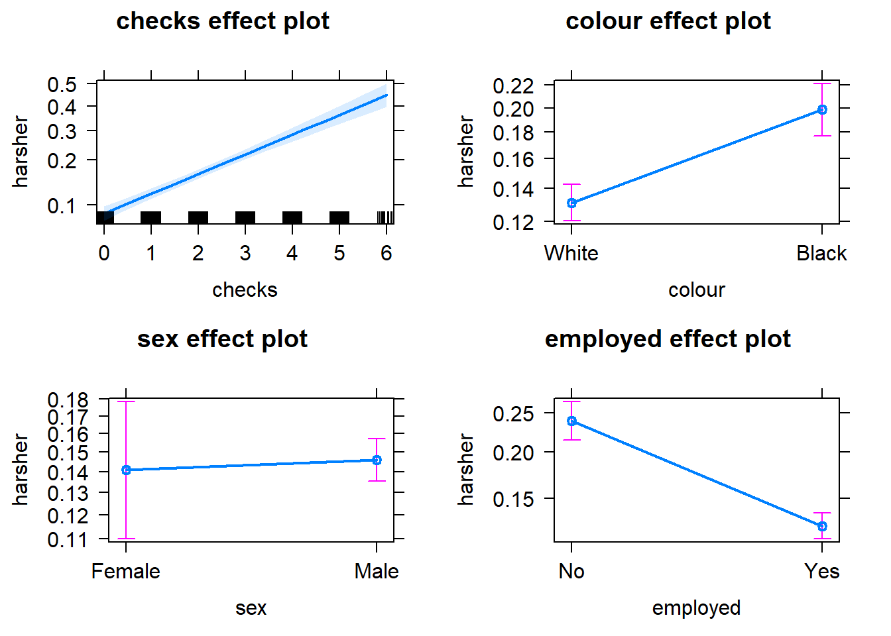
Effect plots in this context are particularly helpful because they summarise the results using probabilities, which is what you see plotted in the y axis.
We don’t have to print them all. When we are primarily concerned with one of them, as in this case, that’s the one we want to emphasise when presenting and discussing our results. There isn’t much point discussing the results for the variables we simply defined as control (given what our research goal was). So in this case we would ask for the plot for our input measuring race/ethnicity:

We can use the predict() function to generate the predicted probability that the arrestess will be released given what we know about their inputs in the model, given values of the predictors. By default R will compute the probabilities for the dataset we fitted the model to. Here we have printed only the first ten probabilities, but the way we use the predict() function here will generate a predicted probability for each case in the dataset.
fitl_1_prob <- predict(fitl_1, type = "response") #If you want to add this to your dataframe you could designate your object as Arrests$fitl_1_prob
fitl_1_prob[1:10]## 1 2 3 4 5 6
## 0.17262268 0.25519856 0.17262268 0.14344103 0.13833944 0.10091376
## 7 8 9 10
## 0.13455033 0.08905504 0.32891111 0.17262268It is important to understand that with this type of models we usually generate two types of predictions. One the one hand, we are producing a continuous valued prediction in the form of a probability but we can also generate a predicted class for each case. In many applied settings, the latter will be relevant. A discrete category prediction may be required in order to make a decision. Imagine of a probation officer evaluating the future risk of a client. She/He would want to know whether the case is high risk or not.
##Assessing model fit I: deviance and pseudo r squared
As you may remember when looking at linear models we could use an F test to check the overall fit of the model and we could evaluate R squared. When running logistic regression we cannot obtain the R squared (although there is a collection of pseudo-R^2 measures that have been produced)15. In linear regression things are a bit simpler. As Menard (2010: 43) explains:
“there is only one reasonable residual variation criterion for quantitative variables in OLS, the familiar error sum of squares… but there are several possible residual variation criteria (entropy, squared error, qualitative difference) for binary variables. Another hindrance is the existence of numerous mathematical equivalents to R^2 in OLS, which are not necessarily mathematically (same formula) or conceptually (same meaning in the context of the model) equivalent to R^2 in logistic regression… Moreover, in logistic regression, we must choose whether we are more interested in qualitative prediction (whether predicitons are correct or incorrect), quantitative prediction (how close predictions are to being correct), or both, because different measures of explained variation are appropriate for these two different types of prediction”
A common starting point for assessing model fit is to look at the log-likelihood statistic and the deviance (also referred to as -2LL).
The log likelihood aims to provide a measure of how much unexplained variation there is after you fit the mode. Large values indicate poor fit.
The deviance, on the other hand, is simply the log likelihood multiplied by -2 and is generally abbraviated as -2LL. The deviance will be a positive value and larger values indicate worse prediction of the response variable. It is analogous to the error sum of squares in linear regression. In the same way that OLS linear regression tries to minimise the error sum of squares, maximim likelihood logistic regression tries to minimise the -2LL.
The difference between the -2LL for the model with no predictors and the -2LL for the model with all the predictors is the closer we get in logistic regression to the regression sum of squares. This difference is often called model chi squared. And it provides a test of the null hypothesis that all the regression coefficients equal zero. It is, thus, equivalent to the F test in OLS regression.
##
## Call:
## glm(formula = harsher ~ checks + colour + sex + employed, family = "binomial",
## data = Arrests)
##
## Deviance Residuals:
## Min 1Q Median 3Q Max
## -1.5226 -0.6156 -0.4407 -0.3711 2.3449
##
## Coefficients:
## Estimate Std. Error z value Pr(>|z|)
## (Intercept) -1.90346 0.15999 -11.898 < 2e-16 ***
## checks 0.35796 0.02580 13.875 < 2e-16 ***
## colourBlack 0.49608 0.08264 6.003 1.94e-09 ***
## sexMale 0.04215 0.14965 0.282 0.778
## employedYes -0.77973 0.08386 -9.298 < 2e-16 ***
## ---
## Signif. codes: 0 '***' 0.001 '**' 0.01 '*' 0.05 '.' 0.1 ' ' 1
##
## (Dispersion parameter for binomial family taken to be 1)
##
## Null deviance: 4776.3 on 5225 degrees of freedom
## Residual deviance: 4330.7 on 5221 degrees of freedom
## AIC: 4340.7
##
## Number of Fisher Scoring iterations: 5In our example, we saw that some measures of fit were printed below the table with the coefficients. The null deviance is the deviance of the model with no predictors and the residual deviance is simply the deviance for this model. You clearly want the residual deviance to be smaller than the null deviance. The difference between the null and the residual deviance is what we called the model chi squared. In this case this is 4776.3 minus 4330.7. We can ask R to do this for us.
First, notice that the object we created has all the information we need already stored.
## [1] "coefficients" "residuals" "fitted.values"
## [4] "effects" "R" "rank"
## [7] "qr" "family" "linear.predictors"
## [10] "deviance" "aic" "null.deviance"
## [13] "iter" "weights" "prior.weights"
## [16] "df.residual" "df.null" "y"
## [19] "converged" "boundary" "model"
## [22] "call" "formula" "terms"
## [25] "data" "offset" "control"
## [28] "method" "contrasts" "xlevels"So we can use this stored information in our calculations.
## [1] 445.5594Is 445.6 small? How much smaller is enough? This value has a chi square distribution and its significance can be easily computed. For this computation we need to know the degrees of freedom for the model (which equal the number of predictors in the model) and can be obtained like this:
## [1] 4Finally, the p-value can be obtained using the following code to invoke the Chi Square distribution:
#When doing it yourself, this is all you really need (we present the code in separate fashion above to that you understand better what the one here does)
with(fitl_1, pchisq(null.deviance - deviance, df.null - df.residual, lower.tail = FALSE))## [1] 3.961177e-95We can see that the model chi square is highly significant. Our model as a whole fits significantly better than a model with no predictors.
Menard (2010) recommends to also look at the likelihood ratio R^2 that can be calculated as the difference between the null deviance and the residual deviance, divided by the null deviance.
## [1] 0.09328629Some authors refer to this as the Hosmer/Lemeshow R^2. It indicates how much the inclusion of the independent variables in the model reduces variation, as measured by the null deviance. It varies between 0 (when our prediction is catastrophically useless) and 1 (when we predict with total accuracy). There are many other pseudo R^2 measures that have been proposed, but Menard based on research on the properties of various of these measures recommends the likelihood ratio R^2 because:
It is the one with a closer conceptual link to R^2 in OLS regression.
It does not appear to be sensitive to the base rate (the proportion of cases that have the attribute of interest) of the phenomenon being studied and therefore will work even in cases with unbalanced probabilities.
It varies between 0 and 1
And it can be used in other generalised linear models (models for categorical outcomes with more than two levels, which we don’t cover here)
##Assessing model fit II: confusion matrix and ROC curves
If we are interested in “qualitative” prediction, we also need to consider other measures of fit. In many applied settings, such as in applied predictive modelling, this can be the case. Imagine you are developing a tool to be used to forecast the probability of a repeat victimisation in cases of domestic violence. This type of prediction may then be used to determine the type of police response to cases defined as high risk. Clearly, you want to make sure the classification you make is accurate as possible. For these and similar applications in which qualitative prediction is important, we use other type of measures.
In these contexts is common to start from a classification table or confusion matrix. A confusion matrix is simply a cross tabulation of the observed outcome in relation to the predicted outcome. We saw earlier how the predict() function generated a set of predicted probabilities for each of the subjects in the study. In order to produce a classification table in this context we need to define a cut-off point, a particular probability that we will use in classifying cases. Anybody above that cut-off we will define as belonging to the level of interest and anybody below we will define as not. We could, for example, say that anybody with a probability larger than .5 should be predicted to receive harsher treatment.
The confusion matrix typically follows this layout:

confusion
The diagonal entries correspond to observations that are classified correctly according to our model and our cut off point whereas the off-diagonal entries are misclassifications. False negatives are observations that were classified as zeros but turned out to be ones (the outcome of interest). False positives are observations that were classified as ones (the outcome of interest) but turned out to be zeros.
There are various ways of producing a confusion matrix in R. The most basic one is to simply ask for the cross-tabulation of the predicted classes (determined by the cut-off criterion) versus the observed classes.
#First we define the classes according to the cut-off
fitl_1_pred_class <- fitl_1_prob > .5
#This creates a logical vector that returns TRUE when the condition is met (the subject is predicted to be released) and FALSE when the condition is not met (harsher treatment was delivered)
fitl_1_pred_class[1:10]## 1 2 3 4 5 6 7 8 9 10
## FALSE FALSE FALSE FALSE FALSE FALSE FALSE FALSE FALSE FALSE#Let's make this into a factor with the same levels than the original variable
harsher_pred <- as.factor(fitl_1_pred_class)
levels(harsher_pred) <- c("No","Yes")
table(harsher_pred)## harsher_pred
## No Yes
## 5113 113##
## harsher_pred No Yes
## No 4278 835
## Yes 56 57From classification tables we can derive various useful measures. Two important ones are the sensitivity and the specificity. The sensitivity of the model is the rate that the event of interest (e.g., receiving harsher treatment) is predicted correctly for all cases having the event.
Sensitivity = number of cases with the event and predicted to have the event / number of samples actually presenting the event
In this case this amount to 57 divided by 835 plus 57. The sensitivity is sometimes also considered the true positive rate since it measures the accuracy in the event populaiton. On the other hand, the specificity is defined as:
Specificity = number of cases without the events and predicted as non-events / number of cases without the event
In this case this amount to 4278 divided by 4278 plus 56. The false positive rate is defined as one minus the specificity.
From the table we produced we can generate these measures automatically. For this sort of things, however, I prefer to go straight to the confusionMatrix() function from the caret package since it produces a very detailed set of calibration measures that are helpful indicators of how well the model is classifying.
## Loading required package: lattice## Loading required package: ggplot2## Confusion Matrix and Statistics
##
## Reference
## Prediction No Yes
## No 4278 835
## Yes 56 57
##
## Accuracy : 0.8295
## 95% CI : (0.819, 0.8396)
## No Information Rate : 0.8293
## P-Value [Acc > NIR] : 0.4943
##
## Kappa : 0.078
## Mcnemar's Test P-Value : <2e-16
##
## Sensitivity : 0.06390
## Specificity : 0.98708
## Pos Pred Value : 0.50442
## Neg Pred Value : 0.83669
## Prevalence : 0.17069
## Detection Rate : 0.01091
## Detection Prevalence : 0.02162
## Balanced Accuracy : 0.52549
##
## 'Positive' Class : Yes
## We can see first the accuracy. The overall accuracy rate gives us the agreement between the observed and predicted classes. However, the overall accuracy is often not the most useful measure. Kappa is also a measure that is often used with values ranging between 0.30 to 0.50 considered to indicate reasonable agreement. But for many applications will be of interest to focus on the sensitivity and the specificity as defined above. In this case, we can see that our sensitivity, or the true positive rate, is very poor. And so it is the Kappa. Clearly the model has problems predicting harsh treatment with the select cut off.
One of the problems with taking this approach is that the choice of the cut off point can be arbitrary and yet, this cut off point will impact the sensitivity and specificity of the model. There is a trade-off between sensitivity and specificity. Given a fixed accuracy, more of one will result in less of the other.
So if we use a different cut off point, say .25, the classification table would look like this:
precision<-function(c) {
tab1 <- table(fitl_1_prob>c, Arrests$harsher)
out <- diag(tab1)/apply(tab1, 2, sum)
names(out) <- c('specificity', 'sensitivity')
list(tab1, out)
}
precision(.25)## [[1]]
##
## No Yes
## FALSE 3627 496
## TRUE 707 396
##
## [[2]]
## specificity sensitivity
## 0.8368713 0.4439462Here we are predicting as receiving harsher treatment anybody with a probability above .25 of doing so according to our model. Our sensitivity goes up significantly, but our specificity goes down. You can see that the cut off point will affect how many false positives and false negatives we have. With this cut off point we will be identifying many more cases as presenting the outcome of interest when in fact they won’t present it (707 as oppose to 56 when using a cut off of .5). On the other hand, we have improved the sensitivity and now we are correctly identifying as positives 396 cases as opposed to just 57 cases). The overall accuracy is still the same but we have shifted the balance between sensitivity and specificity.
Potential trade offs here may be appropriate when there are different penalties or costs associated with each type of error. For example, if you are trying to predict a homicide as part of an intervention or prevention program you may give more importance to not making a false negative error. That is you want to identify as many potential homicide victims as possible, even if that means that you will identify as victims individuals that in the end won’t be (false positives). On the other hand, if you have limited resources to attend all the cases that you will predict as positives you also need to factor this into the equation. You don’t want to use a cut off point that will lead you to identify more cases as potential homicide victims that you can possibly work with.
Similarly, if you think about the criminal justice system, it is essentially built around the idea of avoiding false positives - that is convicting people who are innocent. You will have heard many phrases like “innovent until proven guilty” or “It is far better that 10 guilty men go free than one innocent man is wrongfully convicted”. This approach would incline us to err on the side of false negatives, and avoid false positives (higher sensitivity, lower specificity).
We may want to see what happens to sensitivity and specificity for different cut off points. For this we can look at receiver operating characteristics or simply ROC curves. This is essentially a tool for evaluating the sensitivity/specificity trade off. The ROC curve can be used for investigating alternate cut offs for class probabilities.
We can use the pROC package for this16. We start by creating an object that contains the relevant information with the roc() function form t the pROC package.
## Type 'citation("pROC")' for a citation.##
## Attaching package: 'pROC'## The following objects are masked from 'package:stats':
##
## cov, smooth, varOnce we have the object with the information, we can plot the ROC curve.

We can see the trajectory of the curve is at first steep, suggesting that sensitivity increases at a greater pace than the decrease in specificity. However we then reach a point at which specificity decreases at a greater rate than the sensitivity increases. If you want to select a cut off that gives you the optimal cut off point you can use the coords() function of the pROC package. You can pass arguments to this function so that it returns the best sum of sensitivity and speficitity.
alt_cutoff1 <- coords(rocCURVE, x = "best", best.method = "closest.topleft")
#The x argument in this case is selecting the best cut off using the "closest topleft" method (which identifie the point closest to the top-left part of the plot with perfect sensitivity or specificity). Another option is to use the "youden" method in the best.method argument.
alt_cutoff1## threshold specificity sensitivity
## 0.1696539 0.6305953 0.7163677Here we can see that with a cut off point of .16 we get a specificity of .63 and a sensitivity of .71. Notice how this is close to the base rate of harsher treatment in the sample (17% of individuals actually received harsher treatment). For a more informed discussion of cut off points and costs of errors in applied predictive problems in criminal justice, I recommend reading Berk (2012). Often the selection of cut off may be motivated by practical considerations (e.g., selecting individuals for treatment in a situation where resources to do so is limited).
The ROC curve can also be used to develop a quantitative assessment of the model. The perfect model is one where the curve reaches the top left corner of the plot. This would imply 100% sensitivity and specificity. On the other hand, a useless model would one with a curve alongside the diagonal line splitting the plot in two, from the bottom right corner to the top right corner. You can also look at the area under the curve (AUC) and use it to compare models. An AUC of .5 correspond to the situation where our predictors have no predictive utility. For a fuller discussion of how to compare these curves and the AUC I recommend reading Chapter 11 of Kuhn and Johnson (2014).
##Interactions
The data we have been using were obtained by the author of the effects package from Michael Friendly, another prominent contributor to the development of R packages. The data are related to a series of stories revelaed by the Toronto Star and further analysed by Professor Friendly as seen here. In these further analysis Friendly proposes a slightly more complex model than then one we have specified so far. This model adds three new predictors (citizenship, age, and year in which the case was processed) and also allows for interactions between race (colour) and year, and race and age.
fitl_2 <- glm(harsher ~ employed + citizen + checks + colour * year + colour * age, family = binomial, data = Arrests) #Notice this different way of including interactions
summary(fitl_2)##
## Call:
## glm(formula = harsher ~ employed + citizen + checks + colour *
## year + colour * age, family = binomial, data = Arrests)
##
## Deviance Residuals:
## Min 1Q Median 3Q Max
## -1.7625 -0.6178 -0.4408 -0.3473 2.4496
##
## Coefficients:
## Estimate Std. Error z value Pr(>|z|)
## (Intercept) -1.342e+02 6.929e+01 -1.937 0.052785 .
## employedYes -7.475e-01 8.460e-02 -8.835 < 2e-16 ***
## citizenYes -6.202e-01 1.052e-01 -5.897 3.7e-09 ***
## checks 3.647e-01 2.595e-02 14.055 < 2e-16 ***
## colourBlack 3.617e+02 1.152e+02 3.140 0.001689 **
## year 6.632e-02 3.466e-02 1.913 0.055722 .
## age 9.347e-03 5.495e-03 1.701 0.088979 .
## colourBlack:year -1.802e-01 5.760e-02 -3.129 0.001756 **
## colourBlack:age -3.813e-02 1.016e-02 -3.753 0.000175 ***
## ---
## Signif. codes: 0 '***' 0.001 '**' 0.01 '*' 0.05 '.' 0.1 ' ' 1
##
## (Dispersion parameter for binomial family taken to be 1)
##
## Null deviance: 4776.3 on 5225 degrees of freedom
## Residual deviance: 4275.0 on 5217 degrees of freedom
## AIC: 4293
##
## Number of Fisher Scoring iterations: 5What we see here is that the two interactions included are significant. To assist interpretation of interactions is helpful to look at effect plots.
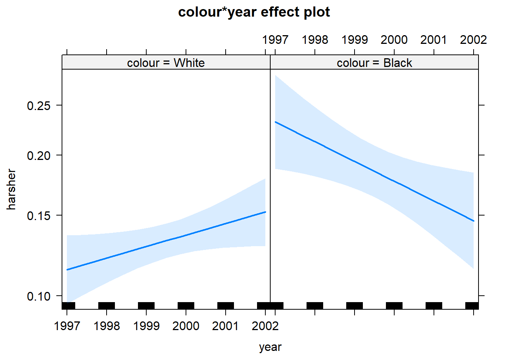
First we see that up to 2000, there is strong evidence for differential treatment of blacks and whites. However, we also see evidence to support Police claims of effect of training to reduce racial effects.

On the other hand, we see a significant interaction between race and age. Young blacks are treated more harshly than young whites. But older blacks treated less harshly than older whites.
We already discussed in a previous session the difficulties of interpreting regression coefficients in models with interactions. Centering and standardising in the way discussed earlier can actually be of help or this purpose.
HOMEWORK: Run a logistic regression model using the BCS0708 data from last week and develop a model that aims to predict victimisation with at least 5 explanatory variables. Interpret your results
##Further resources
These are a set of useful external resources that may aid your comprehesion (and I have partly relied upon myself, so credit to them!):
A set of explanatory notes by Jack Weiss at the University of North Carolina. Check lesson 20 and 21. I really like the look of his whole course.
The UCLA guide to using logistic regression with R.
A helpful list of resources for general linear models with R.
Various of these can be obtained invoking the
pR2()function from thepsclpackage.↩Alternatively one could use the
ROCRpackage. For details, see here.↩This is a reasonable explanation of how to interpret R-Squared.↩
This blog post provides a nice animation of the confidence interval and hypothesis testing.↩
This is a nice illustration of the Simpon’s Paradox, a well known example of ommitted variable bias.↩
Various of these can be obtained invoking the
pR2()function from thepsclpackage.↩Alternatively one could use the
ROCRpackage. For details, see here.↩Various of these can be obtained invoking the
pR2()function from thepsclpackage.↩Alternatively one could use the
ROCRpackage. For details, see here.↩This is a reasonable explanation of how to interpret R-Squared.↩
This blog post provides a nice animation of the confidence interval and hypothesis testing.↩
This is a nice illustration of the Simpon’s Paradox, a well known example of ommitted variable bias.↩
I recommend reading chapter 13 “Woes of regression coefficients” of an old book Mostseller and Tukey (1977) Data Analysis and Regression. Reading: Addison-Wesley Publishing.↩
Various of these can be obtained invoking the
pR2()function from thepsclpackage.↩Alternatively one could use the
ROCRpackage. For details, see here.↩